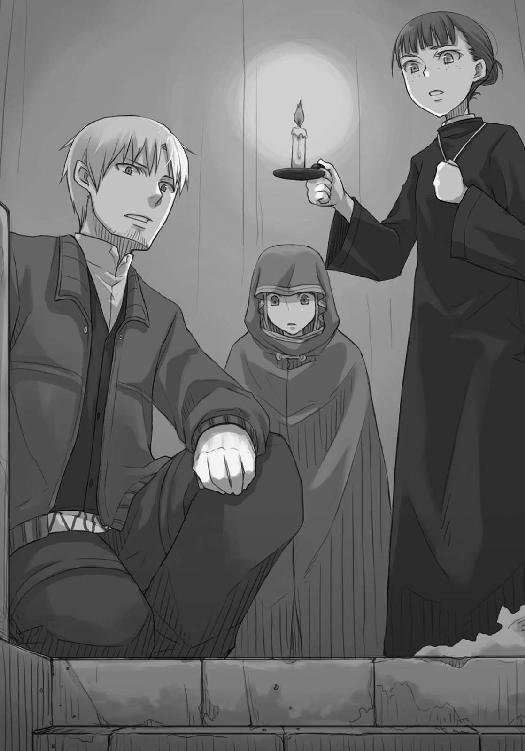
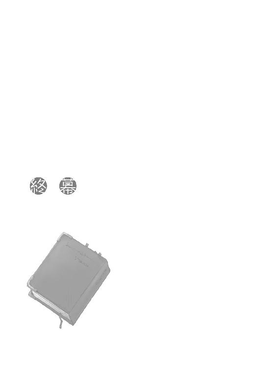

| 狼と香辛料 04 | |
| 支倉凍砂 | |
| KADOKAWA / アスキー・メディアワークス (2013) | |
本書（電子版）に掲載されているコンテンツ（ソフトウェア／プログラム／データ／情報を含む）の著作権およびその他の権利は、すべて株式会社アスキー・メディアワークスおよび正当な権利を有する第三者に帰属しています。
法律の定めがある場合または権利者の明示的な承諾がある場合を除き、これらのコンテンツを複製・転載、改変・編集、翻案・翻訳、放送・出版、公衆送信（送信可能化を含む）・再配信、販売・頒布、貸与等に使用することはできません。
六日間の冬の旅ともなると体に応える。
雪に降られないだけましだったが、それでも寒いものは寒い。
一山いくらで買った毛布など毛布というよりも柔らかい板に近いのだ。暖が取れるならなんだって毛布の中に入れる。
もちろん一番暖かいのは血の通う生き物で、毛皮がついているとなおのこと良い。
ただ、それが喋るとなると少し面倒くさい。
「常々思っておるのじゃが、わっちは損をしているような気がしてならぬ」
空はうっすらと明るくなり始め、夜の最後の厳しい寒さが名残惜しげに顔を撫でていく。
この時間、寒さで目を覚ましてもとても毛布の中から出ることなどできず、しばし明るくなっていく空を眺めていたりするのだが、本日の同じ毛布の中にいる毛皮つきの相方のご機嫌は、初めて見るくらいに斜めだった。
「だから悪かったって」
「悪いか悪くないかといえば、ぬしは悪い。もちろん、わっちゃあ少しでもぬしの寒さが和らげば良いと思ってもいんす。じゃから多少のことは大目に見るし、料金をとろうなどとも言わぬ」
毛布の中で仰向けに寝る、文句を言われっぱなしの青年、クラフト・ロレンスは視線を左のほうにそらす。
十八の頃からもうかれこれ七年も行商をしてきた身であり、大抵のことなら理不尽にでも相手を言いくるめられる自信がある。
しかし、そんなロレンスの右隣でうつぶせに寝て、遠慮なくロレンスに視線と文句の言葉を向けてくる相方にはうまい反論ができない。
琥珀色の目をして、長く綺麗な亜麻色の髪を有し、少しやせ気味だがそれなりに娘独特の柔らかい体つきをした相方の名は、ホロ。
珍しい名前だが、珍しいのは名前だけではない。
なにせその頭には獣のような耳を有し、腰からは立派な狼の尻尾が生えているのだから。
「それでもな、ぬしよ。やっていいことと悪いことがあろう？」
これが寝ぼけて寝込みを襲った、などというわかりやすいことならホロは怒りはしなかったろう。
代わりにロレンスが立ち直れなくなるほどからかった挙句、大笑いしておしまい、だ。
それがさっきからねちねちと文句を言い続けているのは、ホロの腹に据えかねることをしてしまったからだ。
なにをしたかといえば、寒さのあまり、気がつかないうちにホロの尻尾を足の下に敷いて眠っていたのだ。挙句、寝返りを打った時に長い毛を巻き込んでしまった。
御歳数百歳にして日々賢狼を自称し、不本意とはいえ人々からは神と呼ばれていたほどのホロが、女の子のような悲鳴を上げたのだから痛さだけでも相当なものだったのだろう。
ただ、寝ていたのだから仕方ない、ともロレンスは思うのだ。
それに、今でこそねちねちと文句を言い続けてきてはいるが、毛を巻き込んで尻尾をごりごりと足で踏んづけてしまった直後に二回ほど顔を殴られた。
それで許してくれてもいいような気もする。
「人は目を覚まして歩いておっても誰かの足を踏むことくらいありんす。寝ておったらなおさらじゃ。じゃがな、この尻尾はわっちの誇り。わっちがわっちである唯一の証じゃ」
尻尾そのものに大事がなかったとはいえ、毛がいささか抜けてしまっていた。
痛さよりもホロにはそちらのほうが頭にきたらしい。
しかも、その事態に至るまでロレンスはかなり長いこと下敷きにして寝ていたらしく、尻尾の毛がぺっちゃんこにつぶれていた。
しばし呆然と自分の尻尾を見ていたホロは、気まずくて毛布から出ようとしたロレンスの体を押しとどめ、さっきからずっと同じ毛布の中で文句を延々と言い続けている。
腹が立ったのなら徹底的に邪険に扱うか、それとも決闘かというほどに相対するのが相場だろうが、ホロの仕返しの方法のほうがよほど応える。
なにせ、同じ毛布の中にいればそれなりに暖かく、時刻は明け方で、冬の旅路のせいで体は疲れきっている。
そこに反論を許さない小言が延々と続けば、うとうととしてしまうのも無理はない。
当然、眠そうにしていればホロはそこを猛然と批難してくる。
まるで拷問だ。
ホロはよい警吏にもなれるだろう。
「大体じゃな......」
そして、この拷問はホロが怒り疲れて眠くなるまで延々と続いたのだった。
ホロを怒らせると怖いのはもちろんわかっていたが、その怖さも色々あるのだなと、知りたくもなかったことをまざまざと知る一悶着があったあと、ロレンスは荷馬車を進めていた。
怒り疲れて眠くなったホロはというと、ロレンスから毛布を全て奪ったあと、蓑虫のように体に巻いて眠りこけている。
だが、ホロは荷馬車の荷台で寝ているわけではなく、御者台で横になって、ロレンスの膝の上に頭を載せて眠っている。
寝顔だけ見ていればおとなしそうで可愛らしいが、こんなことをする時点で恐ろしいほどに計算高い。
ホロが牙を剝いてくればこちらも迎え撃つ口実ができるし、無視をしてくればし返すこともできる。
それが膝枕の強要となれば、ロレンスの立場は一方的に悪くなる。
怒れず、無視もできず、邪険にもできず、しかも、ホロがなにか食べたいとでもねだってくれば断ることもできない。
ホロは形の上では、和解を宣告しているのだから。
だいぶ日が高く昇り、早朝の空気も和らいできてはいたが、ロレンスの口から出るため息は重い。
今後はこれまで以上にホロの尻尾には気をつけようと思うものの、冬の野宿において、その暖かさは抗いがたい誘惑がある。
どうしたらよいですかと、神様がいるのなら聞いてみたいところだった。
そんな朝の旅路だったが、思いのほか早く終わりを告げることになった。
道中誰ともすれ違わなかったのでまだまだ遠いものだと思っていたところ、ちょっとした小高い丘を越えれば前方に町が見えていた。
この辺りの地域にはロレンスも一度も来たことがなく、土地勘がまったくない。
異教徒と正教徒が混在する広大な国、プロアニアの中央部やや東寄り、といったところで、軍事的にはどうだか知らないが、行商的にはなんの面白みもない地域だ。
それではなんのためにこんなところに来たかというと、言うまでもなく、ロレンスの膝の上で小悪魔のごとく眠っているホロのためだ。
もともとホロと旅をすることになった理由が、ホロの帰郷の道案内ということだ。
ただ、ホロは何百年と故郷から遠く離れた場所にいたせいで、その詳しい道のりも場所も記憶の中でおぼろげになっていた。しかもそれだけの時間が経っていれば世間が大きく変化するのには十分すぎるし、それゆえにホロは故郷に関する話を少しでも集めたがっていた。
たとえ、すでに故郷であるヨイツは滅びているという話を知っていてもなお。
だから、六日ほど前に発った異教徒の町クメルスンでは大昔の昔話を集める修道女のディアナと出会い、話を聞いた。さらに、異教の神々の話だけを専門に集める修道士も紹介してもらった。
その修道士がいる修道院はかなり辺鄙なところにあるらしく、その場所を知るのはテレオという町にある教会の司祭だけということだった。
だが、まずそのテレオに行く道自体があまり知られておらず、先にエンベルクという町に寄ってその道のりを聞かなければならない。
今のロレンスたちは、そのエンベルクにようやくたどり着いたところだった。
「甘いパンが食べたい」
そして、町に入る検問を前にして、もそもそと起き出したホロの開口一番の台詞が、それだった。
「甘いといっても、あれじゃ。小麦のパンがよい」
ねだる品物も実に高価だ。
だが、ロレンスに断る権利はない。
それにロレンスはこの地方にどんな商品の需要があるかわからなかったので、クメルスンで世話になった麦商人のマルクから小麦の粉を買って北上してきたのだが、旅の糧食に選んだのは黒くて苦いライ麦パンだった。
そのけちな判断もずっとホロに嫌味を言われ続けていた。
どれだけ質が良くて大きく膨らんだ小麦のパンをねだられるか考えると、暗澹たる気持ちになる。
「だが先に商品を売ってからだ」
「まあ、その程度なら構わぬ」
どちらかといえばロレンスが乞われてホロの旅の道案内をしているのに、まるでロレンスがホロの従者のようだ。
そんなロレンスの内心に気がついたのか、ホロがローブの下の尻尾をさすりながら意地悪そうに言う。
「わっちゃあ可愛い尻尾をぬしの足の下に敷かれたんじゃ。わっちゃあぬしを尻に敷かぬとな、割に合わぬ」
しばらくねちねちと言われそうだったが、こういう言い方をしてくるということはだいぶ気もすんだのだろう。
やれやれと胸中でため息をつきながら、ロレンスは荷馬車を粉屋に向けた。
エンベルクの町は辺鄙な土地にあるとはいえ、この辺りではれっきとした交易の中心であるようでそれなりににぎわっている。
ロレンスたちが来た方向はたまたま人通りの少ない道だったらしい。
町の中心部には近くの村々から運ばれてきたらしい穀物や野菜、それに家畜が並べられ、売る者と買う者でごった返している。
町の広場に面して建てられている大きな教会も、千客万来とばかりに扉を開け、お祈りや礼拝に来ている者たちが頻繁に出入りしていた。
どこにでもある田舎町、といった感じだ。
検問で聞いたところ、この町で一番大きな粉屋はリーンドット商会というらしい。
粉屋であるのに見栄を張って商会というあたりがなんとも田舎くさい。
ただ、広場を北に抜けて綺麗な道沿いの右側に店を構えるリーンドット商会は、なるほど見栄を張りたくなる気持ちがわかるくらいには大きな店構えで、立派な荷揚げ場を持っていた。
ロレンスがクメルスンで仕入れた小麦はトレニー銀貨でおよそ三百枚分。
よく挽いてふるいにかけたさらさらの粉と、脱穀しただけの麦が半々。
小麦はあまり寒い地方になると育ちが悪くなるので、北に行けば行くほど価値は上がる。
ただ、道中で連日の雨にでも見舞われればすぐに駄目になってしまうし、なにより日常の食べ物としては高価すぎて買い手を探すのも難しい。
元々、空荷で旅をするのが嫌だという行商人特有のけちな発想から小麦を積んでいたのだ。
クメルスンでは大儲けをしたということもあって、欲張っても仕方ないと判断する。
それに、エンベルク程度の規模の町ならば金持ちの貴族や教会の人間がいる感じだったので、粉屋もいとわず買ってくれるだろう。
そういう目論見だった。
「や、小麦ですか」
荷台に小麦を載せた客ということで、商会の主たるリーンドットが応対してくれたのだが、粉屋というよりも肉屋の主人のほうが似合っていそうなでっぷりと肥えた彼は、少し困った顔をしてそう言った。
「ええ、粉と粒の半々といったところですが、質の良さは折り紙つきですよ」
「なるほど、こりゃ確かによくこねて焼けばおいしいパンになるでしょう。ですが、今年はこれ、このとおり、ライ麦が大豊作でして。余分の小麦まで手を回す余裕がないのですよ」
確かに広い荷揚げ場にはそこかしこに麦の詰まっているらしい袋が山積みになっていて、白墨で売りつけ先を記載しているのだろう荷札がずらりと壁に掛けられていた。
「ただ、私らとしましても小麦は儲かりますからね。できれば購入させていただきたいところなのですが、なにぶん手持ちに余裕がなく......」
気まぐれで買ったり買わなかったりする金持ち相手の小麦よりも、仕入れれば確実に売れるライ麦を大事にしたい、というのが本音なのだろう。
特に辺鄙な土地なのだから、付き合いというものはとても大事だ。よその商人に細かい商売を邪魔されないためにも、毎年麦を運んできてくれる村々は大事にしなければならない。
「ところで行商人の方とお見受けいたしますが、今回は新しい販路の御開拓で？」
「いえ、道中商いながら、といった感じなのです」
「なるほど。ちなみに行き先のほうは」
「レノスに向かう予定なのですが、その前にこちらのほうに立ち寄りたい場所がありまして」
リーンドットは少し目をしばたかせる。
レノスはここよりもさらに北の町だが、粉屋とはいえ商会と名乗るほどの店を構えるリーンドットが知らないわけもない。
「それはまた遠いところですが......はて......」
と、案の定、この辺りで商人が立ち寄るような場所はエンベルクしかないだろう、と言いたげだ。
「テレオにひとまず向かっている最中なのです」
そして、ロレンスが答えるとはっきりと驚いた。
「これはまた、テレオなどになんの御用で」
「テレオの教会に少し用がありまして。あ、それで、商談のついでといってはなんですが、テレオまでの道をご存じありませんか」
リーンドットは初めて商う商品の値段を聞かれたように視線を泳がせてから、「道は一本道ですから迷うこともありませんよ。荷馬車でおよそ半日ですね。少し道は悪いですが」と答える。
よっぽど意外だったのかもしれない。きっと、なにもない町なのだろう。
リーンドットはそれからうーんと唸り、視線をロレンスの荷馬車の荷台に向ける。
「お帰りの際は、またこちらに寄る予定などは？」
「申し訳ありません。帰りはまた別の道を」
帰りに寄るのであれば、掛けで購入、というのを考えたのだろう。
ただ、ロレンスはこの辺りを行商路に組み込む予定はない。
「そうですか......では、残念ですが今回はご縁がなかったということで......」
リーンドットは心底悔しそうに顔を歪めるが、半分は噓だろう。
旅路の途中の一見の客から高価な小麦を買うのもなかなか危ない博打だ。
他の麦の粉が混じっているかもしれないし、見た目は良くてもパンにして焼いてみたらとんでもない質の悪さかもしれない。
掛けで購入し、しばらく支払いまで猶予があるのなら、たとえ質が悪くても遠くの地方の田舎貴族にでも騙して売り払ったりと色々処分はできるのだ。
もっとも、ロレンスも別に今すぐ売らなければならないというわけではない。
縁がなかったということで、リーンドットと別れの握手をした。
「やはり小麦は粉よりもパンにして売るのが一番手早く捌けますね」
かじってみれば質の良し悪しなど即座にわかる。粉の質の良さを熱弁するよりも、まさしく百聞は一見にしかずというやつだ。
「ははは。我々商人は皆そう考えますからね。パン屋との喧嘩の火種になってしまいます」
「こちらのパン屋もお強いですか」
「強い強い。パン屋以外がパンを焼けば石の麵棒を持って走ってきます」
商人は商いを、パン屋はパンを作ることを。そういった職の住み分けはどこの町でもあるし、この手の冗談もよくある話だ。
ただ、商人が麦の仕入れからパンの製造までやって商売をすれば大儲けできるというのは事実だ。
それくらい、麦を収穫してからパンになるまでに関わる人間たちの数というものは多い。
「それでは、また神のお導きがあれば」
「ええ、その時は是非当商会をよろしくお願いします」
リーンドットの言葉に笑顔でうなずいて、ロレンスたちは商会をあとにした。
麦が売れなかったのは残念だったが、ロレンスがそれ以上に気になったのはホロがずっと静かだったこと。
「今回は口を挟まなかったな」
ロレンスが軽く聞いてやると、ホロは気のない返事をしたあとに、「ぬしよ」と言ってくる。
「あの主人、テレオまで半日と言っておったな」
「え？ ああ、そうだな」
「今から出れば夕方前には着くじゃろ」
妙に強い口調に、ロレンスは体を引きながらうなずく。
「だが、休憩したほうが良くないか。お前も疲れてるだろう？」
「休憩ならばテレオというところでもできるじゃろう。行けるならば、早く行きたい」
いつになく強い口調に、ロレンスはようやく気がついた。
あまりというか、ほとんど態度にも口にも出さなかったが、ホロは実のところ一刻も早く異教の神々の話を集めているという修道士に会いに行きたかったのかもしれない。
意地っ張りで、妙なところで誇り高いホロだ。
子供のように早く早くとせかすのはみっともないと思っていたのだろう。
ただ、胸の奥底に押し込めていたそれに、目的地が近くなって火がついてしまったようだ。
実際ホロだって疲れているはずなのに、それでもなおこう言うのだからよほどのことと思われた。
「わかった。なら、温かい飯だけ食べていこう。それくらいならいいだろう？」
そして、ロレンスがそう言うと、ホロは突然きょとんとしてこう言った。
「それは当然じゃろう？」
ロレンスの顔が苦笑いになってしまうのも、当然のことだった。
どこまでも続くかと思われた緩やかな風景はやがて終わり、景色はもう少し神様が手をかけて造ったものへと変わっていった。
柔らかにしすぎたパン生地をべたんと落としたような起伏が幾層も重なり、その隙間を川が流れ、木がうっそうと生い茂った森もところどころにあった。
二人が乗る荷馬車はごとごとと小さな音を立てて小川に沿って作られている道を進む。
ホロは相変わらず眠りこけていたが、やはり、エンベルクでは無理にでも休憩を取るべきだったかもしれない。
深夜から明け方にかけては、寒さのせいで寝たり起きたりを繰り返す冬の旅路。元は野を駆け回り人間など物の数ではない能力を誇る狼でも、少女の姿の時は少女の体力しかないらしい。
そうであればホロにとっては苛酷な旅以外のなにものでもないはず。
ロレンスに寄りかかって眠っているその感じも、どことなくぐったりとしている気がしないでもない。
修道院に着いたらしばらく逗留させてもらおうかと考える。
ただ、質素な生活を送らざるを得なくなるとそれはそれでホロは嫌がるかもしれないな、などと思っていた頃、ロレンスは川幅が少し広くなり始めたことに気がついた。
小川は右手の斜面を回り込もうとするかのように流れているのでその先は見えないが、徐々に川幅が広がっていき、やがてはっきりそれとわかるほどになって流れがゆっくりになる。
そして、かすかに聞こえてくる独特の音。
ロレンスはすぐにその先になにがあるのか理解した。
耳の良さが狼並みのホロは、寝ていても道の先にあるものの音を聞きつけたらしく、もそもそと顔をこすったあとにフードの下から顔を出した。
テレオの町も近いらしい。
ついには流れが止まり小さな池のようになった頃、荷馬車の行く先にこぢんまりとした水車小屋が現れた。
「水車があるようならそろそろだな」
水量の少ないところでは、水を貯めて水面の高低差を利用して水車を動かすことになる。
元々水量が少ないのだからそうしたところで水車の回転には限界があったが、収穫も終えて久しいこの時期になると水車小屋の前に行列ができていることもない。収穫直後だと麦を粉にしようとたくさんの者たちが長い列を作ったりもする。
今は、黒ずんだ水苔色の小さな小屋は、寂しげにぽつんと建っていた。
そんな水車小屋の壁の木目までが見えるようになったかという頃、ひょいと小屋から出てくる影があった。
ロレンスが慌てて手綱を引くと、荷馬は不平を漏らしながら首を横に振って足を止める。
飛び出してきたのは、この寒いのに腕まくりをし、肘のあたりまで粉で真っ白になっている少年だった。
「おわっとっと。悪い悪い。なあ、あんた旅の人だろ？」
そして、ロレンスが馬に続いて不平を口にする前に荷馬車の前に回り込むなりそんなことを言った。
「......旅の人かと問われればそのとおりだが、そっちは？」
少年、といっても一週間ほど前に市場で戦った魚商人のアマーティとは違い、やや細身ながら力仕事に慣れた均整の取れた体つきをしている。背の高さもロレンスと同じくらいだろう。北の地に多い黒髪黒目で、弓よりも斧が似合いそうな力強さがある。ただし、髪の毛は粉のせいでだいぶ変な色合いになっていたが。
水車小屋の中から出てきて粉で真っ白となれば、それを誰かと問うのはパンの並ぶ露店を何屋かと問うようなものだ。
「はは、見たとおりの粉挽きだよ。で、どっから来たんだ。あんた、エンベルクの人じゃないだろう？」
屈託なく笑う様は、ロレンスから見ても子供っぽいと思ってしまう。
自分より六、七歳は下だろうかと思いつつ、またホロを巻き込んで面倒なことにならないだろうなと警戒心が頭をもたげてくる。
「ご明察と言うついでにこちらも聞きたい。テレオの町まであとどのくらいかかる」
「テレオの......町？」
と、その少年はロレンスの言葉にきょとんとしたあと、歯をむいて笑った。
「テレオが町ならエンベルクは王国都市だ。テレオになんの用か知らないけど、ちんけな村さ。この粉挽き小屋を見てもわかるだろう？」
その言葉には多少驚いたものの、テレオのことを教えてくれたディアナはホロと同じく何百年と生きるらしい人ならざるものだということを思い出した。
今では村でも昔ならその地方で一番大きな町、ということも珍しくない。
ロレンスはうなずいてから、「で、どのくらいかかる」と聞きなおした。
「もうすぐそこだよ。もっとも、立派な柵が張り巡らせてあるわけじゃないんだ。今、ここがテレオだと言ってもいいくらいだろうさ」
「なるほど。わかった。ありがとう」
放っておけばいくらでも喋り続けそうな様子だ。
ロレンスは短くそう言って、少年を迂回するように馬を動かそうとしたところ、少年が慌ててそれを制止した。
「ま、まま。そんな慌てることはない。な、そうだろ旅の人？」
両手を広げて通せんぼをされたら、さして広くもない道だから回り込むこともできない。
無理やり押し通って通れないことはないだろうが、怪我でもさせたら初めて行く場所であるテレオの人間たちに悪い印象を与えてしまうだろう。
ロレンスは嘆息まじりに、「なにか用かな」と言ってやる。
「あー、あー......用と言われても......あ、そ、そう、あんたえらい美人そうな人連れてるね」
フードをかぶっておとなしくうつむいているホロは、笑う代わりに毛布の中で尻尾を少しだけ動かす。
ロレンスとしては、いい加減そんなホロと旅をしていることに対する優越感よりも、また面倒事に巻き込まれるのではないかという考えにうんざりしてしまう。
「巡礼途中の修道女さ。さ、もういいだろ？ 商人の行く先をふさげるのは徴税吏だけだ」
「し、修道女？」
すると、少年は意外な単語に驚いた顔をする。
エンベルクには立派な教会が町の中心にあったので、どうやら小さな村らしいテレオが根っからの異教徒の村とは考えにくい。プロアニアの北の地方であっても、立派な教会があるような町の近くで異教徒の村であり続けるには、それなりの武力というものが必要だからだ。
それに、テレオには教会があるはずなのだから、なぜこの少年が驚くのか。
ロレンスが一瞬そんなふうに思案すると、少年は目ざとくそこに気がついたようだ。
どうやら、ホロのことよりもロレンスのほうが気になるらしい。
「わかった、旅の人。もうこれ以上足止めはしない。けれども俺の話を聞いて欲しい。テレオに修道女を連れていくのはやめたほうがいい」
「ほう......」
ロレンスの目には少年がでたらめを言っているようには見えない。
念のため膝掛けの下でホロの足を軽く蹴ってみると、フードの下で小さくうなずくのがわかった。
「その理由は？ 私たちはテレオにある教会に用があって来た。教会があるなら修道女が行っていけない理由はないだろう。それとも──」
「い、いや、教会はあるよ。理由？ 理由は......なんというか、喧嘩をしてるんだよ。エンベルクの教会のむかつく連中とな」
急に表情を引き締め、ギラリと目を光らせる様は駆け出しの傭兵に見えなくもない。
思いのほか鋭い敵意が表れたことに驚いたが、ロレンスはすぐに少年が粉挽きであることを思い出した。
「で、それでだ、なんというか、そんなところにのこのこと修道女が行ったらややこしくなるかもしれないだろう？ それで俺は行って欲しくないわけさ」
敵意が引っ込めば急に愛嬌のある少年に早変わりするものの、少年の主張は少しおかしい。
けれども悪意があってロレンスたちにそう言っているわけではなさそうなので、問い詰めることはしなかった。
「そうか。まあ、注意するよ。まさか行った途端に叩き出されることもないだろう？」
「そりゃあ......ないと思うけど......」
「いや、ありがとう。参考にするよ。修道女とわからない格好で訪ねるぶんには構わないだろう？」
少年はほっとして、無邪気にうなずく。
「そうしてくれると助かるよ」
ロレンスへの注意がいつの間にか嘆願になっている。少年の本音は、これだろう。
「ただ、教会になんの用なんだい？」
「道を訊ねに来た」
「道を？」
少年は怪訝そうな顔をして、カリカリと頰を搔く。
「ふーん......なんだ、じゃあ、商売に来たわけじゃないのか。あんた行商人だろう？」
「君は粉挽きだったな」
鼻の先を爪弾かれたように少年は笑い、それからすぐに残念そうに肩を落とす。
「なんだ、商売に来たのなら役に立てるかと思ったのに」
「その時は協力を頼むよ。もういいか？」
少年はまだなにか言いたそうだったが、話をつなげる糸口も見つからなかったようで、軽くうなずいて道をあけた。
そして、物欲しげな視線を向けてくる。
だが、別に情報料をせびろうというわけではないとわかっている。
ロレンスは手綱を離して手を差し出し、まっすぐに少年の目を見て努めてゆっくりと言った。
「私の名はクラフト・ロレンス。君の名は？」
瞬間、花が開くように少年の顔が笑顔になって御者台に駆け寄ってくる。
「エヴァン！ ギヨーム・エヴァン！」
「エヴァン。わかった。君の名前は覚えておく」
「ああ！ 絶対覚えておいてくれよ！」
大きい音が苦手な馬なら今すぐにでも暴れ出しそうな声でエヴァンは言い、ロレンスの手を力いっぱい握ってくる。
「帰る時にも是非寄ってくれよ！」
馬から離れ、水車小屋の入り口に立ってからも大声でそう言った。
真っ黒い水車小屋の前に立つ、粉で真っ白くなった少年。
名残惜しげにロレンスたちのことを見送っているその様はどこか寂しげだ。
そして、ロレンスは絶対やるだろうなとは思っていたが、ホロが振り向いて小さく手を振ると、エヴァンはびっくりしたように肩をすくめ、それから大笑いしながら両手を大きく振った。
その様は麗しの娘から手を振られて喜ぶ若僧というよりも、気の合う友達を見つけたことを喜ぶ少年のものだ。
道は右に向かってゆっくり曲がっているのですぐにエヴァンの水車小屋も見えなくなり、ホロは前を向いて座りなおす。
それから、悔しそうに口を開いた。
「むう。わっちよりもぬしばかり見ておったな」
悔しそうに言うホロにロレンスは笑い、一回大きく息を吸ってからため息をついた。
「粉挽きだからな。色々大変なんだろう」
ホロが不思議そうな視線を向けてきて、小首をかしげる。
こんな仕草のよく似合うホロに目もくれず、行商人であるロレンスと握手することを望んでいたのだから、そこには何がしかの理由がある。
ただ、それが楽しいものであるかといえば、首はしっかりと横に振られる。
「羊飼いと同じようなものだ。必要な職業だが、町や村では嫌われる」
それもある程度は場所によるが、あの水車小屋がテレオの人間たちから敬われ慕われている水車小屋だとはとても思えない。
「たとえばだな......、お前、首から提げている袋に麦が入ってるだろ」
今は幾枚もの服の下になっているが、ホロは自身が宿るという麦を詰めた巾着を首から提げている。
「その袋に入っている麦を、脱穀して、石臼で挽いたら、どれくらいの量になると思う？」
その言葉にホロはしばし自分の胸元を見る。
麦の豊作を司り、実りの良し悪しを操れるというホロも、麦を挽いた粉がどのくらいの量になるかと問われると、わからないようだった。
「仮に、これくらいの量の麦粒だとする」
ロレンスは手綱から手を離し、左手の掌の上に指で山を描く。
「それを脱穀して粉にするとな、せいぜいがこのくらいだ」
その量を表すのは指で描いた山ではなく、人差し指と親指で形作る小さな小さな円。
麦は石臼で挽くと、驚くほどに量が少なくなる。
では、毎日毎日畑に入り、汗水流して育てた麦が、豊作の神様に散々祈ってようやく実をつけたとして、それを粉にした時にこんなにも少なくなったとなればどうか。
ロレンスがホロに問うと、「むう」と小さく唸った。
「水車小屋の粉挽きの手は、指が六本あると言われてる。一本は手のひらに生えていて、その一本で挽いた粉をくすねているってな。しかも、水車は大抵その地方の領主のものだ。粉を挽くたびに税金を取られるが、いちいち領主が水車小屋で見張っているわけにもいかない。そうすれば税金を集めるのは誰か？」
「順当に言えば粉挽きじゃな」
ロレンスはうなずき、続けた。
「税を喜んで払う人なんていない。だが、集めないわけにもいかない。では一番の恨まれ役は誰か？」
人ならざるものでありながら、人の世の仕組みを人以上に知っているようなホロだ。
もちろんすぐに解答にたどり着く。
「なるほどの。なら、あの小僧がわっちではなくぬしにばかり尻尾を振っておったのは」
「ああ、そうだ」
ため息まじりにうなずくと、ようやく前方にテレオの村の家々が見えてきた。
「この村から出たくて出たくてしょうがないんだろ」
粉挽きは誰かがやらなければならない重要な仕事だ。
けれども、それをする者は大抵疑われ、嫌われ、感謝されることはない。
特に、麦はよく挽いたほうがパンにした時によく膨らむ。
しかし、よく挽けば挽くほど見た目の量は減るものだ。
良かれと思ってなにかをすれば、それが逆に反感を買う。
まるでどこかで聞いた話だと言うこともなく、ホロは聞かなければよかったとばかりに前を向いた。
「だが、必要な職業だ。感謝する人もいるさ」
ロレンスが手綱を握る前にホロの頭に手を載せれば、その手の下でホロは小さくうなずいたのだった。
エヴァンはテレオをちんけな村だと評したが、そこまでひどいわけでもない。
町と村の区別といえば市壁の有無くらいのものなのだ。町とは名乗っていても貧相な木の柵があるだけというところがままあるなか、テレオは村にしては立派だった。
確かに村らしく建物は密集して建っておらずあちこちに散らばってはいたが、中には石造りの建物もある。村の真ん中というのか、一応中心部と呼んでいいくらいに建物が集まっているところには、石畳ではないけれども、穴のない綺麗な道が通っている。件の教会も遠目からすぐに見つかるくらいに大きく、塔もあり、鐘もある。
本当に町と名乗るのに必要なのは、あとは市壁だけという感じだった。
ホロはエヴァンの忠告に従い、ローブではなくロレンスの外套を頭からひっかぶり、首のところだけを紐で縛って雨合羽のように着た。いつもどおりの町娘の格好だと少し垢抜けすぎて目立つと踏んだからだ。
なにせ、ホロはただでさえ目立つ。
そんな変装をさせたあとに、荷馬車を進めて建物が並び始める辺りまで来た。
市壁がないのは門がないということで、それは旅人への税の徴収がないことにつながる。
旅の荷馬車が村に入るのを誰が止めるわけでもなく、ロレンスは藁束をまとめている男の遠慮のない視線に会釈をしながら馬を進めていった。
村は全体的に埃っぽく、主要な通り以外は穴だらけになっている。建物は、石造りと木造を問わず大きく、そしてまた、屋根が低い。町中ではなかなか見られない大きな庭がついている家もたくさんある。
道のところどころには収穫の終わりを告げる藁束がうずたかく積み上げられ、それらに混じるように越冬のための薪の備えもあった。
出歩く人の数はとても少なく、放し飼いになっている鶏や豚の数のほうが多いかもしれない。
ただ、唯一共通するのは皆が皆、ロレンスたちに気がつくとじろじろと見ていることだ。
この辺りは、やはり町というよりも村の雰囲気だった。
久しぶりに感じる、自分は異邦人なのだという実感。
ロレンスも寒村の出だからわかるが、村というものは極端に娯楽が少なく、旅人は格好の餌食だ。
そんなことを思いつつ道を進んでいくと、大きな一枚岩が置かれた広場に突き当たった。
ここが村の中心部になるらしく、周辺には広場を取り囲むように建物が並んでいる。
軒からぶら下がっている鉄製の看板から察するに、宿と、パン屋、それに、酒場があり、毛織物かなにかの作業場もある。一際大きく間口を設けてある建物もあったが、きっとここは収穫した麦などを脱穀したり、粉にしたものをふるいにかけたりする共同の作業場だろう。
他は昔からこの村に住む有力者の家に見え、その中に教会もある。
さすがにここは立ち話をする人たちや遊んでいる子供たちが多く、好奇の視線に晒されることになった。
「大きい岩じゃな。なにに使うのかや」
しかし、ホロはあまり気にならない様子で暢気にそんなことを聞いてくる。
「多分、祭りの時に儀式をしたり、踊ったり、会議をしたり、といったところだろうな」
綺麗に平らにされた、高さがちょうどロレンスの腰くらいの岩と、上に上がるために木製の階段が備え付けられているあたり、単なる目印としてここに置かれているわけではないだろう。
もちろん正確なところは村の人間に聞いてみないとわからないが、ホロも曖昧にうなずいて御者台に深く座りなおす。
それから岩を回り込むようにして馬を教会へと向けた。
村人たちは相変わらず好奇の視線を向けてはくるものの、山奥にある未開の村ではないのだ。
荷馬車が教会の前で止まると、旅の途中に安全祈願でもしに来たのかと納得したらしく、あからさまにわかるくらい視線の数が激減した。
「やれやれってな声が聞こえてきそうだな」
馬を止めて御者台から降り際にホロにそう言うと、秘密を共有して楽しむ子供のように笑った。
教会は立派な石造りで、門は鋼の縁取りをした木製。
建てられてからかなり年月が経っているのか、組まれた石の隅はやや風化して崩れていて、扉に取り付けられているわっか状の鉄のノッカーも人があまり触れていないように感じられた。
また、修道院でもなければ礼拝のない時は扉が開けっ放しであるのが普通だが、今はぴったりと扉が閉じられている。
そこから察せられる雰囲気を簡単に口にすれば、この村の中であまり親しまれていない、だ。
しかし考えていても仕方がないので、ロレンスはノッカーを手にとって扉を何度か軽く打つ。
かん、かん、と乾いた音がし、妙に広場にこだましたような気がした。
しばらく待ったが返事もなく、留守なのかもしれないと思った直後、扉が大きく軋みながらわずかに開かれた。
「どなたですか」
そして、少しだけ開いた扉の隙間から聞こえてきた声は、あまり友好的とは思えない娘のものだった。
「突然の訪問お詫びします。私は旅の行商人でロレンスと申します」
飛び込みの商談に欠かせない笑顔もつけてそう言うと、扉の隙間の向こうで目が怪訝そうに細められた。
「商人の、方？」
「はい。クメルスンから参りました」
これほど警戒心があらわな教会というのも珍しい。
「......そちらは？」
と、視線が隣のホロに向けられる。
「ちょっとした縁から共に旅をしている者です」
ロレンスの簡単な説明に、娘はロレンスとホロを交互に見比べてから小さくため息をつき、ゆっくりと扉を開ききった。
扉の向こうにいたのは、驚いたことに裾の長い司祭服を身にまとった少女だった。
「どのようなご用向きですか」
ロレンスは驚きを隠せたと自信はあるものの、司祭服を身にまとった少女は口調に相応しい不機嫌そうな顔を少しも緩めない。こげ茶色の髪をきつく縛り、蜂蜜色の瞳に挑むような光をたたえている。
それよりも、教会に来てどのようなご用向きかと問われることもめったにない経験だ。
「はい。実はこちらの教会の司祭様にお会いしたいのですが」
女の身では普通の状況下では司祭になり得ない。教会組織は徹底的な男社会だからだ。
そう思ってロレンスは口を開いたのだが、それは司祭服を着た少女の眉にさらに深い皺を刻むナイフになってしまったらしい。
しかも、あからさまに少女は自分の服を見て、それから視線をロレンスに再度向ける。
「正確には司祭ではありませんが、当教会を預かるエルサ・シュティングハイムです」
女の身で、しかもこれほど年若く。
大商会の敏腕当主が少女だった、ということよりも驚くに値する。
しかし、エルサと名乗った少女はそういった反応に慣れているらしい。「それで、御用向きは」と再度冷静に言い放つ。
「え、ええ、道をお訊ねしたく」
「道？」
「はい。修道院への道なのですが、名前はディーエンドラン修道院。院長はルイズ・ラーナ・シュティングヒルト院長という方なのですが」
ロレンスは言いながら似たような苗字だなと思っていたが、それを聞いたエルサは一目でわかるほどにはっとした。
どうしたのか、と思う間もなくすぐに驚きの表情を引っ込めたエルサが口を開く。
「存じません」
言葉だけは丁寧に、けれども険の強さは相変わらずでエルサは言い、あろうことかロレンスの返事を待たずに扉を閉めようとする。
商人相手にそう簡単に扉を閉められると思われては困る。
ロレンスはすかさず足を扉の間に挟んで、にこやかに言った。
「こちらにフランツ司祭という方がいらっしゃるとお聞きしたのですが」
扉の間に挟まっているロレンスの足を憎々しげに睨むと、エルサはそのままロレンスの顔も睨みつけてくる。
「司祭は夏に亡くなりました」
「え」
そして、ロレンスが驚いた瞬間に重ねて言い放つ。
「もういいでしょう？ そんな修道院の場所は知りませんし、私は忙しいんです」
これ以上食い下がって人を呼ばれても困る。
ロレンスが足を引き抜くと、エルサは怒気をはらんだため息を残して扉を閉じた。
「......」
「えらい嫌われようじゃな」
「寄付をしなかったのがいけなかったのかもしれない」
ロレンスは肩をすくめて隣のホロを見る。
「フランツ司祭が亡くなってるというのは本当か？」
「噓には思えぬ。じゃが」
「修道院の場所を知らないのは噓だな」
あんなあからさまに驚かれては目隠ししていたってわかりそうなものだ。
ただ、教会を預かっている、というのは本当なのだろう。いたずらにしてはあまりにも危険だ。
もしかしたら、エルサはフランツ司祭の娘、実の娘ということはなくても、養女なのかもしれない。
「どうする？」
ホロはすぐさま返事をした。
「よもや押し入るわけにもいくまい。ひとまず宿じゃな」
村人たちの奇異の視線を受けながら、二人は荷馬車に乗り込んだのだった。
「うぅー......久々じゃ......」
と言って、ホロは宿の部屋に入るなりベッドの上に体を投げ出して伸びをした。
「まあ、荷馬車の荷台よりかはいくらかましだろうが、虫がいるかもしれないからな、気をつけろ」
木を組んでその上に布や綿を敷いたものではなく、藁束をきつく縛り上げてベッドにしたものだから、冬場は冬眠のため、夏場は繁殖のために虫がわんさとやってくる。
気をつけろと言っても気をつけようがないのだが、ホロのふさふさの尻尾はいかにも虫が好みそうだ。
「なに、わっちにはすでに悪い虫がついておる」
頰杖をついて意地悪く笑うホロの様を見て、確かにその虫もたくさん寄ってくるだろうなとため息をついた。
「狭い村だからな。騒ぎを起こすなよ」
「ぬしの態度次第じゃな」
苦い顔をしてホロを睨むと、ホロはそっぽを向きうつぶせになって、尻尾をゆらゆらさせながら大欠伸だ。
「少し眠い。寝てもいいかや」
「駄目だと言ったらどうするんだ」
笑って聞いてやると、振り向いたホロは妖艶に目を細めて言った。
「ぬしの側でうつらうつらする」
その様を想像するとそれも悪くはないかと思ってしまうところが情けない。
お前の胸中など見透かしているとばかりのホロの眼から逃げるように咳払いをし、ロレンスは戦うのを避けた。
「まあ、疲れているのは本当なんだろう？ 体調を崩す前に休んでくれるのは旅の伴侶として助かる」
「ふむ。悪いがそうさせてもらいんす」
追撃を放つこともせず、ホロはあっさりと目を閉じる。
ゆらゆらと揺れていた尻尾もぱたりと伏せられ、今にもいびきが聞こえてきそうな感じだった。
「ケープを脱いで、腰に巻いてるローブも外して、そこに脱ぎ捨ててある俺の外套もたたんで、それから最後に毛布をかぶって眠っておけ」
喜劇に出てくるわがままな貴族のお嬢様というのはこういう輩なのだろうと思わずにはいられない。
ホロは注意されても顔を上げることすらしない。
「俺が帰ってくるまでに服をたたんでいなかったら晩飯の質を落とすぞ」
まるで子供を叱っている親の気分だが、ホロもぐずる子供よろしくちらりと視線を向けてくる。
「ぬしは優しいからそんなことせぬ」
「......お前な、いつか痛い目見るぞ」
「ぬしにできるものならな。それはそうと、ぬしはまたどこか行くのかや」
話しながらすでに目が眠そうになってきているホロに、ロレンスは仕方なく歩み寄って毛布をかけてやる。
「通り抜けるだけならまだしも、このぶんだとちょっとここに滞在することになりそうだからな。村長に挨拶してくる。それに村長なら修道院の場所を知っているかもしれない」
「......そうかや」
「そういうわけだから、おとなしく寝ててくれ」
ホロは毛布を口元まで引き寄せつつ、うなずいた。
「土産はないけどな」
「......構わぬ」
今にも眠りに落ちそうなとろんとした声音で、うっすら目を開けたホロは言った。
「ぬしが帰ってきてくれさえすれば......」
罠だとわかっていても、不意をつかれると対処できない。
ホロの耳が楽しそうに動いていた。
土産はもらえずとも、ロレンスの間抜けな顔は手に入れた。
「先にもらいんす。おやすみ」
そしてもそもそと毛布の下に潜るホロに、ロレンスは降参の意味を含めて「ごゆっくり」と返したのだった。
積荷の小麦を適当な袋に小分けして、宿の主人に村長の家を聞いて宿を出た。
どうやら季節はずれの旅人がいたく気になるらしい子供たちが扉の外にたまっていたようで、ロレンスが扉を開けるとくもの子を散らすように逃げていった。
宿の主人の話では、秋と春に行われる収穫と種まきの祭りの際にはそこそこ人が来るらしいが、やはり街道から外れていることもあってたまたま立ち寄る旅人も少ないらしい。宿も客はロレンスたちだけということだった。
そんなテレオの村の村長宅は、広場沿いに建てられている建物の中でもっとも立派なもので、土台と一階部分が石造りで、二階三階と木造になっている堂々としたものだ。
扉も教会がそうであったように立派な鉄の縁取りをしてあり、なおかつ細かい装飾も入っている。
扉に取り付けられたノッカーは蛇か蜥蜴を思わせるもので、少し趣味がよろしくない。
ただ、おそらくは土着の神を模したものだろう。蛇や蛙の神様というのは意外に多いのだ。
「ごめんください」
そんなことを思いながら扉をノッカーでノックすると、しばしの間をあけて扉が開けられ、粉で汚れた前掛けをした、両腕も真っ白な中年の女性が現れた。
「はいはい、どちらさま」
「突然失礼します。私、旅の行商人でクラフト・ロレンスと申しますが──」
「あらあら、村長さーん！ 噂の方よ！」
口上を途中で遮られ面食らってしまったものの、女性のほうはお構いなしに「村長さーん」と奥のほうに行ってしまう。
ぽつんと取り残された格好になったロレンスは、誰が見ているわけでもないが、調子を取り戻すために小さく咳払いをする。
そして、しばしそんな形で待たされたのちに、奥から先ほどの女性が杖をつく小柄な老人に付き添って戻ってきた。
「ほらほら、この方でしょう」
「ケンプさん、お客様に失礼ですよ」
そんなやり取りもロレンスの耳に届いていたが、これで腹を立てるほどロレンスも懐が狭いわけではない。
それに、陽気であけっぴろげな村の婦人ほど商売の役に立つ者はいない。
そういう意味で、ロレンスはとびっきりの笑顔で二人の前に立てた。
「やや、これは失礼しましたね。テレオの村を預かっておりますセムと申します」
「初めまして。行商人のクラフト・ロレンスと申します」
「ほら、ケンプさんは奥で皆さんと続きをしてなさい......やあ、失礼。季節はずれの旅の方ということで、暇なご婦人方の噂の的になっておりまして」
「良い噂をされていることを願います」
セムは笑い、「まあ、どうぞ中へ」とロレンスを部屋の中へ案内した。
入り口からはまっすぐに廊下が伸びていて、奥の広間からは笑い声が聞こえてくる。
ついでに鼻をくすぐる粉っぽさから、おそらく収穫した麦なりをパンにするため談笑しながらこねているのだろう。
田舎の村ではよく見られる光景だ。
「奥に行きますと真っ白になってしまいますからね、こちらにどうぞ」
と、広間手前の扉を開け、ロレンスを先に通してセムもあとに続く。
そして、通された部屋に入ってロレンスはぎょっとした。
壁際の棚の上に、巨大な蛇がとぐろを巻いていたのだ。
「ははは、ご安心ください。生きてはおりません」
そう言われてよくよく見ると、黒光りするウロコはかさかさとした感じで、ところどころ皺が寄っている。蛇の皮を干して、中に詰め物をして再び縫い合わせたものだろう。
扉に取り付けられていたノッカーを思い出す。やはりこの村で崇拝されているのは、蛇なのだ。
勧められた椅子に座りながら、あとでこの話をホロにしてやろうと思った。
「さて、どのようなご用件でお見えになったのでしょう」
「はい。第一に、こちらの村に寄らせていただいたご挨拶に。こちらは取り扱っております小麦です」
と、小分けして持ってきた小麦の粉の入った袋を差し出すと、セムは驚いたように目をしばたかせた。
「これはこれは。最近は旅の行商人の方というと一言目には商売ですから」
ロレンスもちょっと前まではそうだったので、耳が少し痛い。
「して、第二の目的は？」
「ええ。実は修道院を探しているのですが、その場所をご存じではないかと」
「修道院？」
「はい。先ほど教会のほうにも出向いてお伺いしたのですが、生憎知らないと」
困ったような顔の下ではもちろん油断なく商人の目がセムを捉えている。
一瞬、セムの目が泳いだのがわかった。
「左様ですか......。私も生憎とこの近辺に修道院があるというのは聞いたことがないのですが、そんなお話をどちらで？」
セムも本当は知っている、とロレンスは直感した。
しかし、どこで話を聞いたのかということで噓をつくと、あとあと困るかもしれない。正直に答えておくことにした。
「クメルスンです。そちらの修道女の方から」
ピクリとセムの口髭が動く。
なにか隠し事をしているのは間違いない。
いや、とロレンスは気がついた。
セムもエルサも修道院の場所のみならず、そこになにがあるのかも知っているのではないだろうか。
ロレンスが探している修道院は、ディアナから紹介してもらった異教の神々の話を集める修道士がいるというところだ。
もしもセムとエルサがそのことを知っているのなら、関わり合いになりたくないということでしらを切るかもしれない。
なにより、ディアナが修道院の場所を聞くようにと名前を教えてくれたフランツ司祭はすでに天の国へ旅立っている。
残された者たちが危ない橋を封印してしまったとしてもおかしくはない。
「クメルスンでお会いした方から、こちらのフランツ司祭にお聞きすれば修道院の場所はわかると教えられたのですが」
「左様ですか......しかし、フランツ司祭は夏に......」
「お聞きしました」
「惜しい方を亡くしました。この村のために長年尽力してくださった方ですから」
セムの哀しげな様子が演技とも思えないが、かといって教会が敬われているようにも見えない。
どうにもちぐはぐな感じがした。
「それで、今はエルサさんが？」
「はい。お若いですから、驚かれたでしょう」
「ええ、そうですね。それで──」
と、あとを続けようとしたところに、扉を遠慮なく叩く音がして「村長さん！」の声が上がる。
聞きたいことが喉元に山のように迫り上がってきていたが、ここで焦ってもなんの得にもならないだろう。
それに、ひとまず挨拶もすんだ。ロレンスは引き上げることにした。
「お客さんのようですね。私も連れが心配なのでひとまず失礼致します」
「おや、それはそれは。ろくなおもてなしもできずに申し訳ありません」
村の人間なのか、ひとしきりどんどんと扉を叩いたところで先ほどロレンスを出迎えてくれたケンプという婦人が応対している。
「良い報せだといいのですが......」
セムがそんなふうに呟くのを耳にしながら部屋を出ると、この寒いのに顔を真っ赤にして汗をかいている旅装の男がロレンスを押しのけてセムに歩み寄る。
「村長さん、これ、預かってきたんだ！」
セムは目だけで謝ってきたが、ロレンスは笑顔で村長宅をあとにした。
ひとまず旅の行商人としては良い印象を持ってもらえただろう。
これで、少しは村にいやすくなるはずだ。
それにしても飛び込んできた男は一体なにを持ってきたのだろうか。
村長宅を出ると、すぐ目の前に体中から湯気を立てている馬が一頭だけ、つながれもせずに置かれ、子供連中が遠巻きに眺めている。
装備から少し遠方から来たように見受けられるし、飛び込んできた男の格好も旅装だ。
村人が遠方に出ていくことなど一体なにがあるのだろうかと少し考えてしまうが、この村には商用で来たわけではない。
どうにかしてセムかエルサから修道院の場所を聞き出すのが先決だ。
さてどうするか。
ロレンスはそんなことを考えながら、宿に戻ったのだった。
ホロがあまりにも気持ち良さそうに寝ていたので、ロレンスも軽く横になったらいつの間にか眠ってしまっていたらしい。
目を覚ますと部屋が薄暗かった。
「服をたたんで毛布をかけなければ、飯の質を落とすそうじゃな？」
そして、体を起こすとかけた覚えのない毛布がかかっていた。
「お前は優しいからそんなことはしないだろうさ」
欠伸まじりにホロの台詞をそのまま返すと、尻尾の毛づくろいをしていたホロはくつくつと笑った。
「だいぶ寝たな......。腹が減らないか」
「ひもじい思いをしながらも、ぬしを起こさぬわっちの優しさをぬしは知っておるかや？」
「しめしめと財布から金を盗ってたんじゃないのか」
怒るわけではなく、にやりと牙を見せるところがホロらしい。
ロレンスはベッドから下りて、木窓を小さく開けると外を眺めながらこきりこきりと首を鳴らした。
「村は夜も早そうだな。この時間なのに広場は誰もいないぞ」
「露店もないしの。飯は大丈夫なのかや」
途端に不安そうな目になって、窓枠に腰掛けたロレンスにホロが言う。
「酒場に行けば大丈夫だろう。旅人が一年中まったく来ない場所というわけでもないだろうし」
「ふむ。ならば早く行こう」
「寝起きなんだがな......わかった。わかったよ」
睨むホロに肩をすくめ、ロレンスは窓枠から腰を上げておやと気がついた。
「あれは？」
人気のなくなった薄暗い夕暮れの広場をたたっと駆け抜ける人影が一つ。
目を凝らせば、粉挽きのエヴァンだった。
「ほう？」
「っ」
と、いきなりホロが足元から現れたのでロレンスは思わず叫び声を上げそうになる。
「いきなり現れるな。驚くだろ」
「ぬしは臆病じゃな。それより、あれがどうしたかや」
いきなり足音も衣擦れの音すらもさせずに現れれば誰であっても驚きそうなものだが、いちいちホロのからかいに付き合っていては身が持たない。
「いや別に。どこに行くのかと思っただけだ」
「教会のようじゃな」
粉挽きの少年はどんな職業の人間よりも正直さが求められる。
教会都市リュビンハイゲンで、羊飼いの娘ノーラが教会から厳しい労働条件と疑いの目を向けられつつも、粛々と礼拝に参加していたようなものだ。
頻繁に礼拝に来ているのかもしれない。
「怪しいの」
「俺たちのほうがな」
そんなことをしている間に、エヴァンが教会の扉を軽く叩く。妙な叩き方だったので、エヴァンであることを知らせる符丁かもしれない。
ただ、やや人目を忍ぶようにして、控えめに扉をノックするのもエヴァンの職業を考えれば納得がいく。
それに、この村で教会の立場はあまり良くなさそうだ。
そんなわけなのでやれやれとばかりに木窓から離れようとしたロレンスの服の裾を、ホロが力を込めて引っ張った。
「なんだよ」
ロレンスの質問にホロは窓の外を指差すだけ。
当然その先には教会があるはずで、ロレンスの視線も迷わずそちらに向けられる。
そして、目に入った光景に少しだけ驚いた。
「うふ、なるほどのお」
ホロが殊更楽しそうに呟き、尻尾が床を掃除するかのようにわさわさと揺れる。
ロレンスはしばしそんな光景に見入ってしまったが、すぐに我に返って木窓を閉じた。
途端に、ホロが振り向いて不満げな視線を向けてくる。
「人の生活を覗き見していいのは神だけだ」
「......むう」
ホロは言葉に詰まって、つまらなそうに木窓のほうをちらちら見る。
教会の扉をノックし、出てきたのは当然エルサ。
けれども、出てきたエルサを迎えたエヴァンは、大切な荷物を預かるように一回エルサの体を抱きしめたのだ。
エルサの体の預け方を見るに、親しみを込めた挨拶、という言葉ではくくれない。
「ぬしは気にならぬのかや」
「商売の密談をしているなら気になるけどな」
「しておるかもしれぬ。わっちの耳なら盗み聞きできるがどうするかや」
ホロが牙を片方だけ見せて笑い、目を細める。
「お前がそんな俗なことに興味津々だとはな」
ため息をつきながら殊更呆れるように言ってやると、ホロは細めた目に怒りを混ぜながらするりとロレンスと窓の間から抜け出て、体を起こす。
「興味津々で悪いかや」
「少なくとも褒められたことじゃないだろう」
商売の密談を聞くためなら三日三晩壁に耳を押し当てるのは商人の鑑として褒められそうだが、他人の睦言を聞くほど野暮なことはない。
「ふん、わっちゃあなにも好奇心から言っておるわけじゃありんせん」
ホロは軽く腕組みをして、小首をかしげて目を閉じる。ちょっとなにかを思い出しているような仕草にも見える。
好奇心以外になにがあるんだと、ロレンスはホロがどんな言い訳をしてくるのか逆に楽しみだった。
ホロはしばしその姿勢のまま固まり、やがて口を開いた。
「ふむ。強いて言えば勉強じゃな」
「勉強？」
思いのほかありきたりな答えにがっかりする。
それに、ホロがこれ以上ああいったことを勉強してどうするのか。
それこそどこかの国の王でもたぶらかすつもりなのかもしれない。
そうなったら各種の免税特権を色々もらおうなどと、あり得ない空想を頭の中で転がしながら水を飲もうと水差しに手を伸ばして、そこにホロが言葉をつないだ。
「うむ、勉強じゃ。わっちとぬしが傍から見るとどのように見えるか、の」
こつん、と鉄製の水差しに指が当たり、倒れるそれを慌てて摑もうとして、失敗した。
「のお、ぬしよ。何事も傍から見てみぬとわからぬじゃろう？ 聞いておるかや」
くつくつと喉で笑っているのがよくわかる。ついでに、背中を向けているというのにどんな表情なのかもわかりすぎるほどにわかった。
幸いあまり水が入っていなかったので大事にはならなかったが、こっちのほうは大惨事だ。
「わっちゃあ傍から見るとあんなことをぬしにされておったんじゃなあ......」
しみじみと言うホロの言葉にこれ以上反応しないようにと耳にふたをし、ロレンスはこぼしてしまった水の後始末に取り掛かる。
なにからどう怒るべきかわからない。
いや、なんで腹が立つのかもわからない。
可能性としては、あんまりにもあんまりにわかりやすく動揺してしまったことだ。
「くふ。まあ、あれらに負けておるとは思わぬがの」
それに反応すればまたどんなふうに罠に嵌められるかわからない。
水を拭いて、水差しを元に戻し、少しだけ残った中身を一気に飲み干す。
できれば強い酒が欲しかったが。
「ぬしよ」
ホロの短い呼びかけ。
これを無視すれば、ホロも少しむっとするだろう。
喧嘩になれば分はホロにある。
ロレンスは一回ため息をつき、諦めたようにホロのほうを振り向いた。
「腹が減った」
そう言ってホロは笑う。
ホロのほうが、一枚も二枚も上手だった。
「いーい飲みっぷりだ！」
やんやの喝采を受けながらテーブルの上に無骨で大きな木のジョッキを置いたのは、町娘の格好に着替えたホロ。
口の周りに隠者の聖人もかくやといった白い泡の髭を生やし、もう一杯とばかりにジョッキから手を離さない。
居酒屋の客は面白がって次々に自分のジョッキからビールを注いでいき、あっという間にいっぱいになる。
ある日突然町にやってきた珍妙な二人連れの客。何者かはよくわからないけれども、居酒屋で気前よく全員に酒を振る舞ったうえに相当な飲みっぷりとくれば、大抵の村では歓迎される。
しかも、そのうちの一人が美しい娘となればどうか。盛り上がらないわけがない。
「ほらほら、連れの娘に負けていちゃ男が廃るというものだ、どんどんいきな、どんどん！」
ホロがそんな様子だからロレンスも当然勧められるわけだが、ロレンスはホロと違いここで話を集めるつもりだ。
のせられるままにがぶ飲みして酔いつぶれるわけにもいかない。
場の勢いをそがない程度に飲み、あとは出された食べ物を食べながら少しずつ世間話を振る。
「いや、いいビールですね。これはあれですか、なにか特別な醸造の秘訣が？」
「はっはっは、そりゃあもちろんだ。ここの居酒屋の女将、イーマ・ラネルといえばこの辺じゃ聞こえた名前だ。その腕っぷしは男三人前、食い扶持は五人前という......」
「旅の人に噓教えるんじゃないよ。はい、羊肉のにんにく炒めおまちど」
木の皿の角で男の後頭部を小突き、件のイーマは手早く料理をテーブルに並べていく。
赤い巻き毛を束ね、威勢よく腕まくりしている姿はなるほど男三人前といわれるのもわかるような恰幅のよさ。
だが、男の返事はロレンスの質問の答えになっていない。
「痛ってえなあ、これから女将のことを褒めようとしたんじゃないか」
「なら今のは悪口だってことだろ。そのお返しさ」
同じテーブルにつく全員が笑い、別の男が続きを引き取った。
「この女将はな、昔一人でビールの醸造鍋を背負って旅をしてたんだよ」
「はは、まさか」
「はははは、初めて聞く奴は皆そう言うんだ。でも、本当のことだよなあ」
別のテーブルの酔っ払いの相手をしていたイーマはその呼びかけで振り向いて、「ああそうだよ」とあっさり答える。
それから、一通り用を終えたらこちらのテーブルに戻ってきて口を開いた。
「あれはあたしが今よりももっとうら若く美しい時の話さ。あたしゃあもっと西のほうの生まれでね、海沿いの町に住んでた。けどまあ海沿いの町なんてのは波にさらわれる運命さ。ある日でかい船が港に来たと思ったら、あっという間に波に飲まれちまった」
それが海賊の話だろうというのはすぐにわかった。
「でね、あたしゃあ他の人らに混じって一目散に町から逃げ出したんだけど、気がついたら背中には醸造鍋を一つと、手には大麦の詰まった袋を摑んでた。なにを考えてたのかねえと今でも思うよほんとに」
遠い目をしてしみじみと言う女将の顔はどこか懐かしそうで、うっすらと笑っているが、当時はきっととても大変だったに違いない。
ロレンスと同じテーブルについていた男が、「ま、女将も一杯」と言ってジョッキを差し出す。
「おっと悪いね。で、女が身一つで町に行ってもろくな仕事なんかありゃしない。あの時は山三つ向こうまで海賊に荒らされていたという話だったし。それであたしゃ背負ってた鍋と引っ摑んで持ってきた麦と、そこらへんを流れてた川の水とでビールをこしらえたのさ」
「そして、それを飲んだのがたまたま通りがかった海賊退治の視察に来ていた辺境の伯爵様御一行だった！」
合いの手に拍手もつき、女将はジョッキの中身をグーッと一気にあけて一息つく。
「いやあ、あの時ほど恥ずかしかったことはないよ。髪はぼさぼさ、顔も真っ黒にしながらうら若き乙女が森の中でなにをしているかと思えば、ビールの仕込みなんだからさ。あとで聞いたらてっきりあたしのことを森の妖精だと思ったと言うんだから、ま、あの伯爵様もなかなか見る目があるさね」
今度は別のところで拍手と喝采が起きたが、見ればどうやらホロが飲み比べで勝ったらしい。
「それでね、伯爵様はあたしのビールをうまいと言ってくれてね。行く先々の町が荒らされていてろくに酒も飲めないから、共に旅をしてビールを造ってくれと言われたんだよ」
「これはしめたものと伯爵様についていくうら若き野心家の乙女、イーマ・ラネル！」
「ところが、伯爵様にはすでに美しいお后様が！」
「そうなんだよねえって、あんな不細工な伯爵様にこの美しいあたしはもったいないよ。黒貂の毛皮は欲しかったけどね」
「それで、お抱えの醸造師にでも？」
ロレンスは思ったことを口にしてから、それはないかとすぐに気がついた。
お抱えの醸造師なら、テレオの村の居酒屋で女将に納まっていないだろう。
「ははは、それは無理な話さね。もちろん世間知らずのあたしはそんな夢を見ていたけどもね。あたしが伯爵様から旅のお供にもらった礼といえば、馬鹿でかい屋敷での豪華な晩餐一回と、伯爵様お墨付きのビールという名で売ってもいいという権利さ。ま、それだけでも過ぎた褒美だったよ」
「で、そこから始まる、世にも珍しいビールの歩き売り女の物語だ」
「さすらいの乙女醸造師と言いな」
どん、とテーブルを拳で叩くと、全員が背筋を正してうなずいた。
「ま、そんなわけで道の途中でビールを仕込んでは売って、の繰り返しでね、もちろん色々あったけれどもまあ順調さ。ただ唯一の間違いは......」
「そう、テレオの村を訪れたイーマを襲う、とある悲劇！」
絶妙の間合いで台詞が挟まるのだ。
きっと、旅人がここに来るたびに話しているのだろう。
「あたしは自分が仕込んだビールを決して飲まなかった。少しでも多く売ろうと思っていてね。だからどんな味なのかろくすっぽ知らなかったんだけれども、この村に来て初めて飲んじまってね。そのうまさに病み付きになった。で、べろんべろんに酔っ払った時に引っかかったのが今の亭主さ」
きっと今頃裏の厨房で苦笑いをしているだろう亭主の顔を想像しながらロレンスは笑い、他の連中はあからさまな泣き真似をした。
「こんな場末の酒場の女将になっちまってねえ。けどまあこの村もいいところだよ。ゆっくりしていっとくれ」
イーマはにっこりと笑ってテーブルをあとにし、ロレンスは偽りのない笑顔でその背中を見送った。
「いやあ、いい酒場です。これほどのところ、エンディマにもそうそうない」
プロアニア王国の王都エンディマは、教会都市リュビンハイゲンすら軽くかすむプロアニア以北の地最大の都市。
プロアニアでは町や村を褒める時に使う定番の文句だ。
「そうだろうそうだろう。兄さん旅の行商人にしちゃあ見る目がある」
自分の故郷を褒められて嬉しくない者などいない。
男連中はこぞって顔をほころばせて酒を飲む。
いい頃合だとロレンスは思った。
「それに、酒もうまい。この村はよほど神に愛されているのでしょうね」
ひょいと会話にそんな言葉を混ぜてみる。
すると、油の中に水滴を落としたようにぷっかりと言葉が宙に浮いた。
「あっと、これは失礼」
異教徒たちの酒の席でうっかり失言して肝を冷やした、などという仲間の行商人の話は腐るほどある。
ロレンスも少なからずそんなことがあり、その時の反応にそっくりだった。
「いやいや、兄さんは悪くない。この村にはでかい教会があるからな」
一人が気遣うように言って、次いで他の連中もうなずいた。
「ま、こんな辺鄙な村にもな、色々複雑な事情っちゅーものがあってな......。確かに、死んじまったフランツさんはこの村にとって大恩人だ。でもなあ......」
「だなあ。それでもなんだかんだ言っても、やっぱりトルエオ様には逆らえねえ」
「トルエオ様？」
「ああ、村の守り神さ。村に豊作をもたらし、子供は健康に育ち、悪魔は近寄れない。テレオの村の名の元になった神様さ」
なるほど、とロレンスは胸中で呟く。きっと、セムの屋敷の部屋に置いてあった蛇のことだろう。
相槌を打ちがてら視線をホロに向けると、あれだけ大騒ぎして酒をがぶ飲みしているというのにホロと目が合った。
こちらの神様も、相当に侮れない。
「豊作の神様ですか。いえ、私も行商人ですから色々見聞きしています。やっぱりトルエオ様も狼ですか？」
「狼？ 馬鹿言っちゃいけねえ。あんな悪魔の手先、神なもんかね」
相当な言われようだ。これはちょっとホロをからかうネタになるだろう。
「と、いうと？」
「トルエオ様は蛇だよ蛇。蛇の神様さ」
うっかりしていると荷物に潜り込まれたり毒を持った牙を剝かれたりと蛇も狼も迷惑さは大して変わらないが、北の地だと蛇の神様というのはとても多い。
すると、教会が目の敵にするのも蛇になる。聖典では、人を堕落させたのも蛇だ。
「私も蛇の神様の話は聞いたことがあります。山から下りて海に向かう際、はいずった痕が大きな川になった蛇とか」
「おお、おお、トルエオ様をそんなものと一緒にしちゃ駄目だ。なにせトルエオ様は頭と尻尾で天気が違うと言われ、朝飯に月、夕飯に太陽を飲み込むと言われているんだ。格が違うよ、格が」
そうだそうだ、と口々に言う。
「それに、トルエオ様の話はそこらへんにある眉唾のものとはまったく違う。なにせ村の外れにはトルエオ様が冬眠するために掘った穴が残ってるんだからな！」
「穴が？」
「おうよ。もちろん洞穴なんかどこにだってあるがな、その洞穴にだけは蝙蝠も狼も近寄らねえ。昔旅人が度胸試しに入っていったら二度と帰ってこなかったという話だ。そこに入ると祟りがあるとは昔からの言い伝えだが、フランツ司祭だってこの穴には入っちゃならねえと真剣な面持ちで言ったものさ。なんなら見に行くかい。歩いてすぐだぜ」
ロレンスは殊更恐ろしげに首を横に振ったが、この様子だと教会が利用されていないのもうなずける。
それどころか、未だに打ち壊されていないのが奇跡なような気がする。
ただ、そう思って少し考えてみれば、その理由がなんとなくわかった。
テレオの近くにある町、エンベルクの存在だろう。
「だがなあ、お前さん、ここに来る前にエンベルクに立ち寄っただろう？」
ロレンスがどうやってその話を聞こうかと思っているところに、先に村人のほうからエンベルクの単語が出た。
「あそこの町にでかい教会があったろ。今はバン司教というのが治めてるんだがな、あそこには代々腹の立つ連中がいてな」
「もともとあそこは、ここよりぜんぜん小さい寒村だったという話だ。それがトルエオ様の恩恵に与ってきたはずなのにある日突然、村に宣教にやってきた教会の連中の話にころりと騙されてあっさり教会側に鞍替えしやがった。そうしたら見る見るうちに教会ができて、人が来て、道が敷かれて......。ついには立派な町になって、力をつけてこの村に無理難題を吹っかけてきた......」
「でよ、そうなれば当然こっちの村も改宗させようとするだろう。そこで俺たちの前の前の代の人たちが頑張った結果、教会を建てることでひとまず穏便にすませようってことになった。けれども町と村の規模の差は歴然だ。俺たちのトルエオ様を見逃す代わりに村に重税を課してきやがった......とじいさん連中はことあるごとに言ってたもんだ」
よくある表向きの改宗と取引の話で、今でも布教の最前線で耳にすることがある。
「そこに三十年だか四十年前にやってきたのがフランツさんだ」
村を巡る話がだんだんわかってきた。
「なるほど。しかし、今はエルサさんというお若い方が教会を治めてらっしゃいますよね」
「ああ、それなんだよなあ......」
酒が回っているので実に口が軽い。
思い切って気になっていたことを全部聞いてしまうことにした。
「教会で旅の安全を祈っていただこうと思ったら、エルサさんのようなお若い方が司祭服を着ていらしてびっくりしましたよ。あれには、やはりなにか特別な理由が？」
「やっぱりそう思うだろう？ エルサの嬢ちゃんはもう十年以上前だろうか、フランツ司祭に拾われてな。いい子なんだが、あれで司祭は無理があるよな」
一人が同意を求めると、他の連中も一様にうなずく。
「エルサさんにはまだ荷が重いのであれば、エンベルクの教会から人を招いて、というのは駄目なのですか？」
「それがだなあ......」
と、答えた男が言葉を濁して隣の男に視線を向けるが、その視線を受けた男も隣の男に視線を向ける。
結局、ぐるりとテーブルを一周して、最初の男があとを続けた。
「あんた、遠くの国の商人さんだろ？」
「え、ええ」
「なら、こう、なんだ、知り合いに名のある教会の偉い人とかいないのかい」
話のつながりが見えないが、どうも雰囲気としては知り合いがいるなら詳しいことを話してやろうという感じだ。
「がつーんと一言エンベルクの連中に言えるような──」
「こら！」
と、突然男の後頭部をはたいたのは先ほどのイーマ。
「旅の人に一体なにを喋ってるんだい。村長さんにどやされるよ」
母親に叱られた子供のようにしゅんとなる様はもう少しで笑ってしまいそうになるところだったが、イーマの視線が自分に向けられてロレンスは慌てて笑顔を奥底に引っ込めた。
「隠し事をするみたいですまないね。けど、旅の人にも、いや、だからこそわかるだろ。村には村の中の問題というのがある」
ビールの醸造鍋を背負って旅をしていたというイーマの言葉は説得力がある。
それに、ロレンスももちろんその意見には賛成だ。
「旅の人には村の料理を食べ、酒を飲んで、楽しんでもらう。そして、別の土地に行ってあの村は良かったと言ってもらう。これがあたしの持論さね」
「ええ、私も同感です」
イーマはにこりと笑い、「はい、じゃああんたらはさっさと酒を飲んで盛り上がるのが今日の最後の仕事だよ！」と言って男たちの背中を叩きながら、ふと視線を別の方向に向けた。
それから、ロレンスに向かって苦笑する。
「と言いたいところだけれども、連れの人が潰れたみたいだね」
「久しぶりの酒で羽目を外しすぎたのかもしれません」
ちょうど自分のジョッキの中の酒もなくなりかけていたので、ロレンスは残りを一息で飲み干すと椅子から立ち上がった。
「醜態を晒す前に宿に連れて帰ります。一応は嫁入り前なので」
「はっはっは、あたしの経験から言うけど、女には酒を飲ませてなんぼだね」
豪快なイーマの言葉のあとに、周りにいた男連中が困ったような忍び笑いをしているあたり、色々と逸話があるのかもしれない。
ロレンスは「参考にします」と答えてから、銀貨をテーブルの上に置いた。
すぐさまこの酒場で溶け込めるようにと大盤振る舞いのトレニー銀貨十枚払い。
金遣いの荒い知人は嫌われるが、金払いの良い旅人に限ってはどこに行っても歓迎されるものだ。
酔い潰れてテーブルの上に突っ伏したまま眠ってしまったらしいホロを回収し、冷やかしの言葉や楽しい時間の感謝の言葉に見送られて酒場をあとにした。
不幸中の幸いといえるのは、居酒屋が宿屋と同じ広場に面していたこと。
いくらホロが小柄だといっても、この大飯食らいの狼娘は信じられないくらいに飲み食いするのでその分とても重くなっている。抱きかかえるのはちょっと一苦労だ。
もっとも、それは本当にホロが酔いつぶれていればの話だが。
「飲み食いしすぎだ」
ホロの腕を肩に回し、半ば脇に抱えるようにしてホロを運んでいたロレンスがそう言うと、いくらかホロの足に力が込められたようで、少し体が軽くなる。
「げふ......わっちが喋る間もなく飲み食いしておったのは、それが役目だからじゃろうが」
「もちろんわかってはいるが......お前、高いものばかり頼んでいただろ」
ホロが目ざといように、ロレンスだって金の絡むことには目ざとい。
ホロのいたテーブルに運ばれる酒や料理を見ていなかったわけがない。
「けちくさい雄じゃな......じゃが、そんなことより先に横になりたい......苦しい」
足取りがおぼつかないのは演技ではなかったのか、と小さく嘆息しつつも、ロレンスも少し酒が回ってきているので落ち着いて座りたかった。
テレオの村の広場には、いくつかの建物の明かりがうっすらと漏れ出ているだけで人の姿はない。
日が暮れてしばらく経っているとはいっても、やはり町とは違うということがよくわかる。
宿にたどり着いて扉を開けても、小さな蠟燭が申し訳程度に明かりを提供しているだけで、主人の姿はない。
ホロと同じテーブルで飲んだくれていたのだから当然なのだが。
客の帰還に気がつき、宿の女将が奥から出てきたが、ホロの醜態を見て苦笑いだ。
水を運んでくれるように頼んでから、ぎっぎっと軋む階段を上り、二階の部屋へと行く。
部屋そのものは全部で四部屋あるらしかったが、客はロレンスとホロの二人だけ。
これでも収穫祭や春の種まき祭の時には周辺から結構人がやってきて盛り上がるらしい。
また、飾り気のない宿には唯一、廊下の壁に昔ここを訪れた騎士のものだという紋章を刺繡した織物が飾られていた。
ロレンスの記憶が正しければ、開けっ放しの窓から入る月明かりに照らされたそれは、プロアニア以北では有名な聖人殺しの傭兵の旗印だ。
知らないのか、それとも知っていてもなお飾っているのかはわからない。
けれども、テレオと教会がどんな関係にあるのかは、これを見るだけでもなんとなくわかるというものだった。
「おい、もうちょっとだから寝るな」
階段を上っていたあたりから怪しくなり始めたホロの足取りは、部屋の前に来てついに限界に達したらしい。
これはまた二日酔いだな、と呆れるよりも気の毒に思いながら部屋に入り、なんとかベッドにホロの体を横たえる。
閉じていてもなお月明かりが幾筋も部屋に入り込んできているおんぼろの木窓を開け、肺の中にある喧騒と熱気に満ちた空気と、冬の夜の荘厳なまでに冷たい空気を入れ替える。
そして、そんな折に扉をノックする音がしたので振り返れば、女将が水と共に見慣れない果物を持ってきてくれていた。
聞けば、食べておくと二日酔いに効く果物らしいが、生憎とそれが一番必要な者は完全に眠ってしまっている。ただ、断るのも悪いのでありがたく頂いておくことにした。
堅くて真ん丸い、片手で二つ握れてしまう大きさのそれをかじると、途端にこめかみが痛くなるようなすっぱさが口の中を暴れ回る。
確かに、なんだかとても効きそうな気がする。もしかしたら商売になるかもしれない。これは明日以降、暇があったら調べようと記憶にとどめておく。
それにしても、とロレンスは酒場での騒ぎを思い出す。
ホロが酒場の空気になじむ早さには目を見張るものがあった。
もちろんホロには事前に目的を伝えていたし、役割を教えてもいた。
旅人二人が酒場に来れば、質問攻めに遭うか遠巻きによそよそしくされるかのどちらかだ。
それらを回避するにはまず、現金をばら撒くこと。
交易をしていない村は現金を得る方法がほとんどないが、完全に隔離された村でもなければ現金なしでやっていけるというわけでもない。
旅人を歓迎してくれるところのほとんどがこれ目当てだ。そうでもなければ、素性もよくわからない者を村の中で歓迎するわけがない。
次に、酒をよく飲み飯をよく食べること。
酒や飯は一見の客にはどれほど質の悪いものを出されるかわからない。へたをすれば毒を混ぜられ、命まではとられないものの身包みの一切をはがされたうえに近くの山にでも捨てられてしまうかもしれない。
つまり、よく食べてよく飲むのは、それだけ相手を信用しているということ。
そして、そんなことに注意しなければならないというのに、信用されてまでなお冷たい態度を取るほど冷たい人たちばかりではない、というのがまた世の中の面白いところといえる。
これらは行商で新しい販路を開拓するうちに身に着けたことだったが、ホロはそんなロレンスよりもよほどうまく酒場の空気を我が物としていたし、お陰で予想していたよりも楽に、村の連中から聞きづらいことを聞き出せた。
最後の肝心のところで女将たるイーマに止められてしまったが、上々といえるだろう。これが商用の旅であるのならば、ホロに金一封を差し出してもよいくらいだ。
ただ、ここまであっさりとうまくやられてしまうと、これまで一人でそれなりにうまく商売をやってきた身としては少し面白くないものがある。
年の功だといえばそれまでだ。
しかし。
ロレンスは木窓を閉じ、自分もベッドに寝転がって思う。
ホロが商売の知識を手に入れたとしたら、その時点で強力な商人が一人生まれるのと同じなのは間違いない。あんなにもたやすく人の輪に入れる行商人が自分の商売圏にいたら、別の販路を探そうかと考えるだろう。ホロはそれくらいの商人になれる。
すると、ロレンスの夢はどこかの町に店を構えることで、それをうまくいかせるには一人よりも二人、二人よりも三人のほうがいいのは目に見えている。そこにホロがいてくれればどれほど心強いだろうと思うのは自然なことだった。
ホロの故郷であるヨイツは、もうそれほど遠くはないし、場所も皆目わからないというわけではない。
ここで修道院の場所を聞けず、新しい手がかりを得られなかったとしても、遅くても夏前にはたどり着けるだろう。
ホロはその後、どうするつもりなのだろうか。
口約束とはいうものの、ロレンスがホロと交わした契約は、ホロが故郷に帰るまでの道案内だった。
ロレンスは天井を見たまま、ため息をつく。
旅には別れがつき物だとはわかっていたし、理解もしているつもりだ。
それでも、ホロの才覚だけでなく、打てば響くような楽しい会話のやり取りなど全てをひっくるめて、ホロとの旅が終わることを考えると少し胸が苦しくなった。
ロレンスはそこまで考えて目を覆い、暗闇の中で口だけを笑みの形にした。
商人が商売以外のことを考え出すとろくなことがない。
それもまたロレンスが七年の行商生活で得た教訓の一つだ。
気にするべきは財布の中身。
考えるべきは飲み食いしたがるホロを諫めるその方法。
ロレンスは胸中で繰り返し呟き、ようやく眠れそうな気がした。
ろくなことじゃない。
まったくろくなことじゃなかった。
鍋で煮詰めたボロ布を天日に干して乾かしたような毛布では、早朝の寒さに打ち勝てなかった。
自分のくしゃみで目を覚まして、また一日が始まったのだと認識した。
この時間帯の毛布の中の暖かさはまさしく万金に値するが、その暖かさはなんの対価も生み出さない。
それどころか時間を食いつぶす悪魔の子供だ、とばかりにロレンスは体を起こし、隣のベッドを見ると、ホロはすでに起きていた。
背中をこちらに向けて、なにをしているのかうつむいている。
「ホ......」
とまで口にしてやめたのは、ホロの尻尾が見たこともないくらいに膨れ上がっていたからだ。
「ど、どうした」
なんとかそうとだけ言うと、ホロの耳がピクリと動き、ついで、ようやくゆっくりとこちらを振り向く。
日が昇りきっていない、早朝の青い空気の中で、口元から白い息を吐きながら肩越しに振り向いたホロ。
その目には涙が浮かび......、その手には、かじられたばかりらしい真ん丸い小さな果物が握られていた。
「......食べたのか」
ロレンスが半分笑って訊ねると、ホロはべろを出しながらうなずいた。
「な、なんじゃ、これ......」
「昨日、ここに帰ってきてから女将さんが持ってきてくれたんだよ。二日酔いに効くらしい」
口の中にまだかけらが残っていたのか、目をぎゅっとつぶって嚥下したホロは、鼻をすすり上げて目尻を拭う。
「これを食えば百年間酔っ払ってても目が覚めるじゃろう」
「しかし、その様子だと果物の効き目があったのか」
ホロは眉をしかめるとかじった果物をこちらに向かって放り投げ、膨らんだまま戻らない尻尾の毛をすっと撫でた。
「わっちもそう毎度毎度なるわけじゃありんせん」
「だと助かる。しかし、今日もまた寒いな」
ホロが放り投げたそれは半分ほどなくなっている。あんなすごいものを半分もいっぺんに、しかも予想もせずかじったらさぞびっくりしたに違いない。悲鳴を上げなかったのは上出来というよりも、上げられなかったというのが本当のところだろう。
「寒いのはよいが、この村、まだ誰も起きておらぬ」
「誰もということはないだろうが......店が開くのは遅そうだな」
ベッドから下り、ちょっと風が吹くだけで役に立たなくなりそうな木窓を開けて外を見ると、朝もやの漂う広場には誰もいない。
町商人と外地の商人が肩肘張り合いながら場所取りをしている広場を見なれている身としては、なんとなく寂しい感じがした。
「わっちは賑やかなほうがよい」
「それには同感だ」
木窓を閉じて振り向くと、ホロは二度寝のためなのかもそもそと毛布の下に潜っている最中だった。
「神は一応、我々を一日一回しか眠らない体に造ったらしいぞ」
「わっちは狼じゃからな」
あふ、と欠伸をする。
「誰も起きておらぬのであれば仕方ないじゃろう。起きておっても寒いし腹が減るだけじゃ」
「まあ、時期が悪いしな。しかし、どうも妙だな」
「ほう？」
「いや、お前が楽しめる類のことじゃないんだが......この村の人間の収入が気になってな」
興味深げに顔を上げたホロだったが、その一言で毛布の下に顔を潜らせた。
ロレンスはそんなホロに少し笑い、暇なこともあって頭を巡らせる。
いくら農閑期とはいっても、収穫を終えたらあとは働かずに食えるほど裕福な農村なんて数えるほどしかない。
それに、酒場で聞いた話ではエンベルクの町から重税を課されているらしい。
ところが、どうも村の連中は内職をしているふうでもない。
村はホロが指摘したように本当に静かだ。
農村の内職といえば毛織物の加工や藁で籠や袋を編むのが定番だが、数をこなさなければ儲けにならないので大抵日が昇ればすぐに村人総出で作業にかかったりする。税を支払うためとあらばなおさらだろう。
それに、昨日の酒場で飲んだ酒や料理も予想外に良いものだった。
テレオの村には不思議なほど金があるらしい。
ホロの鼻が食べ物の良し悪しを瞬時に判別できるように、ロレンスの嗅覚も金の匂いには敏感だ。
これはちょっと金の流れを調べれば、商売の足しになるかもしれないな、と胸中で呟く。
なにより、外から来ている商人の姿がまったく見られないのだから、それだけでも好条件だ。
商用の旅ではないと言いつつも、結局頭はその方面にしか働かない自分にやや苦笑する。
そんな折、扉が開くような軋む音が窓の外から聞こえてきた。
静かだからよく響く。木窓の隙間から外を覗けば、またもやエヴァンだった。
しかし、今回は教会に入るところではなく、出ていくところだ。
手には弁当なのか小さな包みを提げている。
エヴァンは相変わらず辺りを少し気にし、軽く走って教会をあとにする。
ただ、少し行ったところで振り向き、エルサに手を振っている。エルサのほうを見てみれば、こちらもロレンスたちに応対した時とは雲泥の差の笑顔で、手を振り返している。
少々、羨ましい光景だ。
ロレンスはエヴァンの後ろ姿を見送ってから、なるほどな、と思う。
エルサの預かる教会と、エンベルクの教会が喧嘩をしているということについて、エヴァンが怒るのはこういうことなのだ。
もっとも、ロレンスは商人だから良い目の保養をさせてもらったと思うには少々視野が狭い。
ロレンスの目に映るのは、自分の手が届く範囲の者たちの利益だけだからだ。
「今日の行く先が決まったな」
「む？」
毛布の下から顔を出したホロが、不思議そうにこちらを見る。
「しかし、お前の故郷探しなのに、なんで俺のほうが頑張っているんだ？」
ホロはすぐには答えず耳をひくひくとさせ、小さくくしゃみをして鼻をこする。
「わっちが大事だからじゃろ？」
いけしゃあしゃあと答えるホロに、もはやため息しか出ない。
「そういう台詞はもう少し出し惜しみしたらどうだ」
「ぬしはとことん商人じゃな」
「大きく儲けるには大きい買い物をしなければならない。そのためには小さなものを買っていては駄目だ」
「ふむ。じゃが、ぬしの肝が小さい場合はどうすれば？」
うまい切り返しが思いつかない。
ロレンスが目を覆うと、ホロはけたけたと笑ってから、ふと口調を改めた。
「わっちがぬしの側におったら動きづらいじゃろう？ 狭い村じゃ。人の目はそこかしこにある」
「あっ」という言葉もない。
「わっちが自分で動いてもよいのなら動きんす。じゃが、その時はあの生意気な教会の小娘の頭をかじる時じゃな。さっさとあれから修道院の場所を聞き出してくりゃれ。こう見えても、早く修道院に行って話を聞きたくてうずうずしておるんじゃからな」
「わかったよ」
火のついた藁束のように燃え上がるホロをなだめて、ロレンスは答える。
あっさり本心を見せることもあれば、やる気のなさそうな顔の下で実はぐらぐらと焦りの火を燃やしていることもある。
まったく厄介な旅の連れだが、大事だからロレンスが動いているということも実のところ図星だ。
「遅くとも昼頃には戻ってくる」
「土産をよろしくの」
毛布の下から聞こえたくぐもった声に、ロレンスは苦笑いして返事をしたのだった。
一階に下りて、カウンターの中で真っ青な顔をして唸っている主人に軽く挨拶をしてから併設の厩に回り、積荷の中からまだ粉にしていない小麦の詰まった袋を一つ取り、外に出る。
畑仕事がなくとも、日が昇れば目を覚ましてしまうのだろう。村にはぽつぽつと庭に植えてある野菜の手入れをしている者や、鶏や豚の世話をしている者たちがいた。
昨晩の酒場での騒ぎはやはり効果があったようで、昨日は奇異の視線しか向けられていなかったのが、幾人かからは笑顔と共に挨拶が向けられた。
それ以外の挨拶は、二日酔いのせいで笑えなくなった連中から向けられたもの。
とりあえず旅人としては受け入れられたことにほっとする。
ただ、これだけ顔見知りが増えると逆に動きづらくなったりもする。
ホロの読みは正しかった。感心ついでに、やや嫉妬もしてしまう。
そんなことを思いながら向かう先は当然エヴァンのいる水車小屋で、エルサのことについて聴きに行くつもりだ。
ホロではないので二人の仲をどうこうというわけではもちろんない。
問答無用で牙を剝くエルサを手なずけるには、事情に詳しそうなエヴァンを狙うのが手っ取り早い。
昨日荷馬車に乗ってやってきた道を徒歩で戻りながら、村はずれの畑で草をむしっていた男に軽く挨拶する。
ロレンスのほうは記憶になかったが、男は昨日酒場にいたらしくロレンスを見ると笑顔で挨拶を返してきた。
ついでに、「歩いてどこへ行くんだね」ともっともな質問をされた。
「麦を粉にしてもらおうかと」
「ああ、粉挽きのところかい。粉を盗まれないように気をつけな」
麦を挽いてもらいに行く時のお決まりの冗談なのだろう。ロレンスは愛想笑いの仮面をかぶってそれに返事をし、一路水車小屋を目指す。
商人も商人以外にはあまり信用されない職業だが、世の中にはもっと大変な職業がいくらでもある。
職業に貴賤なしと教える教会の神は一体なにをやっているんだと思わなくもなかったが、テレオの村ではその神の僕があまりよく思われていないことを思い出した。
世の中は色々うまくいかないらしい。まったく、難儀なことだった。
収穫を終えた寂しげな畑を通り抜け、小さな丘と小川に挟まれた道を歩いていくと、すぐに水車小屋が見えてきた。
ロレンスが水車小屋の近くまで歩み寄ると、足音を聞きつけたらしいエヴァンがひょいと入り口から顔を出した。
「あ、ロレンスの旦那！」
相変わらず元気なようだが、昨日出会ったばかりで旦那と呼ばれて少しこそばゆい。
ロレンスは手に持っていた麦の詰まった袋を掲げて、返事とした。
「今、石臼は空いてるかな」
「え？ 空いてるけど......もう発つのかよ」
エヴァンに袋を手渡しながら首を横に振る。
確かに、旅人が麦を粉にするといえば新たなる旅路の準備と考えるのが自然だ。
「いや、しばらくはテレオにいさせてもらうつもりだ」
「そ、そうでないとな！ なら、ちょっと待っててくれよ。焼けばふかふかになる粉にしてやるから」
ロレンスに取り入って村から出る機会を窺っているのか、エヴァンはほっと安堵のため息をついて小屋の中に戻る。
ロレンスもそのあとに続いて小屋に一歩足を踏み入れ、少し驚いた。
外見からは似つかわしくないほど中は綺麗に掃除され、石臼も立派なものが三基あったのだ。
「これは、すごいな」
「だろう？ 見た目はぼろいけど、テレオの麦は全部ここで粉にするんだからな」
得意げに言いながら、石臼を回転させる木の棒と水車が回す木の棒を組み合わせ、回転の向きが異なる二つが連動するようにする。
それから、細長いさおを窓から川のほうに伸ばし、水車を固定している索具を取り外す。
途端に響く木の軋む音と、ごごん、という衝撃と共に回り出す石臼。
エヴァンはそれらを確認してから、石臼の上の部分に開いている穴からロレンスが持ってきた袋の中の麦を入れる。
あとは石臼の下の受け皿に粉が出てくるのを待つだけだ。
「さすが、小麦の粒なんて久しぶりに見たね。計量はあとでやるけど、料金はまあ三リュートくらいかな」
「ずいぶん安いな」
「え、そうなのか？ てっきり高いと思ってた」
税金の高いところでは三倍くらいの料金を取られてもおかしくはない。
けれどもよその相場を知らない人間にとっては、高く感じるのかもしれない。
「村の連中ときたら支払いを渋る渋る。金を集められないと村長に怒られるのは俺なのに」
「ははは。そのあたりはどこも同じだな」
「ロレンスさんも粉挽きやったことあるのか」
意外そうな顔をしてエヴァンがこちらを見てくるが、ロレンスは首を横に振る。
「いや、俺がやったことがあるのは、税の徴収の代理人だ。肉屋の食肉処理税だったな。豚一頭解体するのにいくら、とか」
「ふーん、そんなのがあるのか」
「肉や骨を洗えば川が汚れるし、ごみもたくさん出る。それらの処理に金がかかるから税金を徴収するわけだが、皆払ってくれなくてな」
税の徴収代理権は町の役人が競りにかけて、誰かしらが競り落とす。競り落とした時の金額がそのまま町の税収入になり、あとは競り落とした者が勝手に税を回収して、多く回収できれば儲けになり、回収できないと大損ということになる。
ロレンスは駆け出しの頃に二度ほどやって、懲りた。
労力と儲けがまったく見合っていないのだ。
「しかも、最後には泣き落としまでして払ってもらってな、大変だったよ」
「はははは、わかるなあ」
相手に親近感を持たせるには、共感できる苦労話をするのが効果的だ。
エヴァンと共に笑いながらも、ロレンスは胸中で「さて」と呟く。
「ところで、テレオの麦は全部ここで粉にすると言ってたが」
「ああそうだよ。今年は麦が大豊作でさ、俺が悪いわけじゃないのに怒鳴られっぱなしだったよ」
大量の麦を前に寝ずに石臼を回しているエヴァンの姿が容易に想像できてしまう。
しかし、エヴァンはそれも良い思い出とばかりに軽く笑って、あとを続けた。
「なんだロレンスさん、昨日は違うみたいなこと言ってたのにテレオに麦の商売に来たのか？」
「うん？ まあ、場合によってはな」
「なら、諦めたほうがいいね」
エヴァンはあっさりとそんな返事をする。
「商人というのは諦めが悪い」
「ははは、さすがだ。ま、村長のところに行けばすぐにわかるけどね、ここの村の麦は全部エンベルクが買い上げる決まりなんだよ」
喋りながら石臼の様子を見て、豚の毛かなにかで作った小さな箒で臼についた粉を注意深く下の受け皿に落としていく。
「それはあれか、この村の領主がエンベルクということかな」
その割に村人たちの生活がのんびりしているのはおかしい。
案の定、顔を上げたエヴァンは少し得意げな顔だ。
「俺らはエンベルクと対等だ。連中は俺らの村の麦を買い、俺らは連中から麦以外の物を買う。しかも、俺らが連中から酒や服を買う時は税金がかからない。どうだ、すごいだろう？」
「それが事実なら......確かにすごいな」
ロレンスがエンベルクを通ってきた時、その規模はそこそこのものだった。
寒村といっては失礼だが、とてもテレオのような村が歯向かえる相手には見えない。
大体、無税で町から買い物ができるなどただ事ではない。
「しかし、昨日酒場で聞いた話だと、この村はエンベルクに重税を課せられているとか」
「へへへ、そんなのは昔の話だ。なんでか知りたいか？」
腕組みをして、まるっきり子供のように胸を張る。
ただ、エヴァンはそれを嫌味に感じさせないから面白い。
「是非ともね」
ロレンスが軽く両掌を上に向けて話を乞う姿勢を作ると、エヴァンは突然腕組みを解いて、頭を搔いた。
「悪い。実は知らないんだ」
エヴァンの照れ笑いに苦笑いを返すと、「だ、だけどな」とエヴァンは慌てて付け足した。
「誰がそうしたかは知ってるぜ」
その瞬間、ロレンスは久しぶりに人の先手を取る快感を得た。
「フランツ司祭、だろう？」
エヴァンが、骨で頭を小突かれた犬のような顔をする。
「あ、お、な、なんでわかったんだ？」
「なに、商人の勘というやつさ」
ホロがいたらきっとにやにやと意地悪そうな笑みを浮かべるだろうが、たまにはこうやって気取ってみたい。ホロと出会ってからは丸め込まれっぱなしだが、その前までは丸め込む側だったことを久しぶりに思い出す。
「す、すげえな。ロレンスさんはやっぱ只者じゃなかったのか」
「褒めてもなにも出ない。それよりも麦はまだか？」
「ん、あ、そうだった。ちょっと待っててくれ」
慌てて粉を集めにかかるエヴァンを見て軽く笑い、ロレンスは胸中でため息をつく。
テレオの村に長くいるのは危ないかもしれない。
この村が隣町のエンベルクと描いている構図は、時折見かけることがある。
「えーと、そうだな。やっぱり三リュートだな。けど、他に人もいないし黙ってても平気だから......」
「いや、払う。水車小屋では常に正直であるべきだ。そうだろう？」
挽き立ての小麦粉が入った計量用の升を手に持ったエヴァンは参ったとばかりに笑い、ロレンスが差し出したまっ黒い銀貨を三枚受け取った。
「パンにする時は念入りにふるいにかけないと駄目だぜ」
「わかった。ところで」
と、石臼の後始末に取り掛かったエヴァンに声をかける。
「この町の教会の朝の礼拝はいつもあんなに早いのか？」
驚くかとも思ったが、「ん？」とばかりにロレンスを一度振り向いて、ロレンスの言葉の示すことに気がついたらしく笑いながら首を横に振った。
「いやまさか。夏場はまだしも、冬場はここで寝るなんて無理だろう？ 教会に泊めてもらってるんだ」
もちろん予想通りだったので、ごく自然に「なるほど」と合点がいったふりができた。
「それにしても、エルサさんと仲が良さそうだったな」
「え？ ん、まあ、えへっへっへ......」
得意げと嬉しさと恥ずかしさを混ぜて、少し多目の水で柔らかくこねればこんな顔になるだろうか。
嫉妬の火にかければよく膨らむに違いない。
「昨日教会に道を訊ねに行った時は物凄く邪険にあしらわれてな。ろくに話も聞いてくれない。それが今日の朝見かけたら聖母様もかくやといった具合に穏やかで。驚いたよ」
「あはっはは。エルサは気が小さいくせに短気で、そのくせ人見知りするから初対面の人には山鼠みたいに牙を剝くんだ。あれでフランツさんの跡を継ごうっていうんだからさ、無茶だよ」
水車を石臼から外し、器用に棒だけで索具をはめなおす。
てきぱきとこなしながらそんな言葉を口にするエヴァンの背中は少しだけ大人びて見える。
「けど、まあご機嫌なのは久しぶりのことだ。ロレンスさんは間が悪かったね。昨日の夜にはもうご機嫌だった。けど......そういや、ロレンスさんたちが来たなんて話はしなかったなあ。あいつ、一日にしたくしゃみの回数まで俺に話すのに」
なんでもない日常のことを言っているつもりなのだろうが、聞いているほうとしてはげっぷが出そうだ。
ただ、エルサに近づくにはエヴァンをうまく乗せたほうがいい。
「それはきっと、曲がりなりにも俺が男だからだろう」
その言葉に、エヴァンはしばしぽかんとしてから、急にへらへらと笑い出した。
挙句、「勘違いされると思ったのか。あいつも馬鹿だなあ」なんて言っている。
そんな様子からは、エヴァンが年下でありながら実に学ぶところが多いとよくわかる。
この問題は、商売の問題よりもとても難しいのかもしれない。
「しかし、あれほどかりかりしていたのが急に機嫌が良くなるなんてのは、一体なんだったんだ？」
エヴァンの顔が少し曇る。
「なんでそんなことを聞くんだい」
「連れの機嫌が山の天気よりもよく変わるからだ」
ロレンスがそう言って肩をすくめると、エヴァンは記憶の中のホロを引っ張り出してきて、なんとなくそういう雰囲気を感じ取ったらしい。
同情するような笑みを向けてきた。
「ロレンスさんも大変だね」
「まったくだ」
「けど、聞いてもしょうがないぜ。単に今までの問題が一段落ついたってだけのことだからね」
「というと？」
「それは......」
と、言いかけたところでエヴァンは慌てて口をつぐんだ。
「村の外の人に言うなって言われてるんだ。どうしてもってことなら村長さんに聞いてくんないかな......」
「ああ、いや、話せないことなら構わない」
あっさりとロレンスは引いたが、引いたのにはもちろん訳がある。
これだけ喋ってもらえれば十分ということだ。
しかし、エヴァンのほうはそれでロレンスの機嫌を損ねたとでも思ったのか、急に弱気な顔つきになった。なにか言葉を探し、すぐに見つかったようだ。
「あ、けどな、その代わり、今行けばきっときちんと話を聞いてくれると思うぜ。あいつもそんなに悪い奴じゃない」
村長も修道院のことを知らないふりをしたあたり、問題はそれほど簡単そうでもなかったが、エルサにもう一度話を聞きに行くきっかけにはなるだろう。
なにより、攻略の目星はついた。
もしもロレンスの予想が当たっているのであれば、どうにかなるだろう。
「わかった。なら、もう一度話をしに行ってみるよ」
「それがいいと思う」
ロレンスは頃合だと見切りをつけて「それじゃ」と身を翻す。
すると、エヴァンは慌てて声をかけてくる。
「な、なあ、ロレンスさん」
「ん？」
「その、行商人て大変か？」
その奥に決意が見て取れる不安な目。
エヴァンはきっと、いつか粉挽きをやめて外の世界に出たいと思っているのだろう。
もちろん、ロレンスにはその決意をあざ笑うことなどできない。
「この世に楽な職業なんてない。けど、まあ、今は楽しいよ」
ホロと出会ってからと出会う前ではその楽しさもだいぶ違うのだが、というのは自分に向けての胸中での独り言。
「そうか......そうだよな。わかった。ありがとう」
粉挽きは正直であることが求められるが、正直と素直さは同じではない。
エヴァンが商人になったら、評判は上々だろうが儲けの面では少し苦労するかもしれない。
そんなことを思った。
ただ、当然そんなことは伝えずに、麦を挽いてもらった礼を告げるつもりで皮袋を軽く掲げ、水車小屋をあとにした。
小川沿いの道をのんびり歩きながら、それにしても、と思う。
一日にしたくしゃみの数まで喋ってくる、というエヴァンの言葉が妙に印象に残った。
これがホロなら恨みつらみを聞かせるためにため息の数を喋ってきそうだ。
この差は一体なんなのか。
もっとも、健気なホロも少し不気味か、と当人が側にいないのをいいことに、そんなことを思って笑ったのだった。
広場に戻ると朝市というには少々小さすぎるが、それでもいくつか露店が並び、少なくない数の村人たちが集まってきていた。
ただ、彼らの目的は買い物というよりも一日の始まりの談笑をしに来ているといった感じで、少しでも商品を高く売ろうとか安く買おうとか、そういったぎすぎすとした感じとはまったく無縁だった。
エヴァンの話では、この村の麦は全てエンベルクが定額で買い上げ、この村の人間はエンベルクから商品を無税で買うことができるという。
にわかには信じがたいような状況だが、もしもそれが事実なのだとしたら、あまりにものんびりとしているこの村の風景も納得がいく。
村が町に隷属してしまい、その日暮らしのために仕事に追われるようになってしまうのは、酒や食べ物や服を始めとして、家畜なども含む生活に必要な品を完全に自給自足できないからだ。
村は麦などの産物を町に売り、その代価で生活に必要なものを買う。
しかし、色々な場所から町に運び込まれる様々な商品を買うには現金が必要で、麦を町商人に売って現金に換え、その現金でさらに町商人からさまざまな商品を買わなければならない。
ここで重要なのは、村の人間は現金が必要なのに、町はその村の麦をどうしても必要としているわけではないということだ。
力関係は歴然とし、麦は安く買い叩かれ、商品は関税だのなんだのを口実に高く売りつけられる。
村が財政的に厳しくなればなるほど、町はその弱みに付け込むことができる。
そして、ついに村の人間は町に借金をし、返せる見込みのないそれのために延々と麦を町に運ぶだけの奴隷と成り下がるのだ。
ロレンスたち行商人にとっても、そうなってしまった村はうまい商売の源になる。貨幣は恐ろしいまでの威力を持つ武器になり、あらゆるものが安く仕入れられるからだ。
ただ、当然村が現金収入をどこかから得るようになれば町との力関係が再び拮抗するようになり、町としては困ってしまう。そこでさまざまなやり取りが行われ、それぞれの利権を巡って争いが繰り広げられるのだが、このテレオの村はそれらと無縁らしい。
その構図をどうやって創り上げたかはわからないが、その結果この村が抱えている問題と、直面している危険はなんとなくわかっている。
単に店を広げているだけで商売する気などさらさらないような乾物屋で干したイチジクの実を買い、ロレンスは宿に戻った。
宿に戻れば、こちらも世間の荒波とは無縁といった感じに眠りこけているホロがいて、ロレンスは声なく笑ってしまっていた。
しばらくロレンスがごそごそとしていたら目を覚ましたが、ようやく毛布から顔を出したホロの一言目が、「飯」だった。
ここに来るまでの旅程の予測がつかずけちけち食べていた糧食を、ひとまず処分してしまうことにした。
「チーズもこんなにあったのかや。ぬしが少ない少ないというから遠慮しておったが」
「誰が全部食べていいと言った。半分は俺の分だ」
ナイフで切り分けたチーズを半分取ると、ホロが仇のように睨みつけてくる。
「この前の町でぬしはかなり利益を上げたはずじゃろうが」
「その金は全部使ってしまったと説明しただろう」
正確には、クメルスンに残っていた買い掛けの債務と、クメルスンから程近い町に残っている債務の一斉償却だ。
北の地でヨイツを探すのに手間取った時のための措置と、単純にあまりにたくさんの現金を持つのは危ないため。
ただ、それでも残った現金は商館に預けてきた。現金はそのまま商館の力になる。当然、利子も取ってはいたがそこのところはホロには黙っている。
「そんなことは一度言われればわかりんす。そうではなく、ぬしは得をしたのにわっちが得をしておらぬということじゃ」
それを言われると苦しい。
クメルスンではロレンスが勝手に勘違いしたせいで大騒ぎになっただけで、ホロはなんの得もしていない。
ただ、弱みを見せるとこの狼は執拗に食らいついてくる。
「あれだけ飲み食いして、まだそんな台詞を口にするのか」
「ならば、ぬしの儲けと、わっちが使った金額、詳しく教えてくれるんじゃろうな？」
痛いところを突かれ、ロレンスは目をそらす。
「わっちがあの鳥の小娘から勝手に買った石だけでも相当儲かったはずじゃ。それに......」
「わかった、わかったよ」
ホロは噓を見抜く耳を持っているのでどんな徴税吏よりも性質が悪い。
下手に抵抗しても傷口が広がるだけだ。
降参して、チーズを全部ホロのほうに押しやった。
「んふふふふ。ありがと」
「どういたしまして」
礼を言われてこれほど嬉しくないのも珍しいだろう。
「それで調べは進んだのかや」
「多少な」
「多少？ 途中までの道のりしか教えてくれなかったのかや」
そういう取り方もあるかとロレンスは笑い、少し考えて言葉を練る。
「昨日の今日で教会を訪れても門前払いだろうと思ったからな。粉挽きのエヴァンのところに行っていた」
「小娘と浅からぬ仲の相手を狙ったのかや。まあ、ぬしにしては上出来じゃな」
「......。で、だな」
咳払いを挟み、はっきりと言った。
「修道院に行くの、諦めないか」
ホロの動きがピクリと止まる。
「......理由は？」
「どうもこの村は普通じゃない。危ない感じがする」
ホロは表情らしい表情を浮かべずに、チーズをぬったライ麦パンをかじる。
「わっちの故郷探しに危険は冒せぬかや」
そうくるか、とロレンスは顎を引いてしまう。
「そういう言い方を......いや、それ、わざとだろう」
「ふん」
ばくばくばく、と立て続けにパンをかじり、あっという間に飲み込んでしまう。
パンと一緒に一体どれほど多くの言葉を飲み込んだのかはわからないが、その分不機嫌そうな顔になる。
ホロが修道院で早く話を聞きたがっているというのは陰に陽にわかってはいたが、ロレンスが思っていたよりもそれは強かったのかもしれない。
しかし、村で少し情報を集めてみて、行商人としてさまざまな村や町を見てきた経験から考えれば、この村でこれ以上件の修道院を探すことは危険なことのように思われた。
なぜなら。
「俺の予想だとな、探している修道院はあの教会じゃないかと思うんだ」
ホロの顔に変化はない。その代わり、耳の先の毛がちりちりと逆立っている。
「一つずつその根拠を示す。いいか？」
逆立った耳の先の毛を指でつまんでから、ホロは小さくうなずいた。
「まず、教会にいるエルサは、明らかに修道院のことを知っているのに知らないふりをした。隠すということは、程度の差こそあれ、誰かに知られては困るということだ。また、昨日、村長に同じことを聞きに行った時も、村長はどうやら知っているふうだった。そして、もちろん知らないふりをされた」
ホロは目を閉じて、うなずく。
「次に、この村の中だとあの教会は村長の家に次いで立派な建物だ。だというのに昨日の酒場でのことを思い出すと、教会は敬われていないように思える。村の連中は教会の神よりも、昔から土地を守っているのだろう蛇の神を敬っているようだった」
「じゃが、わっちらが道を聞くべきであったフランツとやらは、村の恩人だとか言っておったな」
「そう。村長も同じことを言っていた。だとするとフランツ司祭は村のためになにかをしたことは間違いない。そして、それは明らかに神の教えを説いて村人たちを救ったということではない。すると、村人の利益になるようなことをしたんだろう。で、その内容を、ついさっきエヴァンから聞いてきた」
パンを指でつつき、ホロは少し首をかしげた。
「大まかに言えば、それはこの村が隣町のエンベルクと分不相応な契約を結んでいるということだ。この村の連中が麦の収穫が終わったとはいえのんびり暮らしていける理由がここにあった。この村は金銭的にまったく困っていない。そして、そんな生活を実現する、ちょっと信じられないような内容の契約をエンベルクと交わしたのが、ほかならぬフランツ司祭らしい」
「ふむ」
「そこで絡んでくるのが、エヴァンの言った、この村とエンベルクの教会とが喧嘩をしているということ。普通、教会が喧嘩といえば、司祭や司教の就任権の奪い合いや、土地の寄進をめぐってのいざこざ、それに信仰内容のずれなんかもある。俺は最初、エルサが若すぎるうえに女の身でありながら教会を預かろうとしているから教会ともめているのだと思った。だが、たとえ表向きの理由がそうであったとしても、本当の理由は別にあると思った」
エルサが無理をしてまでフランツの跡を継ごうとしていることと、ロレンスが村長であるセムの家にいる時にやってきた旅装の男。
そして、昨日のうちにエルサの抱えている問題が一段落ついたというエヴァンの言葉。
ロレンスのよく知る構図に当てはめてみれば、ぴったりと理解することができる。
「エンベルクは、テレオとの関係を崩したがっていると考えるのが自然だ。いつ、どうやって締結したのかはわからないが、フランツ司祭がエンベルクと交わしたらしい契約を、フランツ司祭の死と共になきものにしたいんだろう。最も手っ取り早い方法は武力での制圧だが、生憎とこの村には教会があるし、これまでエンベルクがその手に出なかったのはテレオの村の教会に後ろ盾があるからだと考えるのが妥当だ。ではどうするか。この村の教会をなくせばいい」
昨日、村長宅にやってきた男が預かってきたというのは、どこか遠くの町の教会からの、エルサをフランツの後継者として認める文書か、または後ろ盾のどこかの貴族の同様な文書か。
どちらにせよ、エルサの立場を補強するものであるに違いない。
「この村はあまり隠そうともせず異教の神を祭っているらしいしな。異教徒の村と認定できれば、エンベルクの町はここに攻め入る口実ができる」
「仮に修道院への道のりを知っておるだけならば、別段隠す必要などない。じゃが、その修道院がこの町にある時だけ、隠す必要が出てくる」
ロレンスはうなずき、もう一度提案する。
「諦めないか？ 状況からいって、この町がエンベルクに付け込まれる絶好の口実となる修道院の存在はひた隠しにするはずだ。それに、予想どおりに修道院がこの町の教会のことなら、その修道院長はフランツ司祭のことだろう。異教の神々の話はフランツ司祭と共に土の下かもしれない。益が見込めないのにもめ事を起こす必要はない」
それに、ロレンスたちがエンベルクとは無関係の人間であると証明することはできない。
私は悪魔ではない、という証明ができないことは、多くの神学者たちも認めていることだ。
「しかも、ことは異教の神々の話に関わっている。騒ぎになって、万が一俺たちも異端として見つかれば、ことが大きくなる」
ホロは大きくため息をついて、かゆいところに手が届かないといったふうに耳の付け根をカリカリと搔く。
目の前の状況は軽く無視できるようなものではないことはわかった。けれども簡単に諦められるわけでもない、といった感じだろうか。
ロレンスは一度咳払いをし、そんなホロに再度言葉をかける。
「お前が故郷の話をなるべく集めたいのはわかる。だが、やはりここは危険を避けるべきだと思う。ヨイツの場所に関する話なら、クメルスンで得たもので十分だ。それに、お前は記憶を失っているわけじゃないんだ。心配しなくても近くまで行けば場所なんて──」
「ぬしよ」
ホロは唐突に遮って、遮ってから、喋ろうとしていたことを忘れてしまったように口をつぐんだ。
「なあ、ホロ」
ロレンスの呼びかけに、ホロは少し唇を尖らせる。
「また、俺がなにか思い違いをする前に、言っておいてもらいたい。お前、異教の神々の話になにを期待している？」
目をそらすホロ。
ロレンスは詰問口調にならぬように、努めて穏やかに口を開いた。
「お前の故郷を、その、滅ぼしたという話に出てきた、熊について調べたいのか？」
目をそらしたまま、ホロは動かない。
「それとも......故郷の仲間のことか」
考えられる可能性などそれくらいしかない。
ホロが固執するとすればそのどちらか。
もしくは、その両方。
「だとしたら、どうするんじゃ？」
冷たく、芯から冷えるような鋭い眼。
しかし、それは獲物を狙う誇り高き狼のものではない。
それは側に寄るもの全てが敵に見えている傷ついた獣の眼。
ロレンスは言葉を選ぶ。思いのほか早く、的確な言葉が見つかった。
「場合によっては、危険な橋を渡らないでもない」
要は、利益と危険が見合うかの話だ。
ホロがどうしても故郷を滅ぼした憎き熊の情報を集めたいとか、どうしても仲間の消息を調べたいというのなら、それに協力するのはやぶさかではない。
ホロだって見た目どおりの子供ではないのだから、自分の気持ちを多少は冷静に見極められるはず。そのうえでなお頼んでくるならば、ロレンスはその思い入れに応じて危険を冒す覚悟くらいある。
しかし、ホロは急に肩から力を抜くと、小さく笑いながら胡坐を解いた。
「ならば、よい」
そして、そんなことを言う。
「よい。そんな、大袈裟に構えられるほどのことじゃありんせん」
当然、ロレンスとしては言葉どおりの意味に受け取れるわけもない。
「ぬしよ、もちろん、わっちゃあ本音としては小娘の頰をひっぱたいて、話が残っておらぬか問いただしたい。ぬしが言ったことのために。もう一つは、単純にヨイツの話があるのならば、知りたいからじゃ。ぬしだって、故郷の話があると聞けば知りたくなろう？」
その言葉には異論なくうなずくと、ホロも満足げにうなずき返す。
「じゃが、そのためにぬしにあえて危険な橋を渡ってもらうのは、少し困りんす。ヨイツの場所の見当はついておるのじゃろう？」
「あ、ああ」
「ならば、よい」
ホロはそう言うものの、やはりロレンスの胸のうちはすっきりしない。
確かにロレンスは諦めるべきだと提案したが、ホロの気持ち如何によってはやぶさかではないと思う。
それがいざあっさりと提案に同意されると、それが噓なのではないかと勘ぐってしまう。
そう思って口ごもっていると、ホロがベッドの端に腰掛け、足を下ろして言った。
「ぬしよ、わっちがぬしに故郷の話をせんのはなぜじゃと思う？」
はっとしてしまうような質問。
ホロはうっすらと笑顔でいるものの、とてもロレンスをからかっているようには見えない。
「わっちもたまには故郷自慢がしたい。思い出話をしたい。じゃがな、それをせぬのは、ぬしが気を遣ってくれるからじゃ。それこそ、今のようにな。気を遣いすぎ、と責めるのはさすがに贅沢じゃとわかりんす。けれども、わっちにはそれが少し心苦しい」
ホロは言ってから尻尾の毛をつまんで、呆れたように続ける。
「まったく、ぬしがもっと察しのよい雄であれば、こんなこっぱずかしいこと言わんでもすむのに」
「それは......すまない......」
「くふ。ま、お人好しなのはぬしの数少ない美点じゃが......わっちにはそれが少し怖い」
ベッドから立ち上がり、くるりと身を翻してロレンスに背中を向ける。
ふさふさの冬毛が映える尻尾をわずかに揺らし、ホロは自分の肩を両腕で抱きながら、肩越しにロレンスのことを見た。
「わっちがこんなふうに寂しげにしておっても、ぬしはがぶりと食わぬのじゃからな。まったく、恐ろしい雄じゃ」
ホロの挑戦するような上目遣いに、ロレンスは小さく肩をすくめた。
「見た目は果物でも、よく吟味しないととんでもない味のものがあるからな」
とたん、ホロは肩から手を離し、ロレンスのほうに向き直ってけたけたと笑った。
「確かに、とてつもなくすっぱいかもしれぬからの。じゃが」
ホロはゆっくりとロレンスに詰め寄って、笑顔のままでこう言った。
「わっちが甘くないとでも？」
こんなことを言う奴のどこが甘いのか。
ロレンスは迷わずにうなずく。
「ほう、いい度胸じゃ」
にこりと笑うホロに、すぐさま付け加えた。
「苦くないとうまくない、ビールみたいなものもある」
「......」
ホロは驚いたように少しだけ目を見開いてから、しまった、とばかりに目を閉じて尻尾を振った。
「ふん。坊やに酒は毒じゃ」
「ああ、二日酔いになったら困るからな」
ホロはわざと唇を尖らせてロレンスの胸を右拳でつく。
そして、そのまま視線を落とした。
なんだか間抜けな寸劇をしていることは理解している。
ロレンスはその手を軽く握って、ゆっくりと言った。
「お前は、本当に、諦めてもいいんだな？」
ホロほど頭が巡れば、どれが合理的でどれが非合理的な判断であるかなどたちどころにわかってしまうだろう。
けれども、神を理性で理解できないように、感情は完全に制御できない。
ホロはしばらく返事をしなかった。
「そういう聞き方はな......ずるいと思うんじゃが」
静かにホロは答えて、ロレンスの胸に当てていた拳を開き、軽く服をつまんだ。
「わっちゃあ、ヨイツの話や、仲間の話や、腹の立つ熊の話があるのなら、それを詳しく知りたい。クメルスンでのあの鳥の小娘の話ではとても足りぬ。喉が渇いた時に少しだけ水を飲むようなものじゃ」
か細く、呟くようなホロの声。
ロレンスは、見え透いたやり取りを大事にしながら、小さく言った。
「どうしたい」
こく、とホロはうなずいて、答える。
「甘えても......いいかや」
抱きしめたらきっとその体は柔らかいだろうな、と思わせるような言葉。
ロレンスは、大きく息を吸って短く答えた。
「任せろ」
ホロはうつむいたまま顔を上げず、尻尾をぱたりと一回だけ振った。
この振る舞いがどこまで噓かはわからないが、これはこれで危険を冒すに見合う利益だと思えてしまうあたり、ロレンスは自分が酔っ払っているのだと思わずにはいられない。
ただ、不意に顔を上げたホロは不敵に笑っていた。
「実はな、わっちには案が一つある」
「ほう、どんな？」
「うむ。それはな......」
と、単純明快な方法を語ったホロに、ロレンスは小さくため息をついた。
「正気か？」
「遠まわしにやっておっても話は進まぬじゃろう。大体じゃな、わっちが甘えてもいいかやと言ったのはな、危ない橋を共に渡ってもらってもいいかや、ということじゃ」
「しかし──」
ホロが両方の牙を唇の下に少しだけ覗かせてにっこりと笑う。
「ぬしは雄々しく任せろと答えてくれた。わっちゃあ、とても嬉しい」
契約書が長ったらしく厳密に記されているのは、余計な解釈を許さないためだ。
口約束が危険なのは、言った言わないの話になるということもそうだし、なによりどうとでも解釈ができるように話を運ばれていてもなかなか気がつかないからだ。
しかも、ロレンスが相手にしていたのは賢狼を自称する御歳数百歳の狼だった。
まったく、完全に油断していた。主導権は全て握れているものだとばかり思っていた。
そこに、ホロが楽しげに言う。
「たまにはぬしの手綱を握りなおさんとな」
ホロが頼ってくれて、その期待に格好良く応える。
そんな状況を少しでも夢想してしまったのが情けない。
「ま、うまくいかなかった時のことはぬしに任せる。じゃからな」
そう言ってホロはするりとロレンスの手を握った。
「今はぬしの手を握るだけ」
がくりとうなだれる。
その手を振り払うことなど、ロレンスにできはしないのだ。
「では、ぬしよ、さっさと飯を食って行こう」
ロレンスは短く、けれどもはっきりと返事をしたのだった。
だが実際、フランツ司祭がロレンスたちの探し求める修道院の院長たるルイズ・ラーナ・シュティングヒルトだとしたら、この村の教会に異教の神々の話を収めた本なり紙なりが残っている可能性は高いだろう。
もちろん、エルサやテレオの村を巡る状況がロレンスの予想どおりだとすれば、ほんの少しの危険も冒せないから徹底的に修道院の話などなかったことにしたい、と思っているだけということも考えられる。
ただ、人は大事な話であればあるほど紙に記して残しておきたいと考え、同時に人は誰かの思い入れがあるものをそうそう簡単に灰にはできない。
おそらく、教会には異教の神々のことを記した書物なりが残っている。
問題は、それをどうやって引きずり出すか、だ。
「ごめんください」
昨日と同じように、正面玄関から訪問する。
ただし、昨日のようになんの準備も策も練っていないわけではない。
「......なんの、ご用ですか」
昨日の今日で扉を開けてもらえるかわからなかったが、ひとまずその心配はなくなった。
昨日はぴりぴりと痺れるような苛立ちがあり、今日は厚い雲のような不機嫌さが顔にある。
ここまで嫌われると、かえって好感がわく。
自然な笑顔で返事をする。
「先日は失礼しました。エヴァンさんからお聞きしたのですが、なにか大変な状況だったようですね」
エヴァンの名前にピクリと反応しつつ、エルサは開け切らない扉の隙間からロレンス、ホロ、それに後ろに待機している旅装を調えた荷馬車を見て、またロレンスに視線を戻す。
それで少しだけ顔から不機嫌さが消えたことがわかった。
「......それで、また修道院のことですか？」
「いえいえ。探していた修道院については、村長さんにもお伺いしたのですが、ご存じないと。私がクメルスンで一杯食わされたのかもしれません。その話を教えてくれたのは、ちょっと怪しげな方でしたから」
「そうですか」
よく隠せているほうだとは思ったが、残念ながら商人の目もそれなりに鋭い。
「なので、予定よりも少し早いのですが次の町に発つことにしました。つきましては、こちらの教会で道中の安全のお祈りをさせていただければと思いまして」
「......そういうことでしたら」
訝しげではあるものの、ゆっくりと扉を開き、「どうぞ」とロレンスたちを迎えてくれた。
ロレンスに続きホロも入り、ぱたんと扉が閉じられる。二人とも完全な旅装で、ロレンスは背囊も肩から提げていた。
教会は正面から入ると左右に伸びる廊下を挟んでまた扉がある。教会の構造というのはどこも同じなので、真正面の扉の向こうが礼拝堂で、左側が聖務室や筆耕室で、右側が住居だろう。
エルサは司祭服の裾を少し持ち上げながら回り込み、礼拝堂の扉を開けた。
「こちらに」
中に入ると、礼拝堂はちょっとしたものだった。
真正面には祭壇と聖母の像があり、二階部分に取り付けられた窓から明かりが入ってくる。
天井は吹き抜けになっているうえに、椅子もないのでかなりの広さに感じられる。
床はぴったりと組まれた石造り。これほどきっちり組まれたら、どんながめつい商人も石を抜いて売り飛ばせないだろう。
そんな床も扉から祭壇までの道のりが人の足で磨かれ少し色が異なっている。
そして、エルサに続きゆっくりと中に進むロレンスは、祭壇手前の床が妙にへこんでいることに気がついた。
「フランツ司祭は」
「え？」
「ずいぶん信仰の篤い方だったんですね」
エルサは少し驚き、それからロレンスの視線に気がつく。
エルサが立っている少し後ろは、きっとその場にひざまずいて神に祈る場所なのだ。
「あ......ええ、そうですね。ただ......、今、言われるまで気がつきませんでした」
初めて見せてくれた笑顔は小さなものだったが、優しそうなそれは教会の娘に相応しい。
初対面が昨日のあの険の強さだったので、余計そう思うのかもしれない。
ただ、今からその笑顔を消すかと思うと、ようやくついた火を吹き消すような寂しさを感じなくもない。
「それでは、お祈りに移りましょう。準備はよろしいですか？」
「あ、その前に」
と、ロレンスは背囊を下ろし外套も脱ぎ、一歩、エルサに歩み寄った。
「懺悔をさせていただければと」
意外な申し出だったのか、エルサは一瞬間をあけてから、「はあ」と答えた。
「それでは、別室にて......」
「いえ、こちらで。できれば、神の面前で」
詰め寄るロレンスの気迫に、しかしエルサは圧倒されることなくうなずき、「わかりました」と聖職者らしく神妙にうなずいた。
エルサがフランツの跡を継ごうというのは、なにも村のためだけという訳でもないのだろう。
ホロが静かに後ろに下がるのを見届けてから、エルサは手を組んで、うつむきがちに小さく祈りの文句を唱える。
顔を上げた頃には、忠実なる神の僕がそこにいた。
「貴方の罪を聞き届けましょう。神は常に正直なる者に寛大です」
ロレンスはゆっくりと深呼吸をする。神に祈ることもけなすことも日常茶飯事とはいえ、礼拝堂のど真ん中で罪を告白するとなればそれ相応に緊張を強いられる。
吸った時間と同じくらいの時間をかけて吐いてから、その場にひざまずく。
「私は、噓をつきました」
「どのような？」
「自分の利益のために、相手を騙しました」
「貴方は神の前でそれを告白されました。では、真実を告白する勇気はありますか？」
顔を上げて、答える。
「あります」
「神は全てをご存じですが、貴方の口から再度語られることを望まれています。恐れることはありません。神は正しき信仰に目覚めた方にはいつも寛大です」
ロレンスは目を閉じて言った。
「私は今日、噓をつきました」
「どのような？」
「偽りの目的を告げて、相手を騙すためです」
一瞬の間があき、エルサは続けた。
「なんのために？」
「私はどうしても知りたいことがあり、それを教えてもらうために、噓をついて相手に近づきました」
「......それは......どなたに？」
顔を上げて、答える。
「貴女です。エルサさん」
はっきりと動揺が見て取れた。
「私は噓をついたことを神の面前で告白致しました。そして、真実を告げます」
立ち上がり、頭一つ分背の低いエルサに向かって、たたみかけるように言い放つ。
「ディーエンドラン修道院の場所を探しています。その場所を貴女に聞きに来ました」
きり、とエルサが唇を嚙む。ロレンスを憎々しげに睨んではいるものの、昨日のようにどんな要求も撥ね除けられるような強さはそこにはない。
ロレンスがわざとここで告白したのには理由がある。
信仰の篤いであろうエルサを、神の面前で罠に嵌めるためだ。
「いえ、私はまた噓をつきました。場所を聞きに来たのではありません」
水に油をたらしたように、困惑がエルサの顔に広がった。
「ここがディーエンドラン修道院なのか聞きに来たのです」
「......！」
エルサは後ずさり、フランツ司祭が長い年月神に祈り続けたせいでできた床のくぼみにつまずき、よろめく。
ここは神の面前なのだ。
噓をつくことは許されない。
「エルサさん。ここはディーエンドラン修道院。そして、フランツ司祭がルイズ・ラーナ・シュティングヒルト修道院長で、間違いありませんね？」
首を横に振らなければ噓ではない、という子供のような主張を支えにしているかのように、今にも泣き出しそうな顔でロレンスから目をそらす。
しかし、それは肯定以外のなにものでもない。
「エルサさん。私たちはフランツ司祭が集めたという異教の神々の話を知りたいのです。それは商売のためではなく、ましてや、エンベルクのためでもない」
はっと息を飲み、飲んだそれが表に出てしまわないようにと慌てて口を押さえる。
「ここがディーエンドラン修道院であるということがばれると困るのは、フランツ司祭が集めた話を記した記録が残っているからですね？」
ゆっくりと、エルサのこめかみの辺りから汗が流れ出る。
もう認めているのと変わらない。
ロレンスはさりげなく拳を握って、ホロに合図を出す。
「エルサさんの心配していることは、フランツ司祭の行いがエンベルクにばれないか、それではないのですか？ 私たちはどうしてもその記録が見たいだけです。それこそ、このように、あまり穏便とはいえない方法をとるくらい」
エルサが咳き込むように口を開いた。
「あ、あなた方は......あなた方は何者なんですか」
ロレンスは、まっすぐエルサを見たまま答えない。
細い体でこの教会を背負おうとしていたエルサは、不安げな眼で見つめ返す。
そして。
「わっちらが何者であるか、という質問に満足に答えることはとても難しい」
ホロが口を挟み、初めてそこにホロがいたことに気がついたかのように、エルサが視線を奪われた。
「わっちらが......いや、わっちが無理を押してまで願い出ておるのには理由がある」
「......どんな、理由が......あると」
泣き癖のようにつっかえながらエルサは言って、ホロがゆっくりとうなずいた。
「こういう理由じゃ」
エンベルクの教会からの手先でないことを証明するのは、自身が悪魔ではないことを証明するのと同じくらいに難しい。
けれども、仮に天使の羽を見せることができれば少なくとも悪魔ではないことを示せるように、少なくともエンベルクの教会の手先ではないということを示すことはできる。
ホロが、その耳と尻尾を晒すことによって。
「あ......あ......」
「作り物じゃありんせん。触ってみるかや？」
こくり、とエルサがうなずいたと思ったのは、うつむいて胸の辺りを握り締めたからだ。
「くぅ」
そのまま変ないびきのようにうめいて、エルサはその場に崩れ落ちてしまったのだった。
エルサを簡素なベッドに寝かせてから、ロレンスは小さくため息をついた。
少し脅して追い詰めてからのほうが効果的だと思ったのだが、度が過ぎたらしい。
単に気を失っているだけなのでじきに目を覚ますだろう。
それにしても、とロレンスは部屋を見回して思った。
清貧が謳われる教会とはいえ、ここまで物がなくすっきりしていると、エルサがここを住居にしているのかどうかも怪しく思えてくる。
教会の入り口から入り、右に曲がると暖炉のある居間になっていて、部屋の奥には礼拝堂に沿って作られた廊下と、二階へ上がる階段がある。
ベッドは二階にあったので気を失っているエルサを二階に運んで寝かせたのだが、そこにあるものといえば一組の机と、開かれたままの聖典と注解の書。それに、数通の手紙。壁には麦藁で作ったわっかの飾りが一個だけ飾られていた。
二階の部屋の数は二つで、もう一つの部屋は物置になっていた。
特に物色するつもりがあったわけでもないが、一目でそこにはフランツ司祭の残した記録はないだろうなとわかった。
そこには、教会の暦に従って行われる儀式やお祭りで使うような、特別な刺繡の入った布や燭台、それに剣や盾が、しばらく使われていないことを示すように埃をかぶって置かれていた。
そんな物置の扉を閉じると、軽い足取りで階段を上ってくる音がして、見ればホロだった。
ぐるりと礼拝堂を囲むように作られている廊下を回るついでに、一通り教会の中を見てきたのだろう。
あまり晴れない顔つきなのは、エルサが倒れてしまったことよりも、フランツ司祭の残したものが見つからなかったからかもしれない。
「やはり聞いたほうが早いの。隠されておったらわからぬ」
「匂いでわからないか？」
と、なんの気なしに言って、ホロが無言でにこりと笑ったので慌てて「悪い」と付け足した。
「で、まだ起きぬかや。思ったよりも肝が小さかったの」
「どうかな......俺が考えていたよりも辛い状況に立たされていたからかもしれないな」
悪いとは思いつつも、机の上に置かれていた手紙の文面に目を通せば、エルサがエンベルクからの干渉を防ぐために取った手立てがよくわかった。
エンベルクと共に同じ正教徒であるということをよその教会に主張して、攻め込まれないように後ろ盾としてどこかの地方の領主に庇護を求めている。
ただ、その領主からの返事では、亡きフランツ司祭の義に報いて、とあるのでエルサが独力で得た信頼ではないらしい。
他にもロレンスが聞いたことのあるくらい大きな司教区にある教会からの手紙などもあった。
概ね、ロレンスの予想どおりのことをしていたようだ。
村長の家にいた時に届けられたものは、エルサの机の上に置かれた文書の日付けから見て、領主からの庇護を取り付けた文書だろう。
これが来るかどうかを待っていた日々を想像すると、部外者なりに気が気でなかったろうということくらいわかる。
ただ、エルサが一番辛かったのは別のことなのではなかったのだろうかと思わなくもない。
隣の物置で埃をかぶっていた、聖具の数々。
村長と協力してことに当たっていたらしいとはわかるが、それが村人たちに感謝されているかといわれると疑問符がつくだろう。
酒場でのやり取りから、村が直面している問題そのものは村人たちに認識されているものの、その問題の中心にエルサがいることは歓迎されていないような気がする。
特に、教会が軽んじられていることは間違いないのだから。
「......ん」
そんなことを思っていたら、ベッドの上から小さく声が聞こえてきた。
エルサが目を覚ましたらしい。
兎の足音を聞きつけた狼のように反応したホロを手で制して、ロレンスは小さく咳払いをした。
「大丈夫ですか？」
がばっと跳ね起きるわけでもなく、ゆっくりと目を開いたエルサにそう問いかけると、エルサは驚くべきか怯えるべきか怒るべきかわからないような複雑な顔をして、結局困った顔を選んだようだ。
小さくうなずいて、ため息をついた。
「私を、縛り上げないのですね」
それでも出てきた台詞はなかなか気丈なものだった。
「人を呼ぼうとしたらそれも考えていました。背囊の中には麻縄があったんですよ」
「今呼ぼうとしたら？」
つと視線がロレンスから外れたのは、エルサから異教の神々の話の在り処を聞きたくてうずうずしているホロのほうを見たからだろう。
「お互いにとってよくない結果になるでしょう」
ロレンスに視線を戻してから、ふっと瞼を閉じればそのまつげは長い。
気丈なようでも、まだ若い娘なのだ。
「私が見たものは......」
と、エルサが体を起こそうとしたのでロレンスはその背中を支えようとしたが、「大丈夫です」と手で制された。
敵意でも怖れでもない、曇り空からついに降ってきた雨を見るような目でホロを見据えて、エルサは続けた。
「私が見たものは、夢ではなかったのですね」
「夢と思ってくれたほうがわっちらは助かるの」
「悪魔は人に夢を見せて騙すといいますが？」
ホロはいつもの軽口だとわかるが、エルサが本気かどうかわからない。
ホロのほうを見れば、むっとしているので半ば本気だったのだろう。
この二人は、正教徒と豊作の神だからというよりも、単にそりが合わないのかもしれない。
「私たちは目的が達せられれば、まさしく夢であったかのようになにもせずに立ち去ります。もう一度お願いします。フランツ司祭の残した記録を見せていただけませんか」
ロレンスは二人の間に割り込んで、そう言った。
「あなた方が......エンベルクの人間ではないという確信は未だに持てません。ですが、もしそうでないのだとしたら......目的は一体なんなのですか？」
自分が答えるべきかと決めかねてホロを見れば、ホロはゆっくりとうなずいた。
「わっちゃあ故郷に帰りたい」
そして、短く言った。
「故郷......？」
「じゃがな、故郷を発ったのはもうはるか昔のこと。道も忘れ、故郷の連中が元気にしておるかもわからぬ。それどころか、未だ故郷があるかどうかすら定かではない」
ホロは淡々と語る。
「どう思うかや？ もしもそこに故郷のことを知る者がおるやもしれぬと思ったら」
一生小さな村の中から出ない村人たちだって、他の町や村から自分たちの村がどう見られているかを知りたがる。
ならば外に出た者ならば、なおさら故郷のことを知りたがるだろう。
エルサはしばし返事を返さなかったが、ホロも催促をしない。
視線を下げて、深く考え込んでいるのがよくわかった。
エルサもまだ年若いとはいえ、のんびりと花を集め歌を歌って暮らしてきたわけではないらしい。
ロレンスが懺悔をしたいと申し出た時の振る舞いは、昨日今日身に着けたものではないことくらいわかる。
人ならざるホロを前にして気を失ってしまったとはいえ、現状を最もうまく収拾するために頭を巡らせることくらいできるはずだ。
そして、ふと自らの胸に手を当てると、小さく祈りの文句を唱え、やがて顔を上げた。
「私は神の僕です」
短く言って、ホロとロレンスが口を挟む前に言葉を続けた。
「ですが、同時にフランツ司祭の跡を継ぐ者です」
ベッドから下りて、司祭服の乱れを直してから、エルサは小さく咳払いをした。
「私はあなたを悪魔憑きだとは疑いません。フランツ司祭は、悪魔憑きなどいないと常々言っていましたから」
ロレンスはその発言に少なからず驚いたが、ホロのほうは記録が見られればなんでもいいらしい。
ついにエルサが折れてくれたらしいことを悟って、顔は油断なくしかつめらしくしていたが、尻尾の先がそわそわと揺れている。
「ついてきてください。ご案内します」
一瞬、逃げるための方便ではないかと疑ったが、ホロがおとなしくそのあとについていくのでその心配もないだろう。
一階の居間へと下り、エルサは暖炉脇のレンガの壁を軽く手で撫でる。
そして、そのうちの一つに指の先をかけ、ゆっくりと引き抜いていく。
引き出しのように一つだけ抜けたレンガを逆さまにすると、細長い金色の鍵がエルサの手の上に落ちた。
そんなエルサの後ろ姿は気丈に振る舞う女の子だ。
蠟燭に火をつけ、燭台に載せてから、ロレンスたちのことを見た。
「参りましょう」
エルサは小さく言って、奥に続く廊下へと歩き出した。
教会は思いのほか奥行きがあった。
普段から祈りは欠かしていないのか綺麗だった礼拝堂とは違い、廊下はお世辞にも綺麗とはいえなかった。
壁に取り付けられた燭台にはクモの巣が張っていたし、ぽろぽろと壁から剝がれ落ちたのだろう石の破片が歩くたびにざりざりと音を立てた。
「こちらです」
エルサが足を止め、言いながら振り向いたのはおそらく礼拝堂の真後ろに当たる部分。
そこには台座に載せられた幼い子供くらいの大きさの聖母の像があり、教会の入り口に向かって手を組んで祈っている。
礼拝堂の裏手というのは教会にとってもっとも神聖な場所だ。
聖人の遺品や骨といった聖遺物と呼ばれる教会にとって重要な代物は大抵礼拝堂の裏手に保管されることになる。
そういう意味では大事なものが置かれる場所の定番とはいえたが、ここに異教徒の産物である異教の神々の話を収録したものを保管するのは、なかなか勇気のいることだろう。
「神のお赦しが得られますように」
エルサもそのように呟いて、手にしていた真鍮製の鍵を聖母の像の足元の小さな穴に差し込んだ。
薄暗い場所では気づきにくい小さな穴で、エルサが力を込めて鍵を回すと像の下でなにかが外れる音がした。
「遺言では、これで像が台座から離れるということなのですが......私は一度も開けたところを見たことがないので」
「わかりました」
ロレンスがうなずき像に近づくと、エルサは心配そうな影を顔に浮かべながらも後ずさった。
そして、聖母の像に抱きつくようにして力を込めると、思いのほかあっさりと持ち上がる。
どうやら中身は空洞らしい。
「よ......と」
倒さないように注意しながら壁際に像を置き、改めて台座を振り返る。
エルサはしばらく像のなくなった台座を見てためらっていたが、ホロの刺すような催促の視線に屈してゆっくりと歩み寄る。
それから、先ほど像の足元に差し込んだ鍵を逆さに持ち替え、今度は台座から少し離れた床に開いていた穴に鍵を差し込み、右回りに二回回した。
「これで、台座ごとこの床が持ち上げられて開く......はずです」
鍵は引き抜くことなくそのままにし、しゃがんだままエルサが言うと、ホロの視線が今度はロレンスに向けられる。
逆らえば本気で怒りかねないのでため息まじりに従おうとすると、一瞬、不安げな顔が垣間見えた。
ぬしはこういうわっちが好きなんじゃろう？ と言ってしょげた様子から一転してロレンスをからかったことのあるホロだ。それが見た目どおりに不安がっているかは定かではなかったが、情けないことにやる気が出るにはそれだけで十分だった。
「手をかける場所は......台座しかなさそうですね。なら、こうかな」
どのように床が開くのかわからなかったので少し様子を見て、足元を確認してから台座に手をかける。床に敷き詰められた石のつなぎ目から、教会の入り口側が持ち上がりそうだ。
「ぃ......よっと」
見当をつけて力を込めると、石臼に砂利が混ざったような嫌な音と共に台座が床ごとわずかに持ち上がる。
ロレンスはそのままの位置を保ちながら手を持ち替え、一気に力を込めた。
がりがりという石同士がこすれる嫌な音と、錆び付いた金属が軋む音と共に床が持ち上がり、ぽっかりと暗い穴が顔を見せた。
さほど深くはなく、階段状に石が組まれている先に本棚のようなものが見えていた。
「中に入っても？」
「......私が先に」
少なくとも、ロレンスたちを先に入れさせて上から蓋をしてしまうという考えはないらしい。
それに、ここまできたらもうあがく必要もないだろう。
「わかりました。空気が淀んでいるかもしれませんから、気をつけて」

エルサはうなずき、燭台を片手に急な石段を一段一段下りていく。
頭が完全に床の下に隠れて、もう二、三段下りてから、エルサは壁に設けられていたくぼみに燭台を置き、そろそろと奥に入っていく。
中のものに火を放つことを企んでいるのではないかと思ったりもしたので、その点には少し安心する。
「ぬしのほうがよほど疑り深いの」
そんな胸中を見透かされたのか、隣のホロがうっすらと笑ってそう言った。
それから少しして、エルサが戻ってきた。
手には一枚の封書と、数枚の羊皮紙かなにかを束ねたものがある。
石段を半ば這うように上り、最後のほうでロレンスは手を差し出した。
「......どうも。お待たせしました」
「いえ。それは？」
ロレンスが訊ねると、「手紙です」と短い答えが返ってきた。
「中にある本が、おそらくあなた方の探すものだと思います」
「それは、持ち出して読んでも？」
「教会の中だけでお願いできますか」
もっともな返事だ。
「では、入らせてもらいんす」
そして、ホロがするすると石段を下りて中に入っていき、すぐにその体が見えなくなる。
エルサを見張る、というわけでもないが、ホロのあとを追わなかったロレンスは、ぼんやりとホロが消えていった地下室の入り口を見ているエルサに声をかけた。
「今更なのですが、無理なことを頼んでしまいました。お礼と共に、お詫びします」
「ええ、確かに強引でしたからね」
睨まれ、言葉もない。
「しかし......。しかし、フランツ司祭はお喜びでしょう」
「え？」
「自分の集めた話は作り話ではない。それが口癖でしたから......」
封書を持つ手に少し力が込められたように見えた。
手紙というのは、今は亡きフランツ司祭が遺したものなのかもしれない。
「ただ、私も初めてこの地下室に入りましたが、あれほどの量があるとは思いませんでした。もしも全部読む気でしたら、宿を取りなおしたほうがよろしいのでは？」
ロレンスはそう言われて、エルサを騙すために完全に旅装を調えていたことを思い出した。
当然、宿も精算してしまっていた。
「ですが、その間に人を呼ばれるかもしれません」
丸っきりの冗談というわけでもなかったが、どちらにせよ面白くないといった顔で、エルサは鼻を小さく鳴らした。
「私はこの教会を預かる者です。真実の信仰を抱いて生きているつもりです。そのような罠に嵌めるようなことは致しません」
と、きつく縛っている髪を搔くように撫でつけ、初対面の時に向けた視線よりもさらにきついものを向けてきて、言った。
「先ほどの礼拝堂でも、私は噓をついたわけではありません」
確かにエルサは黙っていたのだから噓はついていない。
ただ、気丈な振る舞いと険の強さを有しながらも、そんな子供のような主張をするところがどこかの誰かさんと重なってしまう。
だからロレンスはおとなしくうなずき、あっさりと認めた。
「私が罠に嵌めたわけですからね。ですが、ああでもしないと私の主張を認めてくれはしないと思いました」
「商人の方は油断ならないと覚えておきます」
ため息混じりにエルサがそう吐き捨てたところに、ホロが分厚い本を抱えて石段をよろよろと上ってきた。
「ぬう......ぬしよ......」
重さに耐え切れず、今にも再び闇の中に落ちそうだったのでロレンスは慌てて本に手を添え、ホロの腕を摑む。
動物の革を使い、四隅を鉄で補強した立派な本だ。
「ふう。こんなもの持ってうろうろなどできぬ。ここで読んでもいいかや」
「構いませんが、蠟燭は消しておいてください。この教会は裕福ではありませんので」
「ふむ」
と、ホロがロレンスに視線を向けてくる。
村人に敬われず、礼拝も行っていなければ寄付金収入もないだろう。
嫌味や意地悪というよりも、偽らざる本音だと簡単に想像できる。
ロレンスは財布の口紐を解く。迷惑料と、先ほどの懺悔も一応聞いてもらったのだからその礼だ。
「商人が天の御国へ昇りたければ、背負っている金袋を減らすことだとお聞きしましたので」
「......」
真っ白い銀貨を三枚。
部屋がいっぱいになるくらいの蠟燭が買えるはずだ。
「神のご加護がありますように」
エルサは銀貨を受け取り、すぐに身を翻して歩き出す。
受け取ってくれたということは、それほど汚れた金だと思われなかったと解釈していいだろう。
「で、どうだ。自分で読めそうか？」
「うむ。その点は運がよい。日頃の行いじゃな」
教会でその冗談は秀逸すぎる。
「日頃の行いの良し悪しで幸運を授けてくれるのはどこの神様だと思う？」
「それを知りたければ、わっちに供え物でもしてみることじゃな」
壁に立てかけてある聖母の像を振り返れば、きっと苦笑いしていたろうと思ったのだった。
宿に戻り、出ていったと思ったらすぐに帰ってきた客を笑う主人にからかわれながら荷物を置いて、さて、と考える。
エルサの口を割らせてフランツ司祭の残した本を引きずり出した。ここまではいい。
ホロの耳と尻尾を晒したとはいえ、エンベルクから目をつけられている以上、エルサはその事実をどうしようもない。
考えられる可能性としては、その事実を村人たちに公表し、村に災難をもたらそうとする悪の手先だと言って討ち取ろうとすることがあるかもしれない。
しかし、そうすることでエルサになんの益があるかと問えば、自ずと結論は出る。
それに、エルサはホロを見て一度は気絶したものの、目を覚まして以降は怯えるふうでもなければ、忌まわしいと思っているようにも見えない。
どちらかといえば嫌われているのはロレンスのほうだろう。
そうなれば、次に問題になりうるのはエルサの周りの人間たち。村長であるセム、それにエヴァン。彼らにホロの正体を知られた時、どうなるかがわからない。
地下室の中には相当な量の本がありそうな気がした。全てに目を通すとなればかなりの時間が必要になるだろう。
できればホロの気がすむまで調べてもらいたいし、その間の安全を確保するのは自分の役目だと思っている。
ホロはロレンスのことを疑り深いと言ったが、これでも足りないくらいだと思っている。
ただ、自分から動いてどうこうすれば、藪をつついて蛇が出ないとも限らない。
それでも言い訳くらいは考えておこうと思いながら再び教会に戻った。
こっそり村人に密告して手ぐすね引いて待っていた、という様子もなく、二階の寝室同様に質素な居間で、エルサはその体には大きすぎる机について、手紙を読んでいた。
教会の扉をノックしてもなんの反応もなかったので勝手に入ったのだが、それは居間に入っても大して変わらなかった。
ちらりとロレンスに視線を向けるだけで、言葉もかけてこない。
このまま無言で通り抜けて教会の奥に行くのもはばかられたので、少し冗談まじりに声をかけた。
「見張っていなくていいんですか。本を盗まれてしまうかもしれませんよ」
「もしもそのつもりなら私を縛り上げない理由がありません」
ぴしゃりと正解を叩きつけられる。
手ごわい娘はホロ以外にもいるらしい。
「それに、もしもあなたがエンベルクの人間なら、今頃早馬に乗ってエンベルクへの道の上でしょう」
「それはわかりません。エルサさんがあの地下室に火を放たないとも限りませんからね。エンベルクとの往復の間に灰にされたら、証拠がありません」
軽口とも嫌味の応酬とも取れるやり取り。
エルサはため息をついて、ロレンスのほうを振り向いた。
「この村に災いをもたらす気がなければ、私はあなた方について騒ぎ立てる気は毛頭ありません。確かに、あなたがお連れの方はこの教会の中にいてはならない存在です。ですが......」
そこまで言って口をつぐみ、答えの出ない問題は見たくないとばかりに目を閉じた。
「私たちは本当に北の地のことを調べたいだけです。疑うのも、確かに、もっともなことだとは思います」
「いえ」
エルサは思いのほかきっぱりと言い切った。
そして、言い切ってから、言葉を用意していないことに気がついたらしい。
しばし口をつぐみ、なにかを言いかけてはやめる。
ようやく言葉が出てきたのは、大きなため息で喉に詰まったものを吐き出してからだ。
「いえ......疑っているのかと問われれば......肯定します。できることなら誰かに相談したいところです。ですが......問題はもっと大きな......」
「私の連れが、本物であるか、とか？」
エルサは、うっかり針を飲んでしまったとばかりに顔を強張らせた。
「それも、あります......」
エルサの視線が下がり、もはやエルサが気丈な娘であるということを示すのは、綺麗に伸びた背筋だけとなっていた。
続いて言葉は出てこない。
ロレンスから訊ねた。
「他には？」
しかし、返事はない。
ロレンスも交渉事を生業とする商人だ。
相手が手を引っ込めた時に、その手を追いかけるか、それとも再び出てくるのを待つべきかの判断くらいすぐにつく。
これは、間違いなく前者だ。
「私は懺悔を聞くことはできませんが、相談くらいならば多少はのることができます。ただし」
エルサの窺うような目が、岩穴の奥から向けられた。
「真摯に話を聞けるのは金儲け以外についてですが」
ロレンスがそう言って笑うと、エルサもほんの少しだが笑ったような気がした。
「いえ、確かに、私が抱く疑問は、あなたのような方に問うのがいいのかもしれません。聞いて、いただけますか」
頼み事をする時に、卑屈にならず、高貴さを保ったまま、なおかつ威圧的にならないでいられることはとても難しい。
エルサの頼み方はまさしくそれ。
聖職者のそれだった。
「満足のいく返答をできるかは、保証しかねます」
こくりとエルサはうなずき、ゆっくりと、確かめるように一語一語口から紡ぎ始めた。
「もしも......、もしもあの地下室に集められた話が噓ではないのだとすれば......」
「すれば？」
「私たちが信じる神は噓なのでしょうか」
「っ......」
とてつもなく深刻でいて、それでいて、どこか簡単に思える質問。
教会の神は全知全能で、唯一の神である。
それらと異教の神々の話は相容れない。
「父は、いえ、フランツ司祭は、北の地のたくさんの異教の神々の話を集めていました。異端の嫌疑をかけられたことも一度や二度ではなかったといいます。それでも、司祭は日々の祈りを決して欠かさない、立派な聖職者だったんです。ですが、あなたの連れの方がもしも本当に異教の神であるのなら、私たちの神は噓だということになる。そして、なのに司祭は死の床につくまで決して神を疑わなかった」
だとすればこの悲壮とも思える悩みはわからないでもない。
敬愛すべき養父は多くを語ってくれなかったのだろう。
それが、エルサには関係のないことと思ってそうしたのか、自分で考えさせようとしたのかはわからない。
ただ、その問いは相談する相手のいないエルサにはとても重い荷物だったに違いない。
どれほど重い荷物であっても、きちんと背中の上に乗っかっていれば意外に背負えるものとはいえ、そんな荷物は少し崩れただけで一斉に背中から転げ落ちる。
一度口を開いてしまったエルサは、自分の言葉に急き立てられるように矢継ぎ早に口を開いた。
「私の信仰心が足りないからなのでしょうか。私にはわかりません。聖水と聖典を持ってあなた方を責め立てる勇気が私にはありません。それがいいことなのか悪いことなのか、いえ、それをなんと言えばいいのかすら──」
「私の連れは」
と、エルサが自分の言葉に追い詰められる前に遮った。
「その真の姿は巨大な狼ですが、神と呼ばれて、崇められることを嫌います」
救いを探す迷い人のように、エルサは静かになってロレンスの話を聞く。
「私はこのとおり、下賤な行商人なので神の教えについて詳しくありません。ですから、なにが正しくてなにが間違っているか、などの判断はとてもできません」
ホロが絶対に聞き耳を立てているだろうなと思いつつ、ロレンスは言った。
「ただし、フランツ司祭は間違っていないと思います」
「それはっ......それは、なぜですか」
軽くうなずき、わずかの間を設けて言葉を組み上げる。
まったく的外れの可能性だって当然あるし、むしろそちらのほうが高いかもしれない。
けれども、ロレンスは妙な確信を持ってフランツ司祭の心境が理解できると思った。
そして、それを口にしようとしたその時、教会の扉をノックする音によって遮られた。
「......セム村長です。多分、あなた方のことだと思います」
エンベルクの人間に踏み込まれてもいいためなのか、扉の叩き方で誰が来たかわかるらしい。
目尻に滲みかけていた涙を拭いながらエルサは言って、椅子から立ち上がるといったん教会の奥のほうに目をやった。
「私を信用していただけなければ、廊下沿いの竈のあるところから外に出られます。信用していただけるなら──」
「信用します。けれども、セムさんは信用できるかわからない」
エルサは首を横にも縦にも動かさず、「では、奥にいてください」と言った。
「あなた方から、よその国や町の教会のありようを聞いている、と言うことにします。これは、噓というよりも......」
「ええ、わかりました。私の経験談でよければお話ししますよ」
ロレンスは笑顔で応え、言われたとおりにおとなしく奥に引っ込もうとする頃には、気丈なエルサがそこにいた。
胸中で今一度、エルサは裏切らないだろうか、と問いかけたが、答えは裏切らないだった。
神は信用できないが、神を信じる者たちは信用できる。
そんな笑い話があってもいいかもしれない。
ロレンスがそんなことを思いながら薄暗い廊下を歩いていくと、ぼんやりとした蠟燭の明かりが曲がり角から漏れ出ている。
エルサとのやり取りに聞き耳を立てていなかったわけがないので、さてどんな顔をしているかと少し覚悟を決めて角を曲がった。
すると、胡坐をかいてその上に本を置いてページをめくっていたホロは、少し不機嫌そうな顔を上げた。
「そんなにわっちの意地が悪いとでも言うのかや」
「......。言いがかりだ」
肩をすくめて答えると、ホロは小さく鼻を鳴らす。
「足音から警戒しているのが丸わかりじゃ。たわけが」
どきりとするよりも、なるほど、と感心してしまう。
「商人は足元を見ることはあっても、足音を聞くことはないからな」
「つまらぬ」
ばっさりと切り捨てられた。
「で、ぬしはずいぶん親身じゃったな？」
予想していたような、していなかったような切り口。
ロレンスはすぐに返事をせず、ホロの尻尾を踏んづけてしまわないように注意しながら右隣に腰掛け、置かれていた分厚い本を手に取った。
「商人はいつだって取引相手に対して親身だからな。そんなことより、村長との会話、聞き取れるか」
相談は信頼と信用の取引だ。
しかし、ホロは強引にはぐらかされたと顔に大書し、手元の本に視線を戻してしまう。
言いたいことがあるならはっきり言えと、教会都市リュビンハイゲンで言ったのは誰だったか。
ロレンスとしてはそこのところを指摘したかったが、そんなことをすればどんな怒り方をするかわからない。
それでも、ホロのほうも徹頭徹尾わがままで気難しい女の子というわけではなかった。
引っ込みがつかなくなる前に、譲歩してきた。
「概ね言っていたとおりの対応じゃ。セムとやらのほうも様子を見に来ただけじゃろうな......今、ちょうど帰りんす」
「村長が理解を示してくれれば問題は簡単なんだがな......」
「ぬしでも説得できぬかや」
一瞬からかっているのかと思ってしまい、目ざとくそれに気がついたホロに睨まれる。
「俺のことを買いかぶりすぎだ」
「わっちに頼られたいのじゃろう？」
真顔で言われたら、苦笑いをするほかない。
「しかし、問題はいつだって時間だ。もたもたしていたら雪が降ってくるかもしれないからな」
「それがなにか困るのかや？」
これは本当に質問しているようだったので、真面目に答えてやった。
「雪で足止めされるとして、小さい村と大きな町、どっちがいい？」
「なるほどの。じゃが、文字どおり本が山とあるからの。読みきれるかわからぬ」
「お前に関係するような話だけ見つければいいんだろう？ ざっと目を通すだけなら、二人でかかればなんとかなるだろう」
ホロは「ふむ」とうなずき、それから少しだけ機嫌を直したように笑った。
「どうした？」
しかし、そう訊ねた瞬間に、笑みが消えた。
「ここでそう聞くのかや」
そして、呆れるようにため息をついた。
「ぬしは本当に、ぬけておるというか......もうよい」
しっしっと手を振るホロに鼻白んでしまうが、少し自分の発言とホロの言動を振り返ってみる。
もしかして、と思い至る。
二人でというところが嬉しかったのだろうか。
「今更口に出されてもわっちゃあ怒りんす」
釘を刺され、ロレンスはすんでのところで口を閉じる。
ホロはそれから数枚ページをめくり、小さくため息をついた。
ゆっくりと寄りかかってきたのは、そのすぐあとのことだ。
「独りは飽いた、と言ったじゃろうが」
責めるような口調。
けれども、それは少しむずがゆい。
「悪かったよ」
「ふん」
ホロは鼻を鳴らして、それからとんとんと自分で自分の左肩を叩いた。
それを見て思わず笑ってしまう。
ホロが「できないのか？」とばかりの視線を向けてくるので、ロレンスはおとなしくその肩に手を回した。
満足げなため息と、ぱたりと床を払う尻尾。
自分がこんなことを誰かにして、こんなにも静かな時間を過ごせるなんて半年前には想像もしていなかった。
独りでいるのには飽きた。
それには心の底から同意する。
そう思った直後だった。
ざり、と石を踏む足音が聞こえ、慌ててホロの肩から手を離そうとした瞬間、どこにそんな力があるのかと驚くほどにホロが手を摑んできた。
「村長は一応帰られましたが、その、先ほどの......」
と、エルサが角から姿を現した時には、なんとかホロの肩から手を離し、いつもの商売用の顔を作れていたが、ホロは相変わらずロレンスに寄りかかったままだ。
しかも、笑いをこらえているのだろうが、本当に小さく震えながら、一見すると眠っているかのようにロレンスの肩に顔をくっつけている。
エルサはそれを見て開きかけていた口を閉じ、なにか得心がいったように小さくうなずいた。
「では、のちほど」
相変わらず愛想のかけらもないような表情ではあったが、小さくひそめられた言葉には気遣いの色が窺えた。
ざり、ざり、と壁から崩れ落ちた石を踏む小さな足音が角の向こうに消えていき、ホロは体を起こして声なく大笑いだ。
「お前なあ」
批難の声を向けてもどこ吹く風だ。
散々笑ってから目尻を軽く拭って、大きく何度か深呼吸をしてから、底意地悪い笑みを浮かべて口を開く。
「わっちの肩を抱いておるところを見られるのがそんなに恥ずかしいかや」
どのように答えたって丸め込まれるのが目に見えている。
あそこでほいほいと策に乗ってしまった時点で負けていたのだから。
「じゃがな」
ホロはそれ以上の追撃を中止したのか、意地の悪い笑みからやれやれといった顔に変え、もう一度ロレンスの肩に寄りかかってきた。
「見せつけてやろうと思ったのは事実じゃ」
引きそうだった体をなんとか押しとどめて、ロレンスはホロを受け止める。
「ぬしを取られたら敵わぬからの」
男として、こんなことを言われれば嬉しくないわけがない。
けれども、そんな発言をするのは賢狼を自称するホロだ。
ため息まじりに、言ってやった。
「遊び道具を取られたら敵わない、だろうが」
途端に、にまーと笑ったホロはこう答えた。
「そう思うなら、わっちと遊んでくりゃれ？」
ロレンスは、ため息しか出なかった。
蠟燭が燭台の上で原形をなくし、目を通し終わった本の山が寄りかかるのにちょうど良い高さになった頃、教会にまた来訪者があったらしい。
ホロがひょいと顔を上げて、耳を立てていた。
「誰だ？」
「んふふふ」
まともに答えず楽しそうに笑うので、おそらくはエヴァンだろう。
なぜ笑うのかは、考えなくてもわかる。
「しかし、もうそんな時間か......。いつの間にか、完全に真っ暗だな」
背筋を伸ばして両腕を上げると、背骨が小気味良い音を立てる。
ホロのためというよりも、意外に面白い話が多く、ついつい真剣になって読んでしまっていた。
「腹も減りんす」
「そうだな。一度休憩にするか」
強張った体をほぐしながら、燭台を手に取った。
「一応エヴァンに正体は隠しておこう。秘密を知る者は少ないほうがいい」
「ふむ。あの小娘が喋らぬかはわからぬがの」
「まあ......大丈夫だろ」
無闇に秘密を漏らすような娘ではないとは思う。エヴァンが言うには一日にしているくしゃみの回数までエヴァンに喋っているそうだが、事実、ロレンスたちが初めて教会を訪れた話についてはしていないと言っていた。
しかし、ホロは「そうかや？」とくる。
「あの小娘は妙なことで悩んでおったな。その結論如何によってはどう出るかわからぬ」
「......神について、か。確かに、そう言われればそうかもしれない」
結局あのあと、エルサに答えを伝えに行くきっかけが摑めないまま本に没頭してしまった。
ただ、今思えばそれで結果的には良かったのかもしれない、とは思う。
「ちなみに、ぬしはなんと言おうとしておったんじゃ？」
「まったくの的外れかもしれないぞ？」
「ぬしに完全なものなど期待しておらぬ」
ひどい言われようだが、はっきりそう言われてしまえば答えやすくもなるというものだ。
「俺が思うに、フランツ司祭は、神がいることを確信するために、異教の神々の話を集めていたんじゃないのか、と思う」
「ほう」
「毎日毎日、祈っても祈っても姿すら見せてくれなければ、本当にいるのかどうか疑いたくなるだろう？」
疑われる立場だったホロは、そのことを思い出したらしく少しだけ不機嫌そうにうなずいた。
「ただ、そこでふと周りを見渡してみれば、教会以外の神についての信仰は山ほどある。あっちの神はいるんだろうか。それじゃあこっちは？ と思うのは自然なことじゃないのか。そして、もしも本当に実在する神を崇めているとわかれば、それならば自分の崇める神もいるはずだ、となる」
ただ、この考えは教会の教えに当然反する。
ロレンスと出会った当初に雨宿りをした教会で、信徒たちと親しげに話ができるくらいには教会への知識があるホロも当然そこに気がついたらしい。
「教会の神は実に優秀な存在じゃろう？ 他に神などおらぬ、この世は教会の神が造り、それを人が借りておるだけじゃと」
「ああ。だからな、俺は本当にここが修道院だったんじゃないかと思った」
ますます不機嫌そうな顔になったのは、ロレンスの言葉がうまく頭の中でつながらなかったからだろう。
「お前、修道院と教会の違いはなんだかわかるか？」
知ったかぶりをするほど、ホロの器は小さくない。
すぐに首を横に振る。
「修道院は、神に祈る場所。教会は、神の教えを広める場所。目的がまったく違うんだよ。修道院が辺鄙な土地にあるのも、誰かを正しい教えに導こうとかまったく考えていないからだし、一生修道院の中で暮らすのも、外に出る必要がないからだ」
「ふむ」
「だとすれば、修道院の中で、修道士がふと神の存在について疑問を持ったら、真っ先にどうすると思う？」
ホロの視線が軽く宙を泳ぐ。
頭の中の魚は、知恵と知識の海の中をそれ以上に自在に泳げるのだろう。
「崇める相手が本当にいるかどうか確かめる、じゃな。なるほど。だとすれば、ますます小娘がどちらに転ぶかでわっちらの扱いも変わるじゃろうな」
「昼間、このことを伝えなかったのは良かった。エルサは修道女じゃない。聖職者だ」
ホロは軽くうなずき、ちらりと積み上げられた本の山を見る。
地下室の中にある本の半分も見れていない。
もちろん全てに目を通す必要はないが、未だホロが知りたがるような話にはめぐりあえていない。
どこにどの地方のどんな神の話がある、という目録でもあれば助かるのだが、ページをめくって見なければわからなかった。
「まあ、可能な限り早く目を通すに越したことはない。エンベルクのこともあるしな」
「ふむ。じゃが」
と、ホロは視線をエルサたちのいる居間のほうへと続く廊下に向けた。
「ひとまず、飯じゃ」
遅れて聞こえてきた足音は、夕ご飯の誘いに来たエヴァンのものだった。
「今日もパンを食べられることを神に感謝します」
というお決まりの文句で始まった食事は、エルサ曰く多すぎるロレンスの寄付金で賄われたものらしく、そこそこに豪華だった。
ただ、教会でいう豪華とは、皆が満足いくだけのパンがあり、なにか副菜が添えられ、少しのぶどう酒があることをさす。
テーブルの上にはライ麦の黒パンの他にエヴァンが川で捕まえてきた魚と、茹でた卵があった。ロレンスの経験からいっても、さして裕福でもなければ規則が緩いわけでもない教会では豪華な部類だろう。
もちろん、ホロにとっては肉がない時点で不満たらたらだったろうが、幸いなことにホロの肴は他にもあった。
「ほら、こぼさないで。パンもちぎってから食べる」
注意するエルサと、そのたびに首をすくめるエヴァン。つい先ほどは、卵の殻がうまくむけずに苦戦していたエヴァンを見かねて手伝ったりもしていた。
ホロがそれを見て少し残念そうにしていたのは、その時すでに卵を食べてしまっていたからだろう。危ないところだった。
「ああ、もうわかったよ。そんなことより、ロレンスさん、話の続きは」
本当にうるさがっているというより、ロレンスたちの前で格好がつかないことを嫌がっている感じだ。
ホロは上手にものを食べながら隠しているが、確実に口が笑っている。
エルサだけが生真面目にエヴァンのだらしなさにため息をついていた。
「どこまで話したかな」
「船が港を出て、波の下が岩だらけの危険な岬を抜けてから」
「ああ、そこか。その港はとにかく沖に出るまでが危なかった。乗っている商人連中は全員が船蔵で祈ってた」
昔、船に荷を積んで行商をした時の話をしていたのだが、海を知らないエヴァンは興味津々だ。
「それで、無事に岬を抜けたというから船蔵から甲板に出てみると、そこらじゅう船だらけなんだよ」
「海なのに？」
「海に船があるのは自然だろう」
ロレンスが思わず笑うと、エルサはやれやれとため息をつく。
この中で一人海を見たことがないというエヴァンはちょっと立場が弱い。
ただ、エヴァンの言いたいことはわかるのでそう言ってやった。
「すごい眺めだったな。海にびっしりと小船が浮かんで、どこも魚を山ほど獲っててな」
「魚......いなくならないのか？」
ホロも少し疑わしげな目を向けてくる。噓ではないにしても、大袈裟に言いすぎだろうと言いたげだ。
「その季節の海を見た人は皆こう言うんだよ。海の中を黒い川が流れていると」
先を削った棒を海に突き立てれば必ず三匹は突き刺さるといわれるほどの鰊が泳ぐ様は壮観としか言いようがない。
そのすごさを理解してもらうのも、その話が本当であるのも実際に見てもらうほかないのが残念だ。
「へー......あんまり想像できないけど、やっぱり外の世界は色々あるんだな」
「しかし、その船の中で一番驚いたのは、食べ物だ」
「ほう？」
これにはホロが一番よく興味を示す。
「色々な地方の商人が乗り合わせるからな。たとえば、塩の湖があるエブゴドという地方から来た商人が食べてたんだが、パンが物凄く塩辛いんだよ」
全員の視線がテーブル中央のパンに向けられる。
「甘くするならわかるが、それに塩を振りかけるようなものだ。俺の舌にはちょっと合わなかった」
「塩かあ......。パンに塩をかけるなんて、金持ちだな」
エヴァンがしみじみと言う。内陸部のテレオの村だと、近くで岩塩が採れなければ塩は高級品だろう。
「エブゴドには塩の湖がある。村の真ん中を塩水の川が流れ、見渡す限りの畑の土が全て塩になっていると思えばいい。塩があり余っているからそういうパンがうまいと感じるらしい」
「けど、塩っからいパンだなんて、なあ」
エヴァンがまずそうな顔をしてエルサに話を振ると、エルサも小さくうなずく。
「他にも、鍋の底で焼くまっ平らなパンとかな」
パンは膨らませてこそ価値がある。
パン窯でパンを焼くことに慣れていると、そう思いがちだ。
「はは......まさかあ」
予想どおりの反応をしてくれると、話しているほうとしても楽しい。
「しかし、燕麦なんかでパンを作るとべたーっと平べったいのができるだろう」
「まあ、確かに......」
「種無しパンとかも食べないか？」
パンの妖精の恵みを受けず、ただ粉を練っただけのものをすぐに焼いたパンのこと。
食べたことがないわけでもないが、うまいという記憶もないのだろう。
「まあ、燕麦パンもお世辞にもうまいとは言えないが、鍋の底で作っていたやつはうまかったよ。煮込んだ豆をのせたりしてな」
「へー......」
というエヴァンの感心の声は、遠くの世界に思いをはせる目と共に。
対するエルサは、ちぎったライ麦パンと想像の中のそれとを比べるようにしている。
そんな二人の様子がなんとも面白かった。
「まあ、世の中はとてもとても広く、色々なことがあるということです」
最後にそう言って締めたのは、隣でホロが食事を終え、そわそわしていたからだ。
「今日はわざわざご馳走を用意していただいてありがとうございました」
「いえ、たくさん寄付をしていただきましたから。これくらいは当然です」
愛想笑いの一つでも添えながら言えばいいのだが、と思うほどそっけない。
ただ、その分本当に無理をせずご馳走してくれたのだろうな、という安心感はある。
「それで、このあとのことなのですが」
「夜も本をお読みになりたければ構いません。北を目指されているということなので、雪に降られてはお困りでしょう？」
話が早くて助かる。
「なら、ロレンスさん、あとでまた外のこと聞かせてくれよ」
「お急ぎだと言っているでしょう？ それに、今日は文字の練習です」
エヴァンは首をすくめ、苦い顔をしてロレンスに助けを求める。
一発で二人がどんな関係なのかわかりそうな様子だ。
「折を見て、な。それじゃあ、もうしばし教会にいさせてもらいます」
「ええ、どうぞ」
ロレンスとホロの二人は椅子から立ち、改めて晩餐の礼を言って居間をあとにした。
エルサがさりげなくホロに視線を向けていたことに気がついたが、ホロはそ知らぬふりだ。
ただ、自分に向けられた視線は無視しなかった。
「あ、そうだ」
と、居間から出る際に何気なくエルサのほうを振り向いた。
「昼間の質問のことですが」
「やっぱり自分で考えてみます。訊ねる前に考えよ、がフランツ司祭の口癖でしたから」
昼間、自分の言葉に追い詰められそうだった弱々しいものではなく、独りで教会を切り盛りしていこうとする気丈なエルサの顔つきだった。
「わかりました。考えに迷ったら、一つの意見として、またお訊ねください」
「お願いします」
話が見えないエヴァンはロレンスとエルサを交互に見比べていたが、エルサに声をかけられてすぐにそのことは忘れたようだ。
ぶつぶつと文句を言いつつも、エルサとのやり取りをどこか楽しそうにしながら後片づけを手伝い始めた。
エヴァンはエルサにあれこれ言われ、注意され、首をすくめたりうるさそうにしながらも、エルサに手を貸し、声をかけ、時折二人で小さく笑っている。
独りで行商をしていた時は、あえて気づかないようにしていた類のやり取り。
いや、心のどこかで馬鹿にしていた感さえあった。
燭台を持ち、ゆらゆらと揺れる明かりの中を歩いているホロの背中が廊下の奥に見える。
やがてホロは角を曲がって、その姿は視界から消えた。
薄暗い道で、蠟燭を持つことすら贅沢だと戒めて、道に落ちている金貨を拾う毎日。
馬が話相手になってくれないかとまで思っていたのに、それでも道に落ちている金貨から顔を上げなかったのが不思議なくらいだ。
廊下の奥に見える明かりを頼りに、薄暗いそこをゆっくりと歩く。
角を曲がれば、ホロが本のページをめくっていた。
ロレンスも腰を下ろし、先ほどの続きを開く。
すると、ホロが不意に声をかけてきた。
「どうしたかや」
「ん？」
「財布に穴でも開いておったかや。そんな顔じゃ」
笑うホロにそう言われて何気なく頰を撫でてみるが、商談中でもなければ自分の表情などよくわからない。
「そんな顔をしているか」
「うむ」
「そうか。いや......そうか」
ホロが肩を揺らして笑い、本を置いた。
「ぶどう酒が変なところに入ったかや」
なんとなく頭に霞がかかっているような気がして、そうかもしれない、と思った。
いや、自分が妙なところにすとんと落ち込んでしまった原因はわかっている。
ただ、どこに落ちてしまったのかがわからない。
だから、何気なく口にしてみた。
「あの二人、ずいぶん仲よかったな」
本当に何気なく呟いたつもりだった。
しかし、ロレンスはそう言った瞬間のホロの顔を、しばらく忘れないだろうなと思った。
ホロの目が、文字どおり点になっていたからだ。
「ど、どうした」
今度はロレンスのほうが驚いてそう聞いてしまう。
ただ、ホロは目を点にして声にならぬ声をうめき声のように漏らすだけで、ようやく我に返ったと思ったら、見たこともないほど困ったような顔をしてあらぬ方向を向いた。
「......そんなに変なこと言ったか」
ホロは返事をせず、落ち着かなげにざりざりざりざりと本の端を指で撫でている。
その横顔は、呆れているとか怒っているとか明確に言い表せないような、見ているほうも困ってしまうような顔だった。
「あ、あのな、ぬしよ」
しばらくして、なにかを諦めたようにホロがロレンスのほうをちらりと見る。
一体どうしたのか、と改めて問えば、そのまま倒れてしまうのではないかといった困り果て具合だ。
しかも、続けた言葉は意味がよくわからない。
「わっちも大概その......むう......己の強いところと弱いところくらい把握しておる」
「あ、ああ」
「じゃがな......うー......自ら言うのもおかしな話じゃが......歳を経れば大抵のことは受け流せる。もちろん流せぬ場所もある。それはぬしも知っておるじゃろう」
苦渋の決断を迫られているように話すホロに、ロレンスは少し身を引きながらうなずく。
本を置いて、胡坐をかいて、細い足首を摑んで首をすくめ、まぶしすぎてこちらが見れないといった感じのホロの様子は心底困っているように見える。
むしろ今にも泣きそうな様子にロレンスのほうが困ってしまうが、ホロはついにこう言った。
「あのな、ぬしよ」
ロレンスはうなずく。
「そんな、羨ましそうに、言わんで欲しい」
人ごみの中でくしゃみをしたら、道を歩いていた人が全て消えてしまったくらいに、ぽかんとした。
「わっちも......いや、わかっておる。わかっておるがな、じゃからあえて言いたくないが......わっちらも、傍から見たら相当たわけておると思うぞ？」
たわけている、という言葉の意味がずっしりと耳の奥に残る。
大きな商談を終えたあとに、実は計算貨幣を取り違えていたんじゃないかというような怖い感覚に似ている。
考えないとまずい。けれども考えるのが怖い。
ホロは無理やり咳払いをして、がりがりがりがりと石の床を爪で削る。
「なんでこんな、こ、こっぱずかしいのかわっちにもわからぬ。いや、むしろわっちゃあ怒るべきはずなんじゃ......な、仲がよさそう、など、そんな、羨ましげに......ならわっちとは──」
「いや」
強引に遮ると、ホロは子供が大人の理不尽さに怒るような顔をして、ロレンスのことを睨みつける。
「いや、わかった、ような......気がする」
ロレンスの語尾がかすれるごとに、ホロの不機嫌さが濃くなっていく。
「いや、わかった。わかった。わかっていたんだ。ただ、きちんと言葉にしたくなかった」
ホロは疑うというよりも、裏切りは見逃さないとばかりの視線でロレンスを睨んだまま、ゆっくりと片膝を立てる。
へたな答えを出せば、飛び掛かってくるかもしれない。
それは、普通なら口にしたくないようなことを口にするのにいい後押しだった、と言えなくもない。
「きっと、俺は羨ましいと思っていた。だが、それは二人の仲そのものじゃない」
ホロは、ぎゅっと自分の立てた膝を抱く。
「やっぱり、ここを探し当てるのは諦めさせるべきだった」
そして、きょとんとする。
「あの二人はきっとこの先もこの教会で暮らすだろう。エルサは気丈さと賢さでどうやら危機を乗り越え、エヴァンは、これは気の毒だが、きっと、商人になれない。だが、俺たちはどうだ？」
小さく声が聞こえたような気がしたのは、ホロが息を飲んだ音かもしれない。
「俺はクメルスンで一儲けできた。お前は故郷への手がかりを得た。そして、さらなる手がかりをお前はここで得るかもしれず、俺はその手伝いをしている。もちろん」
少し語気を強くして言葉を区切ったのは、ホロが口を挟もうとしたからだ。
「もちろん、俺は協力したくてしているんだ。だが......」
これまで考えずにいたことが、ついに目の前に形になってしまった。
ここまで来て言葉にしないのはあまりにも噓だ。
それはホロの手を叩くことよりも、ホロを信用しないことよりも、きっとホロとの距離を開かせるだろう。
上手に回避していた借金も、いつかは返さなければならないのだ。
「だが、お前は、故郷に帰ったらその先、どうするんだ？」
壁に映るホロの影が大きくなったように見えたのは、ローブの下の尻尾が膨らんだからかもしれない。
ただ、目の前で膝を抱えるその姿は、一回り縮んでしまったように思えた。
「わからぬ」
答えた声も、小さかった。
ロレンスはしたくなかった質問をしてしまった。
その質問をすれば、答えが聞きたくなってしまうからだ。
「故郷を見て、それで満足、なわけがないだろう？」
久しぶり、という言葉ではくくれないほどの時間を経ての帰郷なのだ。
その後にどうするのかなど、問わなくてもわかる。
ロレンスはとても後悔した。
この質問をしなければホロとの距離はとても広く開いてしまったかもしれない。
しかし、それでもなお、しなければよかったと思った。
ホロが当然の顔をして、「そこでおさらばじゃな」と言ってくれればまだよかった。
こんなに困られては、ロレンスにはどうしようもない。
「いや、よそう。悪かった。しても仕方のない仮定だってある」
それがまさしくこれだ。
大体、ロレンスの気持ちだって半々だ。
ホロと別れてしまえばしばらくは喪失感に苦しんでも、すぐに諦めがつきそうな気もする。
商売で損をした時も、この世の終わりのように思えたところで数日経てば懲りずに金儲けにいそしむのだから。
だが、そのように冷静に考えてしまえることそれ自体がすでに物哀しい時はどうすればいいのだろうか。
わからない。
そして、ホロがポツリと口を開いた。
「わっちゃあ賢狼ホロじゃ」
ぼんやりと、蠟燭の揺れる火を見ながら呟いた。
「わっちゃあヨイツの賢狼ホロじゃ」
一度立てた膝の上に顎を置いて、それからおもむろに立ち上がった。
尻尾は単なる飾りのようにだらんとしている。
ホロの目は床に置かれた蠟燭に向けられ、それからロレンスに向けられた。
「わっちゃあヨイツの賢狼ホロ」
なにかのまじないのように呟いて、つっと足を伸ばしてロレンスの横に立ち、すとんと腰を下ろす。
ロレンスがなにかを言う暇もなく、ロレンスの膝の上で横になった。
「文句あるかや」
ホロの普段のふてぶてしさは、誰がなんと言おうと神がかっている。
しかし、このふてぶてしさは神なんかではない。
「いや、ない」
これだけ一触即発ともいえる緊張感に満ち満ちているのに、泣くのも怒るのも笑うのも不釣合いだ。
蠟燭の炎は音も立てずに燃えている。
ロレンスはなんとなく、膝の上で横になっているホロの肩に手を置いた。
「しばし寝る。代わりに本に目を通しておいてくりゃれ？」
横顔は髪の毛に隠れて見えない。
ただ、肩に置いた手の、人差し指を嚙まれたというのはわかった。
「わかりましたよ」
子猫の目にどこまでナイフの切っ先を突きつけられるかのような度胸試しに似ている。
嚙まれた指からは少し血が出ていた。
本を読まないと本気で怒られそうだったので、脇にのけておいた重い本を手に取った。
ページをめくる音だけが響く。
あまりにも強引なはぐらかし方だったが、ホロのみならずロレンスもそれに救われた。
ホロは本当に賢狼だ。
疑いなく、そう思ったのだった。
修道院ならば新しい一日を神に感謝するお祈りが始まる時間だろうか。
当然、教会が朝の礼拝を行うには早すぎる時間帯。
物音がするとすれば、本のページをめくる音と、ホロの寝息くらいのもの。
あの状況からよく眠れるものだと感心するほかないが、寝てくれてほっとしないこともない。
強引に、あまりにも強引に、言うな聞くなとホロははぐらかした。
ただ、ロレンスの質問に答えを返してくれなくても、それだけで十分といえなくもない。
なぜなら、この問題を直視したくなかったのはロレンスだけではなかったのだから。
ホロが自分の中で答えを出しているのにはぐらかしたのならば、ロレンスは怒ったかもしれない。それでも、二人とも答えを出していないのであれば、むしろ強引にはぐらかしたのはさすがというべきなのか。
少なくとも、無理にその場で答えを出す必要はなくなった。
旅はまだ続き、ヨイツにはまだたどり着いていない。
借金だって、返済期限が来る前に返すような奴はめったにいないのだから。
そんなことを思いながら、ページをめくり終えた本を置き、新しいものを手に取る。
フランツ司祭は相当頭の良かった人物らしく、本の中身は色々な神について系統だってまとめられていて、各々の章の最初の見出しを見るだけでどんな内容かがほぼわかるようになっていた。そのお陰でかなり読み飛ばすことができる。これがもしも無秩序にただ聞き集めた話を書かれていたらと思うとぞっとする。
ただ、次々と本のページをめくっていくうちに気がついたことがある。
本の中には蛇や蛙や魚といったよく聞く神の話の他に、岩や湖や木などの神の話もたくさんあった。雷や雨、太陽や月や星の神もあった。
そんな中、鳥や獣の神の話は少なかったのだ。
異教の町クメルスンで、ディアナはヨイツを滅ぼした熊の話はいくつか残っているようなことを話していた。それに、ロレンスは実際に教会都市リュビンハイゲンの近くでホロと似たような狼の化け物が存在することを知った。
そして、なによりディアナ自身が人よりも大きな巨鳥だという。
ならばもっと本の中にさまざまな獣の神が出てきてもよさそうなのに、それがなかった。
たまたま地下室から引っ張り出してきた本がそれらの話を収録していないものなのかとも思っていた。
その矢先、新しくめくった本の最初に挟まっていた羊皮紙に書かれていた文言に、ロレンスは目を奪われた。
「この本にまとめた熊の神の話を、私は特別視したくない」
どの本もただ聞き集めた話をまとめた契約書よりもそっけないものだったというのに、突然フランツ司祭の肉声が聞こえてきそうな文書に面食らってしまう。
「他の本にまとめた神について、時と場所が異なりつつ、同じ神のものと思われる話が出てくることは何度かあった。だが、これほどまでにはっきりと系統だっているのはこの神についてだけかもしれない」
ホロを起こそうかと迷う。
それでも、ロレンスの目は古びた羊皮紙に書かれた、綺麗でいて、しかしなにかそこから興奮が感じられるような筆跡のフランツ司祭の文に目を奪われていた。
「教皇はこのことをご存じなのだろうか。もしも私の予想が正しければ、我々の神は戦わずして勝利したことになる。それこそが我々の神の万能性の証左だとしても、私はそれに平静でいられない」
力強くペンの走る音が今にも聞こえてきそうだ。
フランツ司祭は最後にこう締めくくっている。
「私は全ての話を特別視したくない。それは私の目を曇らせることになる。しかし、ここにまとめた月を狩る熊の話は北の地の異教徒たちですら気がついていない重要なことなのではないかと思えてしまう。いや、私はこのような文をしたためているのだから、すでにこの本を特別視しているのかもしれない。私はこの本をまとめた時に、神の存在をあまりにも強く感じることができた。できれば、狭い心の中で我々の神を崇める者ではなく、広い草原で心地よい風のごとく神を愛する者たちに判断してもらいたい。だからあえて、全ての本の真ん中にこの本を置く」
そして、その羊皮紙をめくれば、これまでの本のように物語が始まっている。
ホロに先に読ませるべきか。それとも、見なかったことにするべきか。
そんな今更な迷いが一瞬頭に浮かんでしまうが、これを隠すことは裏切りに近い。
ホロを起こそう。
そう思っていったん本を閉じた直後、妙な音が耳についた。
ぱぱ、ぱらぱら、というような、乾いた小さな音。
「......雨か」
と、思い至ったのもつかの間、雨だとすればあまりにも巨大な雨粒だという音でようやくそれが馬蹄の音なのだと気がついた。
深夜の馬蹄の音は悪魔の大群を引き連れてくると言われる。
夜に馬を連れて歩く時は決して走らせてはならない。
それは正教異教を問わずに言われていること。
だが、その真の意味は、深夜にとどろく馬蹄の音は決して良い報せをもたらすことがないという共通の認識なのだ。
「おい、起きろ」
本を置き、耳を澄ませながらホロの肩を叩く。
馬蹄の音からして、馬は一頭。広場に入り、急にその音が途絶える。
「む......どうした、かや」
「二つ知らせることがある」
「どちらも良くなさそうじゃな」
「一つは、月を狩る熊の話をまとめた本が見つかった」
ホロは一気に目を見開いて視線をロレンスの脇に置かれた本に向ける。
ただ、常に一つのことに気を奪われるようなホロではない。
狼の耳が機敏に動くと、くるりと後ろの壁を振り向いた。
「なにかあったのかや」
「その可能性が高いな。深夜の馬蹄の音ほど聞きたくないものはない」
ロレンスは本を手に取り、ホロに渡す。
だが、ホロがそれを受け取っても、本から手を離さなかった。
「お前がこれを読んでどうしたいのか俺にはわからない。だが、なにか思うことがあったら、正直に言って欲しい」
ロレンスの顔は見ずに、本を摑む手だけを見ながら、ホロは返事をした。
「ふむ。ぬしはこの本を隠すこともできたわけじゃからな。わかった。約束する」
ロレンスはうなずいて立ち上がり、「様子を見てくる」と言い置いて歩き出した。
当然教会は真っ暗で静かだったが、このくらいの深さの闇ならばある程度目が利く。
それに、居間にたどり着けば木窓の隙間から月明かりが入ってきているお陰でだいぶよく見渡せた。
小さな軋み音を立てながら階段を下りてきたのもエルサだとすぐにわかった。
「馬の走る音が聞こえましたが」
「心当たりは？」
あるからこそ、真っ先に起きてきたはずだ。
「ありすぎるほどに」
テレオのような小さな村で深夜の馬蹄の音となれば、よもや傭兵団の襲来を告げる見張りの者たちではあるまい。
エンベルクに関係することだろう。
だが、危機は去っていたのではなかったか。
エルサは小走りに木窓に駆け寄り、これまで何度もそうしているように隙間から広場を見る。
当然、馬は村長の家の前に止まっているはずだ。
「私は推測でしかエンベルクとの関係を把握していませんが、その、エルサさんの机の上にあった書類を見る限り、エンベルクはもうこの村に手を出せないはずでは」
「商人の方の目ざとさには感服しますね。ですが、そうです、私もそう思っていました。それでも」
「私が裏切っていれば話は別、というのであれば、私は今すぐあなたをここで縛り上げるべきなのですが」
エルサの目は油断なくロレンスを睨む。
ただ、すぐにそらされた。
「私はどの道旅の人間です。なにかしらの大きな問題が起こると、非常に危険な立場です。どさくさに紛れて身包みをはがされた商人の話は枚挙に暇がありません」
「私がいる限りそのような無法は許しません。ですが、とにかく地下室を閉めてください。もしもエンベルクとのことでしたら、必ず村長がここに来ます」
「私たちが深夜ここに滞在している理由は」
ホロとは少し違う、親近感を覚える頭の回転の速さ。
「......毛布を持って礼拝堂に」
「同意見です。私の連れは修道女。相違ありませんね？」
それは口裏を合わせる確認事項だったが、エルサは返事をしなかった。
返事をすれば噓になってしまう。
まったく、頑ななまでに聖職者だ。
「セム村長が出てきました」
「わかりました」
ロレンスはすぐさま踵を返し、ホロの下に戻る。
こういう時にホロの耳の良さは重宝する。
引っ張り出していた本はすでにほとんど地下室の中に戻してあり、ローブも着なおしていた。
「その一冊だけは持っておけ。祭壇の裏にでも隠しておこう」
ホロはうなずいて、石段の途中まで下りたロレンスに次々と残る本を手渡していく。
「これで全部じゃ」
「なら、居間とは逆の、そっちのほうの廊下を歩いていけ。たぶん、角を曲がったすぐのところに祭壇の裏へと続く入り口があるはずだ。先に入って、本を」
最後まで聞かずにホロは走り出す。
ロレンスもすぐに地下室から出て、台座を元に戻し、聖母の像を載せる。
しばし鍵穴が見つからず焦ったが、なんとか見つけるとエルサから預かっていた真鍮の鍵で施錠し、毛布を抱えてホロのあとを追う。
教会の構造というものはどこであっても似通っている。
予想どおりに入り口があったようで、扉が開けられたままになっていた。
細い通路は直接祭壇の裏に続いているはずで、蠟燭の火をかばいながら小走りに駆けると、すぐに視界が開けた。
二階部分の木窓から幾筋かの月明かりが入り込んでいて、蠟燭の明かりがなくても十分なように思われた。
祭壇から真正面にある扉の向こう側からはぼそぼそと話し声が聞こえてくる。
ホロが早くしろと目で言ってくる。
持ち物を調べられた時に鍵が出てきては厄介だったので、祭壇の裏に鍵も隠し、二人して石畳の床へと下りる。
腰を下ろしたのは唯一そこだけがへこんでいる、おそらくはフランツ司祭が日々祈りを捧げていた場所。
ロレンスは蠟燭を吹き消し、毛布をホロ諸共に体に巻く。
扉一枚を隔てて盗人のようなことをするのは久しぶりだ。
昔、港町の商会に仲間の商人と忍び込んで注文書を盗み見たことがある。
どんな商品に需要があるのか自分ではまだ判断できなかった時のことだ。今思えば恐ろしいほどの無茶だが、今やっていることに比べればましかもしれない。
なにせ、こんなことをしても財布の中身は決して増えないのだから。
「しかし、私は村長として......」
扉が開けられ、セムの言葉が飛び込んでくる。
ロレンスは一度深呼吸をして、たった今目が覚めたかのように後ろを振り向いた。
「教会での神聖な時間をお邪魔して申し訳ない」
セムの後ろにはエルサと、それに、長い棒を携えた村人が一人。
「なにか......あったのですか」
「長らく旅に暮らされていれば、ご理解いただけるものと期待します。しばしの間、不便な思いを我慢してください」
棒を携えた村人が一歩前に進み出て、ロレンスはそれを受けて立ち上がる。
「私はローエン商業組合に所属します。また、在クメルスン商館には私がこの村に来ていることを知っている者が多数おります」
村人が驚いてセムを振り返る。
商業組合ともめ事を起こせば、テレオ程度の村だとまず無事にはすまない。
商人の集団は、その金の量においてもはや一つの国家だ。
「もちろん、セム村長が、テレオの村の代表者として相応しい対応をとっていただけるのでしたら、私は一人の旅の人間として、セム村長のお言葉に従います」
「......わかっています。ただ、私がロレンスさんと、お連れの方の前に現れたのはなにも悪意からではありません」
「なにが、あったのですか」
どたどたどた、という足音は、目を覚ましたエヴァンかもしれない。
セムは、足音のほうを一度見てから、ゆっくりと口を開いた。
「エンベルクで、この村の麦を食べた者が死にました」

麦を食べて死ぬ、と言われて真っ先に思い浮かぶのは、リデリウスの業火と呼ばれる毒麦だ。
その毒麦を食べると、四肢が骨の内側から焼け落ちるように腐り、あるいは絶叫しながら死に至る。少量でも食べれば人々は悪魔にこの世のものとも思えぬ幻覚を見せられ、妊婦ならば流産する。
悪魔が麦穂の中に毒の詰まった黒い偽の麦を継ぎ足していくために毒麦は生まれるといわれていて、収穫の際に気がつかずに、または知らずに粉にしてしまえばもはや誰にも毒麦の行方はわからない。
それが毒麦だとわかるのは、誰かがそれを口にして異常をきたした時。
麦を育てる農村で、村人たちが日照りや水害と並んで恐れる最悪の事態。
この毒麦の恐ろしさは、それを食べた者が死んだり苦しんだりするところにあるのではない。
その年に収穫された麦のどこかにリデリウスの業火が紛れ込んでいる以上、全ての麦を食べることができなくなるところが最も恐ろしい。
「この村で毒に冒された者はいないのだな？」
「だと思うよ村長。寝込んでるジーン婆さんも風邪です」
「皆、収穫祭の時にしか新しい麦をパンにしていないはずだろう？ なら、少なくともそれまでに粉にした麦は安全なんじゃないのかい」
村の広場の中央に置かれている大きく平べったい一枚岩は、村で重要な話し合いが行われる時に使われる会議場でもあるらしかった。
赤々とかがり火が焚かれ、眠そうに眼をこする村人たちに見守られながら、広場の周りに建物を構えるこの村の中で重要な立場にいる者たちがそれぞれ意見を口にしていた。
「ハキムの話では、昨日の夕方、リーンドットの粉屋から買った麦で作ったパンを食べた靴職人の男が死んだらしい。四肢は紫色になり、苦しんだのちに死んだという。エンベルクの参事会はすぐさま我々の村からの麦だということを突き止めた。ハキムはこの時点で馬を走らせてきたのでその後どうなっているかはわからないと言っておるが、予想はつく。領主のバドン伯爵に急使を出すと共に、村への麦の返送作業に取り掛かっているだろう。夜が明ける頃にはエンベルクから正式に使いが来るはずだ」
「む、麦の返送ってこたあ......」
宿の主人が呟くと、岩の上に車座になっているその場にいた全員が沈黙する。
ようやく口を開いたのは、その円陣の外に立つ、岩の上では数少ない女性のイーマだ。
「もらった金も返さなきゃならない。そうだろう、セム村長」
「......そうだ」
村人たちは総じて青ざめ、頭を抱えている。
金は使えばなくなる。
そして、村人たちが銀貨を愛おしく蓄えているとはとても思えない。
ただ、岩の上にいる者たちの中で、頭を抱えていない者たちがいる。
村長のセム、酒場の女将イーマ、教会の主エルサ、それにロレンスがセムのところにいた時に手紙を持ってきた男と、ロレンスにホロ。
単に蓄えがあるからとか、肝が太いからというわけではなく、この騒ぎを冷静に捉えている者たちだろう。
傍から見れば、これほどわかりやすいこともない。
この毒麦騒ぎは、エンベルクの自作自演。
「村長、どうすりゃいいんだ。豚や鶏を買っちまったし、鎌や鋤の修理に金を使っちまった」
「それだけじゃないだろ。今年は大豊作だったからね。あたしんとこが仕入れた酒や食べ物もいつもより上等だった。その支払いに金が消えたということは、あんたらの金もたくさん消えているということさ」
酒は飲みすぎれば誰だって頭を抱える羽目になる。
イーマの言葉にますます男たちは頭を垂れるが、イーマはセムのほうを向いて言った。
「だけど、村長。問題はそれだけじゃないだろう？」
醸造鍋を背負って一人ビールの売り歩きをしていたというイーマはさすがに貫禄が違う。
大きな町に行けば、それこそ商会の切り盛りをしていたっておかしくはない。
「そうだ。毒麦が村の麦に紛れ込んでいたという以上、麦は食べられない。今年は大豊作だった。しかし、去年もそうだったわけではない」
麦は、蒔いて実をつけ収穫して、蒔いた時の三倍になればまずまず。四倍になれば豊作だ。
その中から来年蒔く分を取れば、次の年が不作だった時のための蓄えなど高が知れている。
へたをすれば今年の豊作に任せて古い麦は食べ尽くしてしまっているかもしれない。
どの道、村の食糧事情は最悪の様相を呈する。
そして、新しい麦を買う金などない。
「どうするんだい。貧乏は我慢できても空腹は我慢できないよ」
「そのとおりだ。だが、わしは──」
そう続けようとしたセムを遮って、宿の主人の隣にいた男が突然立ち上がってロレンスのほうを指差した。
「毒麦を混ぜたのはこいつらじゃないのか！ 聞けばこの商人は麦を持って村に来ているというじゃねえか！ 毒麦を混ぜて麦を駄目にしたのちに、持ってきた麦を高値で売ろうという魂胆だろう！」
予想できた考えだ。
セムが悪意でロレンスたちをこの場に連れてきたわけではない、というのももちろんわかる。
もしもロレンスたちの姿が見えなければ、疑心暗鬼に駆られた村人たちが手に手に武器を持って探し回ってもおかしくはないからだ。
「そ、そ、そうに違いない！ 一人でエヴァンのところに粉を挽きに行ったそうじゃねえか！ いや、エヴァンと組んでこの村を破滅させに来たんだろう！」
「そうだ、エヴァンだ！ あの噓つきの粉挽きはどこに行った！ エヴァンと共に縛り上げてどこの麦に毒を混ぜたのか話させてやらあ！」
次々に立ち上がり、皆が一斉に襲いかかろうとする。
そこに、ついと一歩前に出たエルサ。
「待ってください」
「女の出る幕じゃねえ、すっこんでろ！」
「なんだって？」
体のでかさでいえばエルサの三倍はあろうかというイーマがずいとエルサに並び、男たちは気勢をそがれてたじろいでしまう。
セム村長もひとつ咳払いをし、場はひとまず収まった。
「エヴァンは教会にいます」
「疑いをどうこうするのはあとだ。今最も重要なのは、村に返されるであろう麦と、受け取った金の返金だ」
「な、ないものは仕方ねえだろう。来年まで待ってもらうしか......」
「それだけですめばよいが」
村長の言葉に、男たちがぎょっとする。
「どういう、意味だい......村長」
「エンベルクはこれを機に村と町の関係を昔に引き戻すかもしれん......」
「まさか......」
年嵩の男たちから順に、顔が苦渋に満ちていく。
「な、なにを言うんだ、村長。エンベルクの連中はこの村に手出しできないはずだろう？ フランツ司祭がそうしてくれたんだろう？」
村とエンベルクの関係の詳しいことを、セムが隠していたのか、それとも男たちが理解しようとしていなかったのかはわからない。
だが、それはすぐにわかった。
「大体、フランツ司祭の跡をエルサが継ぐなんていうのを認めたのがいけなかったんだ。なめられて当然じゃないか」
「そうだそうだ。一日中教会にこもって畑にも出ないでパンだけは一丁前にもらいやがって。今年の麦が豊作だったのもトルエオ様のお陰だ。それをなんだって教会の娘なんかに──」
「やめないか！」
不安は容易に不満に火をつける。
それも攻め立てやすい、燃えやすいところから順繰りに燃えていく。
エルサくらい生真面目ならば、どれほど根詰めて村のためにフランツ司祭の残した遺産を守ろうと画策したか容易に想像がつく。
当然エルサと連携してことに当たったセムもそれはよくわかっているだろう。
それでも、村人たちの目にエルサがどう映ってるか、今の言葉がわかりすぎるほどにわからしめる。
ロレンスは、エルサが無表情に拳を握り締めていることに気がついていた。
「じゃあ、村長、俺たちはどうすればいいんだい」
「とりあえず、各自収穫祭のあとに振り分けた金がいくら残っているか、越冬のための備蓄がどれくらい残っているかの確認。エンベルクとの交渉は向こうからの使いが来ないことにはわからん。おそらく早くとも夜明け頃だろう。我々も夜明けまで一度解散する。各々それまでに今言ったことを確認してくれ」
男たちが不満げなため息を漏らしたが、セムに再度言われると不承不承立ち上がった。
会議の場であった岩から下りる時も、ロレンスやエルサたちに憎しみのこもった視線を向けてくる。
それはあまりに理不尽なものではあったが、まだ村長であるセムが味方であるだけましだろう。
これがもしもセムまで敵ならば、ロレンスはホロに最悪の手段を頼むほかなくなってしまう。
「エルサ」
そんな中、セムが杖をつきながら歩み寄り、エルサに声をかける。
「辛いだろうが、今は我慢してくれ」
エルサは無言でうなずき、次いでセムはイーマに目を向けた。
「イーマさんはエルサについて教会へ。血気にはやった者たちが押しかけないとも限らない」
「任せときな」
この村の中での力関係がすぐにわかってしまう。
では、自分たちの立ち位置とはどういうものか。
「ロレンスさん」
最後にセムはロレンスたちのほうを向いた。
「私も村の者たち同様、あなたを疑っています。あまりにも頃合が良すぎる。ですが、すぐにそうだと決めつけるほど愚かだとは思わないでいただきたい」
「私がセム村長の立場でも、同じことを言うでしょう」
セムは歳のせいで顔に刻まれた以上の皺を眉間に寄せたまま、少しだけ安堵したようにうなずく。
「あなた方の身の安全と同時に、これ以上我々の疑念を深めないために、ロレンスさんたちは私の家に来ていただきたい」
有無を言わさず縛り上げられないだけましだ。それに、下手に騒ぐと血を見ることになるかもしれない。
おとなしくうなずき、セムと村人の先導に従って、セムの家へと歩き出した。
あの村には座敷牢があってな、なんて噂話が時折酒の席で出ることがある。
軽く酒が入り、気軽に口にできる儲け話も出尽くした頃だ。
良い話があるからとほいほい村長の家に入ると、座敷牢に閉じ込められてそれっきり。
村人たち全員が口をつぐんでしまえば、その商人の行方など誰も知ることはできない。
そして、商人の持ち物が全て売られたのちに、豊作を祈願するためのいけにえに使われる。
妙に金回りの良い村というのにはその手の噂話が必ずついて回るものだ。
ただ、少なくともテレオの村に限ってはそんなこともないらしい。
ロレンスとホロが入れられたのは窓もある普通の部屋で、ロレンスがセムの家を初めて訪れた時に通された部屋のすぐ隣だ。
鍵もなく、無理にでも出ようと思えば出られなくもないし、今の状況だと教会にいるよりか安全だろう。
作戦を練るにはそこそこの環境だ。
「どう思う？」
部屋の真ん中に置かれている、足の低いテーブルを挟んで向かい合う二人がけの長椅子に隣り合って座り、扉の前にいるだろう見張りに聞こえない程度の声で話しかけた。
「おとなしく本を諦めて町を発っておくべきじゃった」
意外にも弱気な発言だ。
ただ、その顔は罪の意識にさいなまれているわけでも、本当に後悔しているわけでもない。
視線はどこか一点を見つめ、頭の中がめまぐるしく回転しているように見えた。
「その考えが正しいかどうかは微妙なところだ。俺たちがこの町に来て、修道院への道を訊ね、おとなしくその日のうちにここを発ったとしよう。それは一昨日のことだ。そして、今、この時間にエンベルクで毒麦が見つかったという報せがここにもたらされる。誰か悪意を持つ者が麦に毒を混ぜたのではという疑いが出るのはもっともなこと。その時に筆頭に挙がるのは誰だ？ 俺たちだ」
「冴えない商人と麗しい娘の二人旅など他にはないからの。すぐに馬で追いつかれる羽目になる」
苦笑いしてしまうような憎まれ口だが、自分のせいでこんなことに、などめそめそしているよりかはよほどホロらしい。
「俺たちがこの村を訪れた時点で、毒麦を混ぜたのではという疑いは向けられる。村に災いをもたらす悪魔は常に村の外からやってくるからな」
「そして、口をもってしてわっちらは無実と示すのは無理じゃな」
ロレンスはうなずく。
毒麦が悪魔によってもたらされたのか、それとも悪意ある誰かによってもたらされたのかに関係なく、災いが起これば人々はその原因を求めたがる。
悪さをしたから悪魔なのではない。悪いことが起きたから悪魔なのだ。
「状況があまりにもできすぎている。どう考えてもエンベルクがテレオの村を支配したいがために取った方法としか思えない。そもそも、エンベルクとテレオが税金などのやり取りを巡ってもめているのはこの周辺の諸侯なら皆知っていることだろう。そこに降って湧いたようにテレオの村の麦に毒が混ざっていたとなれば、誰がどう考えたってエンベルクの自作自演だと疑うだろう。そうなればテレオの村には後ろ盾がいるのだから、彼らが黙ってはいない。そこでエンベルクは誰か身代わりが欲しかった。そこにのこのことやってきた商人が俺たち。これ幸いと計画を実行に移す」
こうなると、最後の落としどころも大体わかる。
「そして、村との交渉の際にこんな取引を提案するんだろう。麦に毒を混ぜた犯人を突き出せば、借金の返済を少しだけ待ってやろう、とな」
かくしてエンベルクは自分たちの自作自演ではないと周りに主張できつつ、かつテレオを我が物とでき、ロレンスたちは、町の欲望のために断頭台の露と消えるのだ。
「エンベルクもうちの組合ともめたくはないだろうから、当然俺たちが真犯人かどうかの裁判なんてしやしない。さっさと罪人として首をはね、おそらくはテレオの連中に俺たちがどこから来た誰であるか口をつぐんでいればいくらか借金を軽減してやると持ちかけるだろう。それで万事収まってしまう」
ホロはため息をついて、親指の爪を牙で嚙む。
「ぬしはそれに甘んじる気かや？」
「まさか」
と、肩をすくめて鼻で笑ってしまうものの、ではどうやって事態を打開するのかと問われれば困ってしまう。
「逃げればわっちらが毒を混ぜたと認めるようなもの。ぬしの人相書きが出回り、商売はできなくなる」
「俺の商人としての生命は一巻の終わりだな」
どうすべきなのか。
そこに、ホロがふとなにかに気づいたように口を挟んだ。
「む。そうじゃ、ぬしが所属するというその組合とやらに助けを求めるのはどうなんじゃ？」
「助けを、か？ それができれば......ああ、そうか......」
ロレンスは自分の頭をこつこつと叩き、ホロがそれを不審げに覗き込む。
「お前がいるんだよな」
「どういう意味じゃ」
「好意的な意味だ。お前の背に乗れば馬より速く別の町に逃げられるか」
「当然じゃ」
「超長距離の貿易じゃないんだ。それにしたって馬より速いものは船しかない。俺たちを捕まえようと網を張るエンベルクの連中は、馬の速度でしか網の広さを広げられない。だとすれば？」
ホロは小さく、「ふん」とため息なのか相槌なのかわからない空気を鼻から漏らす。
「お前との二人連れじゃどこかの商館に連絡をつける前に追っ手に捕まると思い込んでいた。組合に逃げ込めれば、組合は多分守ってくれるだろう。組合から毒麦を使って商売をどうにかしようとした奴が出た、などとなればとんでもないことになる。全力で阻止するだろう」
「と、わっちらを嵌めようと思っておる連中も考えるのであれば、わっちらが先に逃げ込んだ時点で諦めてくれるやもしれぬ」
「しかし」
事態が好転したかのように思えて気分が軽くなったのもつかの間、すぐにその先の結末が頭に浮かんだ。
「その後、犯人としてつるし上げられるのは誰だ？」
問うまでもない。噓つきと見られ、常に疑いの目を向けられ、なおかつ毒麦を混入させる絶好の立ち位置にいる粉挽きのエヴァンだろう。
ホロもすぐにロレンスの言いたいことに気がついたようだ。
ただ、こちらは明らかに面倒くさそうに、最初から抗弁することは諦めているように言った。
「ならばそれも背に乗せればよい。もともと外に出たいと思っておるのじゃろう？ 断りはすまい。あの小娘も危険とあればそれも乗せればよい。ぬしはたわけのお人好しじゃからな。まったく面倒くさい......」
さすがにロレンスとエヴァンが村から消えれば、それ以上別の人間を犯人としてつるし上げることはエンベルクとてできないだろう。
それに、もしそうなれば少なくとも粉挽きのエヴァンが犯人であり、犯人だからこそ逃げたと周りに主張することはできる。あえて組合所属のロレンスまでをも組合ともめることを承知で喧伝する必要もない。
「だが、問題はお前が真の姿を晒さなくちゃならないということだ」
すると、ホロは呆れるように笑った。
「わっちゃあそこまで心が狭いわけではありんせん。確かに......怯えられればわっちのか弱い心は傷つくがな」
少し責めるような目なのは、ロレンスが以前、パッツィオの地下水道で初めてホロの姿を見た時、情けなくも後ずさってしまったからだろう。
ただ、ホロはすぐにいたずらっぽい笑みを牙に引っ掛けてこう言った。
「それともなにかや、わっちの秘密を知るのは自分だけがいい、とでも思いんす？」
ロレンスは言葉に詰まり、咳払いをする。
ホロの楽しそうに喉で笑う声が小さく響いた。
「もしこの絵図でぬしがよければ、わっちゃあ構わぬ」
是非もない。これ以上の解決策はないように思える。
「もちろんこんなのは最悪の絵図だが、こうなる可能性は高いからな。荷馬車と荷物は惜しいが、谷底にでも落としたと思うしかないか」
「わっちがぬしの新しい荷馬車になっても構わぬが？」
一流すぎる冗談だ。
「どこの世界に御者の手綱を握る荷馬がいるんだ」
ホロが不敵に笑うのと、扉がノックされるのはほとんど同時のことだった。
扉を開けて、そこに立っていたのはセム。
老体にこの村の危機は荷が重すぎるのかもしれない。
廊下に掛けられている蠟燭の明かりの加減かもしれないが、ほんのわずかの時間でやつれてしまったように見えた。
「少し、お話を伺ってもよろしいですかな」
ホロとの密談を聞かれていた、という可能性はあまり考えなかった。
ホロがそのあたりのことでぬかるとは思えなかったからだ。
「ええ、それはこちらも思っていたことです」
「では、失礼して」
セムがゆっくりと杖をつきながら部屋に入り、開けられたままの扉の前には村人が一人立ちはだかる。
荒事に慣れていないのか、緊張しているのが目に見えていた。
「扉は閉めておいてください」
セムにそう言われると、村人は一瞬驚いて目を見開いたものの、重ねて言われて渋々と扉を閉じた。
あれはきっと、ロレンスたちを犯人と信じて疑っていない。
「さて」
テーブルの上に燭台を置き、セムは切り出した。
「それで、おふた方は一体何者なのでしょうか」
なかなか上手な切り出し方だ。
ロレンスは商談用の笑顔で対応する。
「名乗るほどの者ではありません、と言いたいくらいですが、私が何者であるかはすでにお伝えしてあります」
「確かに、ロレンスさんが何者であるかはお聞きしました。もちろん確認はできておりませんが、きっとそうなのでしょう」
セムの視線は、ロレンスから隣のホロへと向けられる。
ホロはフードを深めにかぶりうつむき加減にじっとしている。
傍目には眠っているようにも見える。
「あなた方はディーエンドラン修道院への道のりをお聞きになられた。あの修道院へ一体なんの御用だったのですか？」
セムからの譲歩が一歩。
ロレンスが修道院のことを聞きに来た時、セムは表面上その存在を知らないと取り繕った。
セムはロレンスたちがエンベルクからの人間であるかどうかを見極めたいはず。
では、見極めたのちにどうするか。
「クメルスンでお会いした方から、ディーエンドラン修道院の修道院長を紹介されまして。正確には私ではなく、この連れが、ですが」
セムが最も恐れることは、ロレンスたちがエンベルク側の人間であるということ。
しかし、今のセムに微妙な駆け引きからロレンスたちの懐を探る余裕はないようだ。
喘息のような深呼吸を一度して、すがるような視線を向けてきた。
「あなた方はエンベルクから頼まれて来たのではないのですか。だとしたら、いくらで。いくらでこの村に来たのですか」
「エンベルクは確かに立ち寄りましたが、旅の通過点の一つです。私たちはあくまでも私たちの目的のために、ディーエンドラン修道院を探していました」
「そ、そんな噓を！」
かすれるような声で怒鳴り、蠟燭の明かりに照らされ悪魔のような形相で身を乗り出す。
「私たちはエンベルクとこの村の争いにはまったく関係していません。私が村と町の関係を把握できたのは、酒場での話、エヴァンからの話、エルサさんからの話、それに、私自身の経験からです」
セムはロレンスたちがエンベルクからの内偵であることを恐れている。
毒麦を巡る話は異端云々ではなく、金銭でかたがつく話だ。
交渉次第によってはまだ村の再起は考えられる。
しかし、話が教会に及ぶとそうはいかなくなる。
「ほ、本当に、本当に、関係がないのですね？」
セム自身、その質問に完全に納得のいく答えなどないことを知っているはずだ。
けれども、聞かずにはいられないのだろうし、ロレンスもこう答えるしかない。
「本当です」
真っ赤に熱した鉄の玉を飲み込むようにうつむいたセムは、椅子に座りながらも杖にすがりつき、なんとか上半身を支えている。
そんなセムがゆっくりと顔を上げた。
「もしもそうならば......」
セムの耳には村人たちの懐事情が集まっているはずだ。
ロレンスがざっと考えてみたって、一度納入した麦を全て返品されたら絶望的な状況になることがすぐにわかる。
半年、もしくは一年に一度の大きな収入が、まったくのゼロになってしまうのだから。
「もしもそうならば、知恵と......、お金を貸してくださいませんか」
ホロが少しだけ反応した。
金を貸してくれ、というのでリュビンハイゲンを思い出したのかもしれない。
ロレンスも罠に嵌められ破産寸前に陥り、金を借りようと町を走り回った。
池でおぼれた時に水を飲んででも息をしようとするように。
だが、ロレンスは、商人だ。
「知恵は貸せます。ですが」
「ただでとは言いません」
鋭いセムの視線と交差する。
テレオの村に対価として差し出せるものがあるとは思えない。
だとすれば、残るものなど限られている。
「あなた方の、身の安全と引き換えに」
小さな村とはいえ、一つの集団であり、セムはその長だ。
商人が持つ貨幣は貧しい村では確かに強い。
しかし、彼らが鎌と鋤を手にした時、商人ほど弱い存在もない。
「脅し、ですか」
「有無を言わさず縛り上げないのは、ロレンスさんが私のところに小麦を持って挨拶に来てくれたからです」
うまい使い方だ。
ただ、強情にしたところで状況は好転しない。
それに、すでにホロとの間で方針は決まっている。そのためには、セムの意向に従ったほうが動きやすい。
「わかりました、と言うほかないようですね」
「......」
「ただし」
ロレンスは背筋を伸ばし、はっきりとセムの眼を見て言った。
「もしも事態を挽回できたあかつきには、それなりの報酬をいただきます」
命乞いでも、いくらかの現金を残してくれという懇願でもなく、毅然と報酬を要求されセムは一瞬ぽかんとしていたが、すぐに我に返ってうなずいた。
ロレンスをそれほどの自信に見合う人物だと思ったのかもしれない。
あるいは、そう信じたかっただけなのかもしれないが。
そして、実際にロレンスのその言葉は、セムに取り入るための噓だ。
できることなら穏便にこの村をあとにしたい。とすれば、エンベルクからの使いがやってきて、この村の行く末を見極めてからのほうがいい。
エンベルクが無茶をせず、支配へのきっかけをつくる程度ですまそうと思っているのなら、毒麦が自然に発生したのか、それとも悪意ある誰かによって持ち込まれたのかの判断など行われないだろう。
うやむやのままにすませる可能性は高い。
「では、詳しいお話をお聞かせください」
もしかしたら奇跡の打開策を思いつくかもしれない。
ロレンスは心の隅でそう思って、セムに言葉を向けたのだった。
聞けば聞くほどひどい有様だった。
そもそもフランツ司祭がエンベルクと交わした契約そのものが聞いたこともないようなすごいもので、ほとんどテレオの言い値でエンベルクに麦を好きなだけ売りつけられる、というところからしておかしいのだ。
しかし、フランツ司祭が集めていた地下室の本を見るだけでも、フランツ司祭には強力な後ろ盾がいたことが楽に想像できる。
四隅を鉄で補強された革の装丁の本など、一冊仕上げるだけで一財産だ。
エルサの机の上にあった、連絡を取り合っている辺境伯や大司教区の司教も、フランツ司祭との個人的な知り合いのようだった。
幾度も異端の疑いをかけられながら死ぬまで無事に過ごしてこられたのは、その人脈のお陰なのだろうということは想像に難くない。たくさんの縄で編んだ綱がとても強いように、人とのつながりはそのまま力になる。
セムもフランツ司祭がどのようにエンベルクとそのような契約をしたのかは知らないと言っていたが、それは噓でないのだろう。
推測では、エンベルクを支配するバドン伯爵の弱みを握っていたのかもしれない、と言っていたが、そんなところだろう。
フランツ司祭というのは一人の傑物だったに違いない。
ただ、今は故人のすさまじさに感嘆のため息をついている場合ではない。
ロレンスだってこの村の窮状を救えれば自分の商売の足しになることは目に見えているのだから、少しは真剣に問題を考えたい。
それでも、フランツ司祭の残した契約に甘えきった村人たちの浪費ぶりは惨憺たる有様だ。
ロレンスが持っていた金貨と銀貨を足し合わせた程度の金額などは誤差の範囲内と言ってもいいだろう。
全ての麦を返品されたら、その時点で村が破産することは目に見えている。
だが、そんなことを言っても始まらない。ロレンスは考えられる可能性からまず口にした。
「順当に考えれば、エンベルクは、支払いの足りない分を来年の麦を買うことで埋め合わせるでしょう」
「......と言いますと？」
「これだけの畑に来年実るはずの麦を、これこれの値段で買いますよということです」
麦の青田買いすら知らないというのだから、どれほど長い間ぬくぬくとこの村が過ごせてきたかわかるというものだ。
「そ、それができればひとまずはしのげると」
「ですが、これは当然相手側に有利です。まだ存在しないものにお金を払うわけですから、向こうとしてはいくらか割り引いてもらわないと割に合わない。そしてこちらは、一度その金額で売ってしまったら、たとえどれほどの大豊作であっても追加の料金はもらえません」
「そ、そんな馬鹿なことが......」
「そうなると、来年が今年と同じ豊作であったとしても収入が減ります。そうすれば埋め合わせをまた再来年の麦でしなければならず、三年先の収入はそれよりさらに減ります。その上、弱みにつけこんで、大凶作の時はこの取引をなかったことにしたい、と言われるかもしれません。あとはお分かりですよね」
だから村では農作業のない冬に必死で内職にいそしむのだ。
村の土地を奪われないように。少しでも金を稼げるように。
「村に税金さえかからなければ......そう思って、必死にフランツ司祭の残したものを守ろうとしたのですが......」
「それ自体は間違っていません。ですが、村の方たちがその恩恵のすごさをまったく理解していない」
「ええ......まったく今更な話なのですが。そもそもフランツ司祭は、エンベルクとの関係を改善する代わりに教会に住まわせてくれ、ということで村にふらりとやってきたのです。私たちは教会を建ててはいますが、昔からの土地神のトルエオ様の信仰を捨てられません。フランツ司祭はそれでも構わない、と仰り、布教らしい布教もせず、これまで過ごしてこられました」
むしろフランツ司祭のことをトルエオ様の遣わした幸福の使者とでも思っていたのかもしれない。
「それが、まさかこのようなことに......」
「セム村長は、いつかこうなると予想していたのではないですか？」
ロレンスがはっきり言うと、弱りきっていたセムはすっと表情を消し、目を閉じて、ため息をついた。
「薄々は......。ですが、ケパスの酒が出るなどと......」
「ケパスの酒？」
「ああ、今回のような、毒の麦のことをそう呼びます。ケパスの酒は黒い麦で作られる。我々はそれを知っています。不注意で、人が死ぬほどの純度の酒が麦に混じるとは思えません」
それはロレンスも同感だ。
「誰かが人為的に混ぜた、と疑いが出るのはもっともです」
「村の者たちは旅人を疑っています。疑うべき人間は外の者だからです」
「その次に疑うべきは粉挽きのエヴァン」
セムはうなずき、もう一度うなずいた。
「エルサとは、先ほど少し話をしてきましたが、エンベルクをすぐに疑ったようです。私は情けない。麦を育ててそれを買ってくれるところがありさえすれば安泰だと、それ以上のことがまったく頭になかった」
「エンベルクの自演なのかどうかは、エンベルクからの使者が来ればはっきりするでしょう。私はできればその前にエルサさんと少しお話がしたいのですが」
セムの相談に乗ったのは、円滑にこの台詞を出すためでもある。
「わかりました......」
セムは立ち上がり、扉を開けて見張りの男に二言三言告げ、ロレンスを振り返る。
「案内します。こちらの者についていってください」
セムは杖にすがりつくようにしながら、ロレンスとホロのために道を開けた。
「老体には少し......応えたようです。お話はあとでお聞かせください。面目ありませんが......」
見張りの村人が慌てて座っていた椅子を差し出し、セムは苦しげに腰掛ける。
セムが教会についてこないのは好都合だが、頭に血が上った村人から守ってくれる防壁になるだろう人物もセムなのだ。
穏便にことがすめばそれに越したことはない。
セムに倒れられては困るので、ロレンスは演技でもなく、気遣いの言葉をかけてセム宅をあとにした。
広場では変わらず赤々とかがり火が燃え、村人たちがあちこちに集まっては額をくっつけ合って何事かを話している。
そして、ロレンスたちがセムの家から出た途端、彼らの視線が一斉に集まってくる。
「さすがにぞっとするの」
ホロが小さく呟いた。
先導をしてくれている村人が裏切れば、ロレンスとホロはたちまち袋叩きに遭い、つるし上げられるだろう。
一触即発の雰囲気。
教会までの短い道のりがとても長く感じられた。
「イーマさん。村長からです」
ようやく教会にたどり着くと、扉を叩きながら殊更大きく先導の男は言った。
ロレンスたちを連れて歩いているのは村長からのお達しなのだと周りに伝えているのだろう。
村人たちが最も恐れるのは、同じ村人から敵視されることだ。
程なく扉が開き、イーマに招き入れられてロレンスたちが教会に入ると、男はあからさまにほっとしたように肩から力を抜いていた。
自分たちに向けられる、かがり火のせいで赤黒く染まった憎しみのこもった視線は、すぐに教会の扉によって遮られた。
立派な木の扉だが、彼らが視線以外のものを持ち出した時、どれだけ耐えられるかは疑問だ。
「村長からということだけど、どうしたんだい」
教会の中には入れてくれたものの、それ以上案内することはせず、立ちはだかるようにイーマは言った。
「エルサさんとお話がしたく」
「エルサと？」
訝しげに目を細める。
「セム村長には私の知恵と財産を貸すことで身の安全を保障してもらっています。ですが、差し出す知恵と財産を最も効果的に使うには、正確な情報が必要です。そして、エルサさんはセム村長より現状に詳しいかと」
一人旅に暮らしていたことがあるイーマなら、ロレンスの巻き込まれている理不尽な状況に同情を示してくれるはずだ。
その願いが通じたのかどうか、居間とは反対側のほうを顎でしゃくって、「そっちにいるから、ついてきな」と歩き出した。
ホロは視線を礼拝堂のほうに向けたままだ。
ロレンスがいなければ、とっくのうちに教会に押し入り、本を咥えて地平線の彼方だろう。
教会の礼拝堂の左側には筆耕室や聖務室がある。
廊下の角からは蠟燭の明かりが漏れ出ていて、曲がればすぐにエヴァンの姿があった。
廊下の左側にある扉の前に立ち、手に斧を持っていれば、どうしてそこにいるのかわかりすぎるほどにわかる。
そして、ロレンスたちの姿に気がついたエヴァンは、驚いたあとに複雑そうな表情を浮かべた。
この村で麦に毒を混ぜたと疑われるのは二人。エヴァンは当然自分はやっていないとわかるから、エヴァンが疑うのは一人。けれども、エヴァンは村の麦の流れを全て見ることのできる数少ない人物だ。
ロレンスが麦に毒を入れた可能性はない、とも思っているのかもしれない。
「エルサはいるね？」
「あ、ああ、けど」
「村長から許しが出たんだろうさ。エルサ！ エルサ！」
エヴァンはイーマに押しのけられるように扉の前から体をどける。
エヴァンの手にしている斧は刃の部分が錆びつき、柄も蟻かなにかに食われているように見える。
そんな武器でもとにかく手にして扉の前に立ちはだかりたいエヴァンの気持ちはわかる。
ロレンスも、パッツィオの地下水道でぼろぼろの姿でホロの前に立ちはだかったのだから。
「どうしました？」
「お客だよ」
「え？ あ......」
「お話をしに参りました」
この教会を訪れたいずれの時よりも、いくらかはましな顔だった。
「では、中へ──」
「エルサ」
声をかけたのはイーマ。
エルサは奥に引っ込もうとしたところを肩越しに振り向く。
「大丈夫なのかい」
とは、ロレンスたちのことだろう。
取っ組み合いになればロレンスも勝てるか怪しいイーマの遠慮のない視線が向けられる。
その向こう側では、エヴァンが固唾を飲んで見守っている。
「信頼はできませんが、信用はできます。この方たちは、少なくともお祈りの仕方は心得ていますから」
ホロが好きそうな皮肉だ、と思ったら、言った本人のエルサもうっすらと笑っていた。
フードの下のホロの顔は、小物など相手にせん、と言いつつも言い返したくて仕方のない不機嫌模様だろう。
「わかったよ。エヴァン坊、しっかり守るんだよ」
ばすん、とエヴァンの肩を叩いてイーマは廊下を戻っていった。
話に同席させろと言わないところが懐の深さを物語っている。
彼女がいるなら、エルサもエヴァンも安心だろう。
「失礼します」
ロレンスが先に入り、ホロもあとに続く。
斧を手にしたエヴァンも続こうとして、エルサに止められた。
「あなたは外で」
「な、なんでだよ」
「お願い」
エヴァンが食い下がるのも無理はない。エルサに重ねて言われると渋々ながらうなずいたが、なおも不満げだ。
ロレンスはおもむろに腰にくくりつけてある財布を外し、エヴァンに差し出した。
「これを落としたら、どんな商人だって大泣きする財布だ。これを預けておく。信用の証だと思ってくれ」
手持ちの現金のみだからさして大金が入っているわけでもないが、エヴァンは熱いものでも受け取ったかのように財布とロレンスの顔を見比べ、泣きそうな顔になる。
「見張りは任せた」
ロレンスの言葉にエヴァンはうなずき、一歩後ろに下がる。
扉はエルサが閉め、そのまま部屋の中を振り返った。
「見事な振る舞いですね。エンベルクの側にあなた方がついていたら、諦めるほかなさそうです」
そして、ため息まじりにそう言った。
「そう疑いますか？」
「だとしたら、この村にやってくるのは教会のお歴々。間違っても麦を積んだ馬車の列ではありません」
扉から離れ、椅子に座りながらロレンスたちにも適当に椅子を勧めると、エルサはひどい頭痛をこらえるようにこめかみに指を当てる。
「また、あなた方が麦に毒を入れたと疑うのは、あなた方が異端の証拠をここに探しに来たということを信じる以上に難しいです」
「と、言いますと」
「ふう......。セムさんですらあなた方を疑っているようですが、こんなの......どう見たってエンベルクの仕業です。ただ、まさか、本当にこんな手を使ってくるなんて......」
「フランツ司祭がお亡くなりになられたのは夏のこと、でしたよね。半年程度で毒麦を用意するなんていうのはとても難しい。どこもリデリウスの業火......いえ、ケパスの酒が麦に出れば隠して処分しますから」
毒の麦を用意しつつもここまで実行に移さなかったのは、うまいこと言い逃れをするためのロレンスのような季節はずれの旅人の存在がなかったからかもしれない。
ただ、普通に考えるのならば、フランツ司祭の存在を恐れてのことだろう。
逆に言えば、エルサならばどうにでもなる、と判断されたのだ。
「村の財政状況は絶望的です。後ろ盾の方たちに助けを求めようにも、皆、父のために協力してくれているようなものです。なんとかそれを維持するように説得するだけで精一杯でした......これ以上の願い事をすれば、後ろ盾すら失ってしまいかねない」
「......でしょうね」
ロレンスは言ってから、咳払いをして、続けた。
「それで、エルサさんとしては、今後私たちがどうなると思いますか」
神のご加護を信じていればなにも心配はいりません、神は全ての真実をご存じなのですから、と笑顔で言うのが聖職者だ。
だから、エルサは口の端に隠し切れない笑みを浮かべ、「私に聞くのですか」と小さく言った。
「エンベルクの描いた劇の流れを読めるのは、エルサさんか、あるいはイーマさんくらいのものでは」
「それと、あなた方でしょう？」
自分の口からは言いたくない、ということだ。
このあと、エンベルクからの使者が来て、どんな要求がなされて、麦が運ばれてくるのと入れ替わりに誰がエンベルクに連れていかれるのか、ロレンスとエルサの見解は一致していると見て間違いない。
ロレンスはうなずいて、それから、隣のホロを見る。
ホロはローブの下で眠そうな顔をしている。
自分の登場するべきところは心得ているので、それまで休憩させろと言わんばかりだ。
すっとエルサに視線を向けて、気軽な挨拶のように言った。
「私たちは、逃げようと思います」
エルサは驚かない。代わりに、物覚えの悪い子供を見るような不機嫌な目になった。
「逃げる時機はとっくに逸していると思います」
「街道沿いにはエンベルクの人間がすでに網を張っていると」
「それもある......でしょうね。エンベルクがこの騒ぎを画策しているのでしたら、あなた方の存在は必要ですから」
やはりエルサとロレンスの考えは同じだ。だとすれば、つっかえるところも同じはず。
「村の人たちの疑いはあなたと、エヴァンに向けられています。弁解は苦しいでしょう。かといって逃げれば、それは認めたのと同じこと」
もう少し歳を経ていて、かつ、男子だったなら、フランツ司祭の跡は立派に継げていたかもしれない、とロレンスは思った。
「それに、あなた方二人が、たとえ馬に乗って逃げたとしても、村の人たちからすら逃げられるとは思いません」
「私の連れが見た目どおりの少女なら、ですね」
はっとしてエルサはホロに視線を向ける。
フードの下でホロの耳が少し動いたような気がしたが、視線がうっとうしかったのかもしれない。
「結論から言えば、逃げることは可能です。そして、それはいつでも、どの頃合でも可能です」
「ではなぜ......逃げないのですか」
ロレンスはうなずいた。
「一つ、この教会に残された本をまだ読み終わっていないため。もう一つは、私たちがいなくなれば、次につるし上げられるのは誰なのかということです」
固唾すら飲まない。
エルサの頭は冷静にそこまでたどり着き、もしかしたらその覚悟もすでにしてしまっているのかもしれない。
「どのように逃げるのかは知りませんが、エヴァンも連れて逃げられる自信があるのですか」
「それだけではなく、貴女も」
エルサは、初めて自然な笑みを浮かべた。馬鹿馬鹿しい、という笑みだ。
「あなた方が逃げるのを、私は勧めることも止めることもできません。村の人間として、最も疑いの濃いあなたを逃がすことはできないし、教会の人間としては、理不尽な疑いを向けられつるし上げられる可能性のある人には逃げていただきたい」
どこか投げやりな雰囲気なのは、追い詰められたロレンスが妄想を語っているのだと思ったからだろう。
「ですが、一つ目の願いに関しては、今更拒む理由がありません。どうにかして読んでいただければと思いますが......」
「今のところ、最低限目を通したいのは、一冊だけ」
ホロがもそりと動いた。
「祭壇の裏に隠しんす。わっちゃああれだけ読めれば......この状況じゃ。多くは望まぬ」
しばし目を閉じ、エルサは結論を下したようだ。死に行く者にせめてもの施しを、という考えかもしれない。
椅子から立ち上がって、扉を開けた。
「お、おわっ」
「盗み聞きは罰が当たりますよ」
「い、いや、そんなつもりじゃあ......」
「まったく......どちらでもいいので、祭壇の裏に本があるらしいから、取ってきて」
それほど大きい声で話していなかったので、エヴァンが詳細まで聞き取れたかどうかはわからない。
ただ、エヴァンはエルサの言葉にしばし躊躇したあと、結局は廊下を走ってくれた。
エルサはその様子を見てなにか小さく呟いたようだったが、ロレンスの耳では聞き取れない。
逃げられれば、と言ったような気がしたが、ホロに確認する前に、エルサがこちらを振り向く。
「あなた方が逃げるのを止めも勧めもしません。ですが」
高貴な、聖職者そのものの顔。
「それまで、知恵を貸していただけませんか。この村には、お金のことに詳しい人がいないのです」
当然、ロレンスはうなずく。
「ただ、満足いく答えが出せるかは保証できません」
エルサは少し驚いたように目をしばたかせ、それから、エヴァンに向けるように少しだけ笑った。
「商人の方はその台詞がお好きなようですね」
「用心深いものですから」
そう言ってから、ホロに足を踏まれた。
「本、持って来たぜ」
すぐに見つかったのか、思いのほか早く帰ってきたエヴァンを見てホロはすぐさま椅子から立ち上がる。
「けど、これって司祭の......あの異教の昔話だろう？ なんでロレンスさんたちが読みたがるんだ？」
ホロは無言で歩み寄り、ほとんどひったくるように本を受け取る。
そこにはフランツ司祭自身が特別視したくない、と言ったほどのなにかが記されている。
エヴァンの質問に答える余裕などありはしないだろう。
だから、ロレンスが代わりに答えてやった。
「歳をとるとな、昔話が特別な意味を持つようになる」
「へえ？」
エヴァンの間抜けな声をすり抜けるように、ホロは本を抱えて廊下に出た。
人目のあるところで読みたくないのだろう、ということくらいすぐにわかった。新しい蠟燭に火をつけてもらい、燭台に載せてホロのあとを追う。
ロレンスが礼拝堂の裏手にたどり着けば、そこには怒られた子供のように本を抱えてうずくまるホロがいた。
「いくら目が良くても暗闇の中で本は読めないだろう」
本を抱きしめ、うずくまっているホロはかすかに震えている。
泣いているのか、とも思ったが、ゆっくりと顔を上げたホロの顔はそんなか弱いものではなかった。
「ぬしよ」
蠟燭の明かりのせいでホロの目は金色に輝いている。
「怒りのあまりに本を破いてしまったら、代わりに謝ってくれるかや」
冗談とも思えない言葉。
ただ、めそめそとしているよりよっぽどホロらしい。
肩をすくめてうなずいた。
「謝るのは構わないが、ページを破って涙だけは拭くな」
なかなかいい台詞だと思った。
ホロは片方の牙を見せて上目遣いに笑う。
「わっちの涙ならぬしが喜んで高く買ってくれるからの。ぬしの前で流さんと損じゃ」
「宝石は偽物が多い。まがい物に注意しないとな」
いつもの軽口。
馬鹿馬鹿しい、とばかりに二人して笑い、軽く一息つく。
「ぬしよ、しばらく一人で読ませてくりゃれ」
「わかった。ただし、感想は聞かせてくれ」
できればホロの側にいてやりたい。
しかし、そんなことを言えばホロは怒るだろう。
心配するということは、相手を信用していないのと同じこと。
ホロは誇り高き賢狼だ。いつもいつもめそめそしている女の子として扱えば、手ひどい仕返しを食らうことになるのは目に見えている。
心配するのは、頼られてからでいい。
ロレンスはそれ以上言葉も視線も向けず、ホロの前から立ち去った。ホロもロレンスのことなど忘れてしまったかのように深呼吸をする。
直後、思い切ったように本の一ページ目を開く音がした。
暗い廊下を歩きながら、ロレンスも頭を切り替えるようにこつんこつんと軽く叩く。
エルサは当然この村の再起を諦めてはいない。ロレンスの持っている知識が役に立つのなら提供は惜しまない。
それに、いざとなったらエヴァン諸共村から出ようという説得も、頭の片隅に置いておく。
「あれ、ロレンスさん、側にいなくていいのか」
部屋に戻ると、エヴァンの意外そうな声が向けられる。
なんとはなしに雰囲気を察していたのだろうが、さりげなくエヴァンから手を離し、目尻を拭ったエルサほどホロは可愛くない。
「ここにいないほうがいいなら向こうに行くけどな」
エルサの咳払いに、エヴァンがきょとんとする。
傍から見て自分もこう見られていないだろうかと少し心配してしまうが、今心配するべきはこんな平和なことじゃない。
エルサもできることならずっとエヴァンの側でなにも見ずに聞かずにいたいだろう。
それでも、すぐに無表情を取り戻した。
「それで、私の知識と経験はどんなお役に立てるでしょうか」
「先ほどセム村長からお聞きしましたが、麦を全て返品されたら、おそらくその時点で七十リマーは足りないと」
リマーは金貨の単位。一リマーでトレニー銀貨二十枚程度だから、銀貨およそ千四百枚。
農具の修理や越冬のための備蓄、それに日々の酒食や嗜好品などに使った金の分だろうが、テレオの村が多く見積もって百世帯だとしても一世帯で銀貨十四枚。広大な耕作地があるわけでもないのに、分不相応すぎる金額だ。
「私の財産を徴収しても焼け石に水ですね。積荷の小麦を合わせても売る相手がエンベルクならば買い叩かれて二百枚がいいところかと」
「足りないのはそれだけじゃありません。売らずに穀倉に置いておいた今年の麦も食べるわけにはいきませんから、新しい食料の購入代金も......」
「犬に少しずつ食わせながら毒見とかはできないのかよ」
いよいよとなればその選択肢もとることになる。
ただ、問題は毒かもしれない麦で作ったパンを食べながら、来年の収穫まで耐えられるかということだ。
まず、無理だろう。
「ケパスの酒は目に見えない。それに、袋の中の粉を一摑みして、それが無毒であってもすぐその下に毒があるかもしれない」
仮にホロに毒麦とそうでないものとの峻別が可能であっても、それを信じさせることができない。
無作為に麦粉を選んでパンを作っても、その次のパンが無毒かどうかは決してわからないのだから。
「今回のことはどう考えたってエンベルクの仕組んだことです。なのにそれを暴き立てられないというのはどうしてなんでしょうか。先に噓をついたほうが信用されるなんて、おかしいでしょう」
エルサが額を押さえ、吐き捨てるように言う。
商売でも似たようなことはよく起こる。
先に言いがかりをつけたほうが勝ちという醜い争いは何度も見たことがある。
神は正しさの規範を示してくれても、正しさの証明はしてくれない、とはよく言われる言葉だ。
エルサの無力感とやるせなさは相当なものだろう。
「でも、嘆いていても始まりません」
ロレンスが言葉をかけると、エルサは額に手を当てたままうなずく。
うなずいて、顔を上げる。
「そうですよね。私が嘆いていては、父に......フランツ司祭に......怒られ......て......」
「エルサ！」
膝から下がなくなってしまったように崩れ落ちるすんでのところで、側にいたエヴァンに抱きかかえられる。
ぐったりとし、瞼はわずかに開かれているが目の焦点が合っていない。額を押さえていたのは貧血のせいだったのかもしれない。
「イーマさんを呼んでこよう」
ロレンスの言葉にエヴァンはうなずき、椅子をどけてゆっくりとエルサを横たえる。
エルサはロレンスとホロが無茶をして迫った時も倒れていた。
礼拝に訪れる者がいない教会の主。
それは、誰からも敬われない神と変わらない。
寄付も供物もなく、共に暮らすのは粉挽きの少年。
少ないパンをどのように分け合ったのか、やりきれない思いと共に手に取るようにわかる。
ロレンスが礼拝堂の正面入り口に回ると、椅子を置いてどんと座っているイーマが何事かと立ち上がる。
「エルサさんが倒れました」
「またかい。貧血だろう？ あの娘も意地っ張りだからね」
イーマはロレンスを押しのけ廊下を走り、程なくしてエルサを抱きかかえて戻ってきて、居間のほうへと歩いていった。
遅れてエヴァンも燭台を片手にやってきたが、その顔は当然晴れない。
「なあ、ロレンスさん」
「ん？」
「俺たち......どうなっちまうんだ？」
居間のほうを見ながらぼんやりと言うエヴァンの姿は、数瞬前のエヴァンとはまるで違う。
エルサが倒れたことで急に不安が襲ってきたのだろうか。
そう思ったが、いや、と思いなおした。
エルサの前では決して不安なところを見せたくないのだろう。
気丈なエルサも、ロレンスが少し席を離れたとたんにエヴァンに助けを求めていた。
助けを求められる側のエヴァンが弱みを見せられるわけがない。
しかし、それはエヴァンに不安がないわけでは決してない。
「エルサはそんなことないって言い張るけどさ、村の連中は、俺と、ロレンスさんのことを疑ってるんだろう？」
エヴァンは決してこちらを見ない。
ロレンスも、あらぬ方向を向いて言った。
「そうだ」
ひゅっと息を飲む音が一瞬だけ聞こえた。
「そうだよな......」
エヴァンの横顔はどこかしらほっとしているようにも見える。
それが諦めの境地なのだと気がつくのと、「けど」とエヴァンが顔を上げるのは同時だった。
「さっき言ってたこと、ほんとなのか？」
「と言うと？」
「盗み聞き......してたわけだけど、その、逃げられるって」
「ああ、その話か。そう、逃げられる」
エヴァンは一度居間のほうを見て、それからロレンスに顔を寄せて言った。
「エルサも？」
「ああ」
疑われることには慣れていても、人を疑うことに慣れていない目だ。
その話は信じられるのか、という疑念の火の下に、信じたいという本音がよく透けて見えた。
「俺と連れだけ逃げればお前とエルサさんが確実につるし上げられる。俺の身勝手な意見としては、逃げるのであればお前ら二人も連れていきたい」
「全然身勝手なんかじゃないだろ。俺はこんなところで死にたくない。エルサだって死なせたくない。逃がしてくれるなら、逃げたい。エルサだって......」
うつむき、目尻を拭って、エヴァンは続ける。
「こんな村、出たいはずなんだ。フランツ司祭を恩人だなんて村の連中は言うけど、感謝なんてしたことねえんだよ。フランツ司祭の教えなんかには聞く耳持たず、村の昔からの神には山ほどの貢物をするのに、教会にはパンのひとかけらもくれやしない。セム村長とイーマさんがいなければ俺たちはとっくに飢え死にだ」
思いつきとは思えない、重いエヴァンの言葉。
エヴァンはそれでも全然言い足りないらしく、口を開こうとするが思いばかり先行して言葉が出ない。
そこに口を挟んだのは、居間から出てきたイーマだ。
「外の世界も確かに楽じゃないけどね」
腰に手を当て、やれやれとばかりにイーマは言う。
「この村よりかはましだよ、と何遍も言ってるのに。あの娘は......」
「イーマさんは、旅に暮らされていたんですよね」
「ああ、そうだよ。酒場で聞いただろう？ だからね、一生一つの町だの村だのにこだわる必要はないと思うんだよ。フランツ司祭が体調を崩して寝たきりになってからの村の連中の態度といったらなかったよ。でも、エルサも頑固でね。あんたは言わなくても村から出たくて仕方がない様子だったけど」
と、エヴァンは言われて、怒るべきなのか照れるべきなのかわからないというふうにそっぽを向く。
「今回のことは......村にとっちゃあ大惨事だし、あたしも明日からの生活を思うと怖くて仕方がない。けど、この村で異質なこの教会が、この村に見切りをつけるのにいい機会なんじゃないかな」
見切りをつける、と言えば聞こえはいいが、要は追い出されるのと変わらない。ホロが聞き耳を立てていなければいい、と思うような話だ。
ただ、このままここに残って心中というのは賢い選択とは思えない。
「だから、あんた......えーと」
「ロレンス。クラフト・ロレンス」
「そう、ロレンスさんがどうにかして二人諸共にここを逃げ出せるのなら、逃げたほうがいいんじゃないかとあたしは思う。いや、逃げて欲しい。なにせここはあたしの故郷だ。そんな故郷で、人が理不尽につるし上げられて死んだとあっちゃあ、どんな評判が流れるかわからない。これ以上悲しいこともないさね」
毒麦が見つかり、麦を返品されることで村が危機的状況に晒されるという最中、村の評判を心配できる者がどれだけいるだろうか。
「なら、やっぱり、エルサを説得しないとな」
エヴァンの言葉に、イーマはうなずく。
ロレンスのように文字どおり故郷に見切りをつけてあとにする者もいれば、止むに止まれず出る者もいるし、イーマのように滅ぼされて失う者もいる。
ホロはちょっとした旅に出るつもりで故郷をあとにして、その後何百年と帰ることなく、その間に滅びてしまった。
望んだり、望まないことだったり、どうして世の中はままならないのか。
教会にいるせいか、ロレンスは柄にもなくそんなことを思ってしまう。
「多分、エンベルクからの使いが来るまでは皆しばらく静かだろうから、それまでに準備して出るなら出たほうがいい」
セム村長は、エンベルクからの使いが来るとしたら夜明け頃だろうと言っていた。
夜明けまでにはもうしばし時間がある。
エヴァンはうなずいて、早速居間のほうへと走っていった。
ロレンスも少しホロの様子を見に行こうとして、イーマに声をかけられた。
「ああは言ったけど、あんたたち、一体どうやって逃げるつもりなんだい？」
至極もっともな質問だ。
ただ、その答えはまったくまともではない。
だからロレンスは迷わずに言った。
「ある日山奥に入ってそこでうまいビールの仕込みをしている乙女に出会う人間がいるのなら、ある日同じくらい不思議な存在に出会う者がいてもおかしくはない」
イーマは一瞬きょとんとして、それから疑うように笑う。
「まさか、妖精に出会ったとでも言うのかい」
これは一つの賭けだ。
ロレンスは肩をすくめ、曖昧にうなずいた。
「はは......はっはっは。そんなことが本当にあるのかね」
「それはイーマさんを見つけた伯爵から、そのお話を初めて聞く人も同じことを思うでしょう」
イーマは笑い、そして、ゆっくりと自分の頰を撫でた。
「旅に暮らしていれば、そんな話は確かに聞くものだけど、まさか、本当に、ねえ......あんたの連れがってことだろう？」
賭けはロレンスの勝ちだった。
「ここは教会ですから、滅多なことは言えません」
「そりゃそうだ。でも、まあ、あたしは酒場の女将だからね。年中酔っ払っているようなものさ。あたしが願うのは、この村が良い村であることだけさ。引き止めて悪かったね」
これには明確に首を横に振る。
すると、イーマはにかりと笑ってこう言った。
「幸運の妖精は花の蜜から造った酒に酔わせて瓶に誘い込むと聞いたことがある。それに、あたしがこの村に誘い込まれたのも酒が縁さね」
「困った時には酒に頼ってみます」
「そうするといい」
ロレンスは笑いながら身を翻し、廊下を曲がって暗がりを進む。
そして、ホロがいるはずの礼拝堂の後ろに回ろうと二つ目の角を曲がって、直後に壁に顔をぶつけた。
と、思ったのは、突然目の前に現れた分厚い本だった。
「たわけが。酒に飲まれるようなわっちじゃありんせん」
ロレンスは鼻をさすりながら本を受け取り、それでもちらりとホロの顔を盗み見る。
泣きじゃくったようには見えない。
その点は、少しほっとした。
「で、話はまとまったかや」
「ほぼ、な」
「ふむ。まあ、わっちゃあもう目的を果たしんす。あとはぬしの身の安全を守るだけじゃ」
これだけの分厚い本にもう目を通し終わったのか。
ロレンスが本に視線を向けると、ホロは壁に寄りかかって小さく笑う。
「感想はな、半々じゃ」
「半々？」
「見なければ良かった。それと、見て良かった」
はっきりしない答えだが、ホロは適当にめくってみればよいとばかりに顎をしゃくると、蠟燭の前に座り、もそもそと尻尾を取り出した。
羊皮紙の挟んであるところが、ヨイツに関するところかもしれない。
ただ、ロレンスは本の最初からページをめくっていった。
その本では、熊の化け物がどこから来てどこに行き、なにをしていたのかがさまざまな地方の話をつなげることによってひとつの物語のように語られていた。
月を狩る、などという大それた形容を戴いている熊の化け物は、それに見合うほどに巨大だったらしく、どれほど高い山であっても腰掛けほどにしかならなかった、と書かれているのだから相当なものだ。
性格は凶暴で、全身が雪のように真っ白であったことから死の使いとも呼ばれていたらしい。逆らうものには容赦せず、それどころかあちらこちらの神と呼ばれているものたちに戦いを挑んでは殺して回り、のちにその地の食べ物を食らうだけ食らって次の土地へ行く。そんな話ばかりだった。
羊皮紙の挟まれているところ以外は、どこをめくっても似たような話しかない。
そんな中、最もページ数が多かったのは本の最後に収録されている、テゥペロヴァンの大海蛇と呼ばれている、その背には一つの大陸と無数の島々があるといわれる海蛇の化け物との戦いについて。そこには戦いの激しさをつづった歌までもが記され、現在残っているラドゥーン地方の島はこの時の戦いで海に残された破片だと書かれている。熊との戦いは壮絶を極め、どれほどすさまじかったかが多くページ数を割かれて記述されている。
他の話もこれほどとはいわずとも派手なものばかりで、いかに熊が無敵で凶暴であり、またいかに多くの神々が滅ぼされたかが書かれていた。
フランツ司祭があえて特別視したくない、と言った気持ちもよくわかる。
この話を信じるならば、北の地方の異教の神々たちは、南から教会が押し寄せる前にひどい有様になっていたのだ。
そして、ホロにとって最も重要なヨイツについての記述だが、最後にこれを読み終えた時のロレンスの気持ちはなんとも複雑なものだった。
ヨイツの記述もあるにはあったが、土地の神々は尻尾を巻いて逃げ出してしまったらしく、木の実が枝から落ちるほどの時間でヨイツは熊の爪によって引き裂かれた、としか書かれていなかった。ぱらぱらとページをめくっていたら見落としてしまうかもしれない。
土地の神々というのはホロの仲間だろう。彼らは尻尾を巻いて逃げたというのだから無事なのだろうが、その情けなさは隠しおおせない。
ホロが、見なければ良かったし見て良かった、と言った気持ちがよくわかる。
それに、ヨイツの話だけが冴えないこじんまりとしたものだったことも、ホロには面白くなかっただろう。
とはいってもそれは徹底抗戦して大きな被害が出たというわけではないのだから、不幸中の幸いというべきことだ。この分なら、土地が駄目になっただけで、ヨイツの名を知る者たちは丸ごとどこかに移住しているかもしれない。
ただ、ホロがそれに対して諸手を上げて喜べなかったのと同様、ロレンスもホロになんと言葉をかけていいのかわからない。故郷の者たちが殺されていないのは、その弱腰のお陰だったのだから。
本を閉じ、ロレンスはそっと視線をホロの背中に向ける。
神と呼ばれる存在が無条件に世界の中心であった時代は過ぎようとしている。それは教会が強大な影響力を持つ南でもそうだ。
しかし、昔であっても世界の中心になれない神たちはたくさんいた。
人の世とあまり変わらない神たちの事情を目の前にして、ホロの背中がいつもより小さく見えた。
ホロなどは、村の人間にすらないがしろにされていたのだから。
ホロの寂しがりの原因がわかったような気がした。
それは、人と同じ、それこそ、見た目どおりの子供のようなものなのではないかと、そう思った──矢先だった。
「なにか腹が立つような視線を向けられておる気がするが、わっちの気のせいかや」
じろりとホロが振り向き、ロレンスは気圧されてしまう。
小国の王とはいえども、王は王なのだ。
「そんなことは......いや、ある。あるよ。悪かった。そんなに怒るなよ」
いつもならすぐにそっぽを向きそうなものなのに、しつこく睨むホロに慌てて降参する。
もしかしたら図星なのかもしれない。
「ふん。昔の仲間が無事だったというだけでわっちゃあ満足じゃ。他にはなにもありんせん」
だからそれ以上なにも詮索するな、とこのあとに続けて言いたかったのだろうが、もちろん誇り高い賢狼がそんな情けないことを言えるわけがない。
ただ、やはりそんな少し子供っぽいところにロレンスは微笑ましいものを感じてしまう。
どうしても口元に浮かんでしまう笑みを咳払いでごまかしてから、口を開く。
「それは確かに良き報せだが、ヨイツの場所についての情報はなにもないな」
本を再びぱらりとめくる。
ヨイツそのものの情報もさることながら、熊の話はどれも相当古い話らしく、聞いたことのない国の聞いたことのない村や町で語られていたとあるのが大半だった。
そのうちのいくつかについては、特に大海蛇の話ならロレンスも何度か聞いたことがあるし、舞台となっているラドゥーン地方も知っているが、ヨイツの場所を特定するには至らない。
しかし、これほどすさまじい爪痕を各地に残している熊についての話のうちで、特にぱっとしないヨイツについての話を耳にしたのはどういう偶然なのか。
考えても仕方のないこととはいえ、少しだけ気になった。
「世の中、本当にままならないな」
本を閉じると、ホロは尻尾の先を嚙み、「まったくじゃ」とため息まじりに答えたのだった。
「で、この村のままならぬ連中はどうするんじゃ。ぬしも逃げるならさっさと決めてくりゃれ。夜の闇に紛れられるならば、それが一番良い」
「俺たちの運命は、エルサの予測も俺の予測も同じだった。まあ、まず間違いないと見ていいだろう。そうなれば三十六計逃げるにしかず、だな」
「下手の考え休むに似たりじゃろうが」
あふ、と欠伸をしながらホロは言って、立ち上がった。
「じゃが、そうなると今回はぬしの大損じゃな」
「仕方ないとしか言いようがない。小麦は持ち出すなんて無理だしな」
「それにしては今回のぬしは取り乱しておらぬな」
「そうか？」
と、顎を撫でるが、ロレンスもこの手のことに巻き込まれるのは初めてではない。どうしようもない損失というのに見舞われることはたまにある。
もっとも、クメルスンでの予期せぬ儲けがあったお陰ともいえるが、ロレンスは自分自身驚くほど落ち着いていた。
それに旅人の命は村といった閉鎖的なところではとても安い。命の危険がないというだけで十分すぎるほど儲けものだ。
「だが、持ち運びのできる高価なものならこういう事態でもどうにかなるんだよな」
「いつだかの胡椒とか、そうじゃろう」
ただ、同じことを考える商人たちはたくさんいる。その上胡椒などの香辛料は希少だから高価なのだ。そもそも仕入れられなければ輸送することはできない。
そんなことを思っている最中に、ふと思いついた。
「ただ、香辛料以上に軽くて持ち運びのできる高価なものがある」
「ほう」
「信用だ」
ホロは珍しく感心するような顔をして、それから意地悪そうに笑った。
「ぬしからの信用が高くなったら、売りに出さんとな」
「俺がお前にからかわれすぎて疑心暗鬼になっているということを知っているか？」
くつくつとホロは喉を鳴らして笑い、するりとロレンスの右腕に自身の腕を絡ませてきた。
「では、取り戻さんとな」
「こういうことをされるからというのがわからないのか」
しかしホロはまったく動じず、目を細めると囁くように言った。
「噓は信用を落としんす」
ずるい、としか言いようがなかった。
「ま、ぬしは一度もわっちを責めなかった。それは素直に嬉しい」
「え？」
「わっちがここに来たいと言わなければ、ぬしは損をしなかった」
ここでこんなカードを切るのだ。
それはきっと本音だ。
「なら今後はその損を埋められるように飲食を控えるんだな」
ロレンスがそう言うと、ホロは悔しそうに唸る。
「ぬしも最近は加減を知らなくなってきたの」
「ならせいぜい手綱を......」
と、本の隙間から落ちそうになっていた羊皮紙を挟みなおしながら言いかけたところで、ホロと目が合った。
なにも二人の間抜けなやり取りを前に、呆れるようにうつむきがちだった聖母の像の祝福を受けるような理由ではない。
ロレンスの耳にも届くくらい、教会の扉を叩く大きな音がしたのだ。
「嫌な予感がするが」
「そういう時は大抵が当たりんす」
ホロはぱっとロレンスの腕から離れ、二人は廊下を走っていく。
扉を叩く音と、イーマが何事かを怒鳴り返している声が聞こえてくる。
その内容がロレンスたちを出せという押し問答だとわかるのは、すぐのことだった。
「あ、こっちに来るんじゃないよ。奥に、奥に行ってな」
「しかし」
「あんたらを犯人としてエンベルクに差し出せば許してもらえる、とかほざいてるんだ。村の連中は自分たちでなんとかしようなんて最初から考えてないんだよ。麦だって結局は地面から勝手に生えてくるんだ。都合がいいと思えば後先考えず刈り取るのが相場さ」
イーマが喋る最中もどんどんどんと扉が叩かれる。
ここは腐っても異教徒のあふれる地の教会だ。扉の内側には強固な横木を通す閂がある。
扉が打ち破られるようなことはないだろうが、居間のほうには頼りない木窓があるのだ。村人たちが本気になったら、そちらを打ち破って簡単に教会内に入ってくることができる。
状況は一刻を争う。
そんな折、エヴァンがエルサを伴ってやってきた。
「私が出て説得を」
「馬鹿言うんじゃないよ」
「でも」
イーマは内側から一度扉を盛大に殴ると、すぐにエルサを振り向いて諭すように言った。
「あんたが出ていっても火に油を注ぐようなものさ。あんたら二人は隠しているつもりらしいけど傍から見りゃエヴァン坊となかよしこよしなのは丸わかりさ。へたすりゃ村の連中はエンベルクに媚びるためにあんたを異端として差し出すかもしれない」
イーマはよく物事を捉えている。
ロレンスの頭にもその図は容易に描き出すことができる。頼みの綱のセム村長は、村人とエルサたちの間に挟まれて、結局村を取るだろう。
誰だって命と地位と名誉、それに故郷は惜しいのだから。
「いいかい。もうこの村にいたって駄目だ。この二人の変な旅人を見たってわかるだろう。外の世界は広い。そして、村の連中の料簡は狭い。どこにいたって大変なら、せめて信用できる連れ添いと新しい生活をするべきだ」
捨てなければならないものは多いけれども、手に入れるものだって多い。
イーマが重ねて言うと、エルサはエヴァンを振り返り、二人一緒に少しうつむく。
それが言葉を交わさずに互いの気持ちがわかる二人の仕草なんだと気がつくのと、ホロがさりげなく服の袖を摑んでくるのはほぼ同時だった。
ホロが口にしたことはないが、ホロだって何百年もいた村から立ち去るには捨てなければならないものも多かったはずだ。
「ほら、どんな旅路であっても、分かれ道をどちらに行くかを決めるのは一瞬だ」
「同意見ですね」
ロレンスが付け加えると、エルサはぎゅっと目をつぶり、隠さずにエヴァンの手を取った。
そして、目を開いた。
「逃げたいです」
イーマがロレンスを振り向き、ロレンスはホロを見た。
その頃には、ホロはロレンスの摑んだ服の袖からさりげなく手を離し、腰に手を当ててこう言った。
「任せよ、と言う代わりに、ひとつ条件がありんす」
かぶっていたフードをためらわずに外し、驚くイーマとエヴァンをよそに静かに続けた。
「これから先見ることは、夜明け前の夢、と思うことじゃ」
覚悟を決めるとなると女のほうが早いものなのかもしれない。
エルサが先にうなずき、それを見て釣られるようにエヴァンがうなずいた。
「あたしは森でビールを仕込んでいた妖精だからね。酔っ払ってなにも覚えちゃいない」
イーマの言葉にはホロも笑い、「では任せるがよい」と言った。
「じゃが、たとえ外の連中が長い槍を持っておっても飛び越える自信がわっちにはあるが、困るのはぬしらじゃ」
「この教会に、裏口などは？」
ロレンスがホロの言葉を引き継ぐと、エルサは一瞬首を横に振りかけて、「もしかしたら」と言った。
「フランツ司祭から、一度だけ地下室の存在の説明をされたとき、その奥に地下通路があると」
教会の構造はどこだって同じなら、やることだってどこも同じなのだ。
敵の多い教会がその地下に秘密通路を作っているのは、その手の人間たちの間では有名な事実だ。
「では、そちらに」
エルサはうなずき、イーマに視線を向ける。
「まあ、もう少しくらいなら大丈夫だろ。どうせ外ではさてどうするとばかりにまごついてるだろうから」
確かにイーマが扉を殴り返してからは扉の向こうからざわめきが聞こえてくるだけだ。
「では、私たちは先に地下室の入り口を」
「お願いします」
エルサの物言いは気丈だったものの、その顔はとても不安げだ。
ある日突然生まれ故郷を発たなければならないと言われれば、日々外に出ることばかり考えているならばまだしも、誰だって動揺する。
「なに、出ていくのに多少でも準備できるだけましさ」
海賊に町を焼かれて命からがら逃げ出したというイーマ。
「ふむ。故郷が明日にでも消えてなくなるわけじゃあるまいしの。あるだけましじゃ」
「おや、妖精さんもかい」
「わっちをあんなひ弱な連中と一緒にするでない」
誰かがすごい苦労をしているからといって、自分の苦労が軽くなるわけではない。
けれども自分への叱咤くらいには利用できる。
エルサはすぐに気を取り直して、力強く言った。
「すぐに準備してきます」
「でも、路銀はあるのかい？」
「エヴァン」
ロレンスが名前を呼ぶと、エヴァンは預かったままの皮袋を思い出したように取り出し、ロレンスに返す。
「まあ、四人いても贅沢しなければ十分でしょう」
「そうかい。それじゃ、はい、行った行った」
イーマの言葉に、全員が思い切りよくその場から散った。
ああいうのを女傑というのかもしれない。
ロレンスが走りながらそう思うと、聖母の像の前に到着してから、胸中を読んだかのようにホロが口を開いた。
「さすがのわっちも見た目の貫禄で負けたの」
ロレンスは思わず口を開こうとして、思いとどまった。
が、それに気がつかぬホロではない。
「心配するでない。わっちゃあこれ以外の人の形になれぬ」
楽しげに笑うホロに、ロレンスは気恥ずかしさもあってむっとして反論してやった。
「それは残念だ。俺はもう少し豊かな体つきのほうが好きだからな」
ホロは小首をかしげてにこりと笑い、ロレンスの頰を握りこぶしで殴った。
「さっさと地下室を開けぬか」
どのへんに怒ったのかは、余計に怒りを招きそうなので詳しく考えないようにした。
旅をしたことのない人間に短時間で旅装を、というのは無茶かもしれないと少し不安だったのだが、側に日々外に出ることを考えていたエヴァンがいたからかもしれない。
エルサとエヴァンが用意してきたものの中には余分なものがなく、あるとすれば擦り切れた聖典だけ。合格点だ。
「通路は？」
「ありましたよ。壁のように細工されていましたが」
地下室の階段を下りてまっすぐ行った正面に、そこだけぽっかりと本棚の置かれていない壁があった。
地下室には隠し通路がある、と言われていれば、ここを疑わないわけにはいかない。数度壁を叩くとすぐに向こう側が空洞だとわかり、何度か蹴ると石の間に詰めてある泥がひび割れ、ついには穴が開いた。
壁の向こうは、不気味なほどにまん丸の不思議な地下通路。
通路というよりも、なにかの穴のように思えた。
「では、いいですね？」
聖母の像が見守る中、ロレンスの言葉にエルサとエヴァンはうなずく。
イーマは入り口で村人たちが無茶な手段に出ないか見張っているはずだった。
ロレンスは一度深呼吸をすると、燭台を持って先頭を行った。そのすぐ後ろにホロが続き、エルサ、エヴァンと続く。
地下室にはまだ読んでいない本がたくさんある。この中にはもしかしたらホロの仲間のことを直接記したものもあるかもしれない。
それに、商人の目で見てもこの立派な装丁の本は一財産だ。
路銀の足しに一冊持っていきたいくらいではあったが、異教の神の話がぎっしり詰まった本を持ち歩くような度胸はロレンスにはない。
耳と尻尾の生えた異形の娘は商人顔負けの言い訳を披露できるが、本は沈黙しかしないからだ。
そして、地下通路に足を踏み入れた。
その瞬間に体に絡みつく妙な寒さ。穴の高さはロレンスがやや前かがみになる程度で、横幅は両手を伸ばして届く程度。空気が淀んでいたり、カビだらけであったりということは幸いにしてなかった。
ただ、中に入り蠟燭で照らしてみてわかったことは、やはりこの穴が妙に円形であることと、ところどころ大きな岩ごと通路の形に削られていることだった。
しかも、わざわざ鑿でそうしたかのように綺麗に削り取られている。
かといってその穴はまっすぐではなく、グニャグニャと折れ曲がっていた。
通路をまっすぐにするつもりでもなければわざわざ岩を削るような真似などしなくてもよさそうなものだが、よくわからない。
それに、通路の中はどことなく生臭い感じがして、港町パッツィオで潜った地下水路とは質の違う不気味さだった。
右手に燭台を持ち、左手でホロの手を摑んでいたが、その手からはわずかな緊張が感じ取れた。
通路の中では誰もなにも喋らない。
地下室の入り口はイーマが折を見て閉じる予定になっていて、もしこの通路の先が出られないようなことになっていたら再度イーマにきちんと入り口を開けてもらえるかととても不安になる。
それでも緊張に負けず無駄口を叩かないで先頭を歩けたのは、この道がぐにゃぐにゃと曲がりながらも完全な一本道だったからだ。
これがもしも枝分かれでもしていたら、重圧に負けて口を開いていただろう。
そんなふうにして全員が押し黙り通路を歩いてどれくらい経ったのか、どことなく生臭い空気が漂っていた通路の中で、新鮮な外の空気の匂いがした。
「外が近い」
と、ホロが一言だけ呟き、エヴァンなどはあからさまに安堵のため息をつく。
蠟燭の頼りない火を消さないようにと注意しつつも、それでも足は勝手に速くなる。
耐え難い不気味さに急かされ、実際は深呼吸三回分くらいの短い時間だったのだろうが、ついに月明かりが見えてきた。
穴の出口はうっそうとした木々に隠されているか、岩と岩の間の隙間に潜んでいるものだとばかり思っていたが、出口に近づくにつれてどうやらそんなことはないらしいことがわかった。
出口はぽっかりと開き、貪欲に月明かりを飲み込んでいる。
しかも、人知れずひっそりと設けられているものだとばかり思っていたのに、穴を出たところには、なにか祭壇らしいものがあった。
近づいてみると、平べったい石が大きな四角い石の上に置かれていて、その上には干からびた果物と、麦の束が置かれている。
ロレンスはそれを見た瞬間に、まさか、と胸中で呟いた。
ホロもすぐに気がついたらしく、視線をロレンスに向けてくる。
遅れて、エルサが声を上げた。
「こ、これは」
「はっは、こりゃいいや」
最後に、エヴァンが笑った。
教会から続いていた穴は、どうやら村の外側にある丘を突き抜け、反対側の斜面に出ているようだった。
緩やかな斜面を下っていけば、その先にはまばらな林があり、わずかにその隙間を流れる小川の存在が月明かりの反射でわかった。
四人共に穴から出て、辺りに村人の姿がないことを確認してから、穴を振り返る。
「ロレンスさん、この穴なんだと思う」
エヴァンの問いに、わざと首を横に振る。
「さあ、わからないな」
「これ、トルエオ様が大昔に北からやってきた時に冬眠をしたという穴だよ」
供え物のされている祭壇のような石を見てそうではないかと思ったが、本当にそうだと言われるとやはり驚きを隠せない。
「毎年収穫の時期と種まきの時期には、村の方たちがこの前でお祈りとお祝いをします。私たちはめったに参加しませんけど......なぜ、こんな、教会の通路がここに......」
「経緯はわかりませんが、考えたものですね。これなら村人たちは間違っても穴の奥に入らない」
ただ、ロレンスももちろんおかしな点があることに気づいている。
もしもこれがフランツ司祭の掘った穴であるのならば、いくらなんでもこの穴を掘る時にばれなかったのはおかしいし、それに、トルエオは教会ができる前から崇拝されていたはずだ。
そう思ってホロのほうを見ると、ホロは何気なく穴の中を見ていた。
それだけで、ロレンスにはわかったのだ。
妙にぐにゃぐにゃと曲がり、ところどころ石が綺麗に削り取られていて、しかもこれほど立派な洞穴なのに蝙蝠の姿がない。
そして、穴の中に漂っていた妙な生臭さ。
ロレンスの視線に気がついたホロはにやりと笑い、空に浮かぶ月のほうにくるりと身を翻した。
「ほれ、こんなところにおっては見つけてくれというようなものじゃ。ひとまずあの川沿いまで下りぬかや」
異論はない。
エルサとエヴァンは乾いた枯れ草が生い茂る斜面を小走りに下りていき、ロレンスは蠟燭を消して再度辺りを見回してからホロに視線を戻した。
「この穴、本物なんだろう？」
二人の前ではとても言えない。
「巨大な蛇。どれほど昔かまでは、さすがのわっちにもわからぬ」
それがトルエオかどうかはわからない。
教会の地下室がこの大穴と通じていたのは偶然かもしれないし、普通に考えるならばあの地下室はこの大穴の途中に作られたもので、通路の反対側にはこの穴の続きがあるだろう。
その先の地下で巨大な蛇がとぐろを巻いているかどうかはわからなかったが。
ただ、ホロは楽しそうな、それでいて哀しそうな、懐かしい思い出を見るような目で小さく言った。
「たまたま掘った穴をいちいち崇められておっては、おちおち昼寝もできぬじゃろうな」
「......験を担いで聖人の歩いた道を行商路にしている身としては耳が痛いな」
ホロは笑って、肩をすくめた。
「人はすぐになにかを崇めたがるおかしな生き物じゃからな」
そして、にやりと質の違う笑みを浮かべた。
「ぬしもわっちを崇めたくなろう？」
神として怖れ敬われるのを嫌うホロだ。もちろん言葉どおりの意味ではないだろう。
ただ、そうであってもホロの言葉に返す言葉はない。
機嫌が悪ければその怒りを静めるためについ貢物をしてしまうのだから。
ロレンスがため息をついて目をそらすと、ホロはくつくつと喉を鳴らす。
そして、不意にロレンスの手を取って、「行こう」と斜面を走り出した。
その横顔はロレンスをからかった満足感に満ちたものではなく、どことなくほっとしたような、安堵したような横顔だった。
ホロは村人たちに祭られているトルエオの穴を見て、昔自分のいた村のことを思い出したのかもしれない。
最後にロレンスをからかったのは、きっと感傷的になってしまった照れ隠しだろう。
月明かりの下を走るホロ。
ロレンスにはホロの抱える弱い箇所をどうにかすることなどできない。
できることといえば、ホロがそこを痛がっていればただ側にいることと、隠したがっていれば気がつかないふりをすることだけ。
それが情けないと思えなくもないが、それでもホロはロレンスの手を取ってくれるのだ。
ホロとの距離は、これが一番なのかもしれない。
ほんのわずかな寂しさを持って、そう納得した。
そんなことを思いながら斜面を下りて、一足先に川べりにたどり着いていた二人に追いついた。
「それで、どうやって逃げるんだ」
エヴァンの問いを、ロレンスはホロに丸投げする。
「一度エンベルクのほうに向かう」
「え？」
「わっちらは一度町を通ってきておる。隠れながら逃げるつもりじゃからな。多少でも土地勘があったほうがよい」
なるほど、とばかりにエヴァンはうなずく。
しかし、ホロはどことなく不満げに、石を蹴っ飛ばして川面に向かってため息をついた。
「一つ言っておく」
そして、振り向くと手をつなぐエルサとエヴァンにこう言った。
「怯えたら、その時点で食い殺すからの」
その言葉そのものが脅しになっているんじゃないのか、ともう少しで口から出るところだったが、ホロも当然わかっているのだろう。
子供が意地になって自分で無茶なことを言っているとわかっても、なお言わずにはいられない気迫のようなものを感じた。
案の定、ホロの剣幕に飲まれてぎこちなくうなずいた二人に対し、どことなく気恥ずかしそうにそっぽを向く。
「二人は後ろを向いておれ。ぬしよ」
「ああ」
ケープを取って、ローブを脱いで、と次々とロレンスに服を手渡していく。
見ているだけで寒そうな様子だが、突然服を脱ぎ始めた音にエヴァンがつい振り向いてしまったらしい。
ただ、それはホロに咎められるというよりも、隣のエルサに叱られている。
少しだけ、エヴァンに同情した。
「まったく、なんでこんなに人の姿は寒いんじゃ」
「見ているこっちも寒くなる」
「ふん」
靴も脱いでロレンスに投げるように渡し、最後に首から提げていた麦の詰まった巾着を外す。
月明かりの下で、葉を落とした木立がまばらな林の中。
目の前には鏡のように月明かりを反射する小さな川。
その前に佇むすらりとした体つきに、それだけ妙に温かそうな尻尾を生やし、機敏に動く耳を有した異形の娘。
夜明け前に見る夢のような光景だ、というのもあながち言いすぎではない。
白い息がホロの口元から伸び、ふと視線がロレンスに向けられた。
「褒め言葉が欲しいか？」
肩をすくめて言ってやると、呆れたような笑顔を返された。
ロレンスはくるりと身を翻し、ホロから目をそらす。
皓々と照らす月明かりの下、娘が狼に変わる。
世界は教会だけのものではない。
そしてその事実は、小川の流れる此岸と彼岸ほどの差もないのだ。
『やはりわっちの毛皮は実によい』
低く、地を這うような声に振り向けば、赤みがかった月のような一対の瞳がロレンスに向けられていた。
「売りたくなったらいつでも言ってくれ」
唇が釣り上がり、ぞろりと牙が顔を出す。
それでもそれが笑顔なんだとわかるくらいにはホロのことが理解できる。
あとは、エルサとエヴァンが怯えないかということだが、こちらは後ろ姿の時点でホロのため息を誘っていた。
『ふん。期待などしておらぬ。早く乗るがいい。見つかれば面倒くさいことになる』
それでも犬に睨まれた小鳥は人が近づいても飛び立つことはできない。
ロレンスがエルサとエヴァンの前に回り込み、顎をしゃくってやることでようやく二人は後ろを振り向いた。
ロレンスだって、初めて見たときは腰を抜かしそうだったのだ。
二人が卒倒しなかっただけでも心の中で拍手を送りたい。
「これは夜明け前の夢。そうでしょう？」
ホロの服をたたみながら、固まる二人に言ってやる。
特にエルサのほうに向けて。
ただ、二人はそれ以上騒ぎ立てることも逃げ出すこともなく、ゆっくりとロレンスのほうを振り向いて、また前を向く。
「フランツ司祭は、噓つきじゃなかったんだな」
ポツリと呟いたエヴァンの言葉に、ホロは少しだけ牙を剝いて笑った。
「さあ、乗ろう」
ホロはやれやれとばかりにため息を再度つき、その場に腹這いになる。
ロレンス、エルサ、エヴァンの順にホロの背中に乗り、それぞれごわごわの毛を摑んだ。
『背中から落ちたら口で咥えるからの。覚悟しておけ』
どうやら背中に人を乗せた時の決まり文句らしい。
エルサとエヴァンがあからさまに毛を摑む手に力を込めると、ホロが喉で笑っているのがわかった。
『では、行こう』
走り出したホロは、すぐに完全な狼になった。
ホロの背中の上は、氷の中にいるかのように寒かった。
ホロの足は恐ろしいほどに速く、村を大回りし、丘を回り込んでエンベルクを目指したが、ロレンスたちが荷馬車で来た道をあっという間に戻っていく。
エルサもエヴァンもホロの背中の上で怯えているどころではないだろう。
がたがた震えていたとしても、それが寒さなのか怖さなのか本人にだってわからないはずだ。
道なき道を行くのでホロの背中に押し付けられたり、逆に体が宙を舞ってしまいそうになったりと忙しない。
それでもロレンスは必死にホロの背中にしがみつき、あとは後ろのエルサとエヴァンが振り落とされないことを祈るのみだった。
それからどれほど時間が経ったのか、気が遠くなるほど長い時間だったような気もするし、ふっとまどろんだだけのようなわずかな時間しか経っていないような気もするそんな時間ののち、ホロは足を緩め、どすんと腹這いになった。
誰かに見つかったのか、と聞く者もいない。
この場で最も疲れていないのは、間違いなく三人を背中に乗せているホロだ。
体が強張り、摑んだままのホロの毛すら離せないのに、耳にはホロの尻尾が草地を払う音が聞こえている。
降りろ、とも言わない。
きっと、動けないのがわかっているのだろう。
急に歩みを止めたのも、これ以上走り続ければ三人のうちの誰かが限界に達すると踏んだのかもしれない。
「......どれくらい、来た？」
ロレンスがこの台詞を言うのにも、相当な時間を要した。
『半分』
「これは、小休止か。それとも」
と、訊ねると、後ろでぐったりとホロの背中に突っ伏していたエルサとエヴァンがピクリと反応した。
もちろんホロもわかっているはずだ。
『ぬしらが死んでは元も子もない。朝まで休憩じゃな。馬なら相当かかる距離を来たからの。しばらくは安泰じゃ』
ロレンスたちがテレオの村からいなくなったという報は、どんなに早くとも馬の速度でしか広まらない。
それに追いつかれるまでは休憩できる。
その言葉に、どっと疲れが押し寄せてきた。
『わっちの上で寝るな。降りて寝ろ』
不機嫌そうなホロの声に、ロレンスとエヴァンはなんとか自力でホロの背中から降りられたが、エルサは限界だったようで二人がかりで背中から降ろした。
できれば火を熾したかったが、ホロが陣取っているのはテレオとエンベルクを結ぶ道との間に小さな丘を挟んだ程度の木立の中だ。じっとしていればまずわからないだろうが、火を焚けばさすがにばれそうだ。
ただ、暖の問題はすぐに解決した。
なにせ、毛皮の塊があるのだから。
『親になった気分じゃな』
ホロの声が、寄りかかった脇腹から直接聞こえてくる。
エルサとエヴァンが教会から持ち出してきた毛布をかぶり、ホロの体に寄りかかる。そこに尻尾が三人を包むように置かれていた。
それがどれほど暖かかったかは、ホロの言葉に苦笑いしたかどうかすら覚えていないほど、すぐに眠りに落ちてしまったことが示していた。
商人はいつでもどこでも必ず眠れるとはいっても、さすがにこの状況で熟睡はできない。
ホロが少し身じろぎしたらしく、その拍子に目が覚めた。
空は明るく、朝もやも薄い。町なら市場が開くかどうかといった時間だろう。
隣で寄り添いながら眠っているエルサとエヴァンを起こさないように注意しながら立ち上がり、だいぶ軽くなった体をゆっくりとほぐしていく。
最後に大きく伸びをして、ため息と共に腕を下ろす。
頭の中は、今後のことで一杯だった。
どこかの町に行くとしても、エルサとエヴァンをそのまま放り出して別れるというわけにもいかない。やはり一度クメルスンに戻り、商館に事情を話して保護してもらったのちに、商館の伝を通じてエンベルクとテレオに話をつけるしかない。
それから預けていた金を返してもらい、レノスに向かう。
こんなところだろうか。
そんな算段を終えると、ロレンスはようやくホロがこちらを見ていたことに気がついた。
腹這いになっていてもなお大きいホロの姿は、怖いというよりもやはり不思議な印象がある。
神が戯れで作った精巧な人形のようにしばらくじっとロレンスのことを見つめていたホロは、やがてすっと顔を別のほうに向けた。
「どうした？」
がさがさと枯葉を踏みしめながら近づくと、ホロは物憂げな視線を向けてきて、くいと顎をしゃくる。
よもや首を撫でてくれと甘えているわけではないだろうから、その先になにかあるのだろう。
ちょっとした丘の向こうには、エンベルクとテレオをつなぐ道がある。
すぐに思いついた。
「見に行っても大丈夫そうか」
その質問にホロは答えず、大きな欠伸をするときちんと揃えた前足の上に顔を乗せ、耳を二、三度振る。
ロレンスはそんな仕草を肯定と受け取って、それでも一応は身を低くし、足音をしのばせながら丘のほうへと歩いていった。
この時間に、道を誰かが行くとなればどんな連中かはすぐに予想がつく。
丘の頂上付近に近づいたらさらに頭を低くし、そっと道のほうに視線を向けてみる。
軽く見た感じでは誰もおらず、もう少し前に出て見渡してみると、エンベルク方面から小さくて雑多な音が聞こえてきた。
遅れて、もやの向こうに霞んで隊列の姿が見えた。
テレオに麦を運ぶ連中だろう。
と、いうことはテレオにはすでにエンベルクからの伝令が届き、その内容如何によっては村人たちが教会に無理やり打ち入り、ロレンスたちを探しているはずだ。
ロレンスたちの味方をし、あまつさえ逃がしてしまったイーマは大丈夫だろうか。
相当強そうな立場ではあったので、身の安全そのものは大丈夫だとは思うものの、やはり少し心配になる。
しかし、もうロレンスたちがテレオに行くことは二度とないだろう。
そんなことを思っていると、ざくざくと足音が後ろで聞こえ、振り向いた。
見れば、エヴァンだ。
「調子は」
ロレンスの言葉にうなずき、隣にしゃがんで遠くを見る。
「あれ、エンベルクの連中？」
「そうだろうな」
「そうか......」
武器があったらそのまま殴り込みたそうな、それでいて手元に武器がないことに安心するような、複雑な顔をしている。
ロレンスは、視線をそんなエヴァンから後ろのほうのホロへと向ける。
ホロは相変わらず寝そべり、エルサもホロに寄りかかったままだ。
ただ、エルサはどうも目を覚ましているらしいのに、ぼんやりとしていた。
「エルサさん、調子悪いのか」
貧血で倒れたあとの、徹夜の強行軍だ。
このあとのことを考えると、エルサの体調が最も気にかかる。
「さあ......顔色は良かったんだけど、なにかずっと考え事をしてるみたいでさ」
「考え事？」
エヴァンはうなずく。
この様子だと考え事の中身を打ち明けられているようではなかったが、ほとんど突然にして故郷を飛び出さざるを得ない状況に巻き込まれれば誰だってぼんやり考え事にふけりたくもなるだろう。
エヴァンがエルサを振り返ると、その横顔は今すぐにでも側に駆け寄ってやりたそうな忠犬のような表情をしていた。
それでも、ここはそっとしておくべきだと心得ているらしい。
ぐっとなにかをこらえるようにして、だいぶ近くなってきたエンベルクの隊列に目を戻す。
「連中、ずいぶん数がいるね」
「村から買った麦を全て返すつもりだろうし、荷馬車の周りにいる奴らの携えてる長い棒は......槍だろうな」
おそらくは村人たちが抵抗してきた時のための用心だろうが、そのものものしさが、余計にその隊列をまがまがしく見せる。
「なあ、ロレンスさん」
「ん？」
「ロレンスさんの、あの、俺たちを乗せてきてくれた神様に頼むのは駄目なのか」
エヴァンがいくら声を潜めても、ホロにはまる聞こえだろう。
それでもホロは聞こえないふりをしている。
ロレンスは続きを聞いた。
「なにを頼む気だ」
「あの連中を、皆殺しに」
困った時の神頼み。
そして、えてしてその頼み事は大それている。
「仮にあれがその頼み事を聞いて、実行してくれたとしよう。それはすぐに実現するだろう。しかし、そうなればエンベルクはテレオの村に今度は最初から軍勢を送り込む。俺たちはそれらすべてに付き合えない」
エヴァンは、初めから答えがわかっていたように、あっさりとうなずいた。
「だよな」
麦を運ぶ隊列はだいぶ近くなってきた。
二人はしゃがんで、様子を見る。
「それで、俺たちはこれからどうなるの？」
「クメルスンという町まで行こうと思っている。そこまで行けば、少なくとも身の安全は確保できる。それから先のことは、またそこで考えよう」
「そうか......」
「希望があるなら考えておくといい。こうなったのもなにかの縁だ。協力はする」
エヴァンは目を閉じて笑い、「ありがとう」と短く言った。
テレオに破滅をもたらす隊列は、朝の空気を乱すように不調法な音を立てて道を進んでいく。
荷馬車にして十五台くらいだろうか。槍を持つ者たちも二十人からはいる。
ただ、その中でロレンスの目を引いたのは最後尾にいた少し毛色の違う集団。
馬車を引く馬には高位聖職者が乗ることを示す覆面と障泥がつき、その周りに盾を持った者たちが四人ほど、さらにそれらに遅れて歩く、旅装の聖職者が数人。
ロレンスは胸中で「なるほど」と呟く。
リデリウスの業火がテレオで収穫された麦には混ざっており、エンベルクで死者が出た。
しかしもともと麦にリデリウスの業火が混じっていなければ、テレオでは決して中毒者が出ることはない。
これを利用するつもりなのだろう。
テレオの村で中毒者が出ていないのは悪魔に守られているからだと言って、村全体を異端とみなすために。
「戻ろう」
ロレンスは言って、薄々なにかを感じとったらしいエヴァンは、無言でうなずいた。
斜面を下りてホロの下に戻ると、エルサの物問いたげな視線が向けられるが、ロレンスはそれに気がつかないふりをする。
どんな聞き方をされても、答えはテレオの村の絶望的な状況でしかないからだ。
「少し移動して、それから朝食にしよう」
ロレンスの言葉に、エルサは察するように目を伏せる。
そして、無言のまま寄りかかっていたホロの体から身を起こして立ち上がると、ホロもすっくと立ち上がる。
荷物はエヴァンとロレンスが分担して背負い、ホロが先導して歩き始める。
さく、さく、さく、と枯葉を踏みしめる音が響き始める。
最初に足を止めたのはエヴァン。次にロレンス。
ホロはそれから少し歩き、こちらを振り向かずに腰を下ろした。
「エルサ？」
そう訊ねたのはエヴァン。
エルサは毛布を体に巻いたまま、立ち尽くしていた。
ロレンスはもとより、エヴァンのことも見ずに、足元を見つめていた。
エヴァンとロレンスは少し顔を見合わせ、エヴァンが小さくうなずくと戻ろうとした。
エルサが口を開いたのはその瞬間だった。
「ホロ......」
そして、呼んだ名前はエヴァンではなかった。
「あなたは......本当に、神なのですか」
ホロは無言のまま一度尻尾を軽く振り、立ち上がると方向転換してエルサのほうを向く。
『わっちはヨイツの賢狼ホロ。じゃが、神と呼ばれておった時期も、長い』
腰を下ろし、まっすぐにエルサを見つめて言う。
ロレンスにはホロのその答えが少なからず意外だった。
それどころか、ホロの目はとても真剣にエルサを見据え、それでいてどこか優しさをたたえている。
『わっちは麦に宿り、狼の姿をし、人の形も取れる。人々はわっちを麦の豊作の神と敬い、わっちはその期待に応えられる』
ホロは、なにかを見抜いている。
毛布を肩に掛けたまま、それをかき寄せるように摑んでいるエルサの、腕と毛布の奥にあるエルサのなにかを見抜いている。
ホロは自らを神と称さない。
「豊作を？ あなたは、なら、トルエオの？」
『それには自身で答えを出しているじゃろう？』
少しだけ牙が見えたのは、苦笑いかもしれない。
エルサはその言葉に小さく首をすくめ、それからうなずいた。
「トルエオはトルエオ。あなたはあなた」
ホロは笑うようにため息をつき、ふわりと足元の枯葉が舞う。
その琥珀色の目は、見たこともないほどに優しげだ。
神というものがいるのなら、こういうものたちのことを言うのだろうと、恐れではなく、敬意を持って言えるような目。
エルサは顔を上げる。
そして、その目はまっすぐにホロのことを見ていた。
「......だとしたら──」
『その先の質問は』
ざっとホロの尻尾が枯葉をさらう。
エルサが言葉を飲み、それでもホロからは視線をそらさない。
ホロは、ゆっくりと答えた。
『わっちにすべきではない』
途端にエルサの顔が歪み、右側の頰を涙が伝う。
エヴァンはそれが合図だったかのようにエルサの下に駆け寄って、肩に手をかける。
ただ、エルサは大丈夫だとばかりにうなずいて、鼻をすすり、大きく白い息を吐いた。
「私はフランツ司祭の跡を継ぐ者です。今、それを、はっきりと言えます」
『そうかや』
ホロの相槌に、エルサは柔らかく笑った。
重く、硬いなにかが吹っ切れたような、すがすがしい笑顔。
エルサもフランツ司祭が異教の神々の話を集める目的に気がついたのではないだろうか。
いや、気がついてはいたはずだ。ずっと前から、それこそ、フランツ司祭から地下室のことを聞いてすぐに気がついていたかもしれない。
ただ、理解したくなかったのだろう。
イーマの言葉は常に正しい。
世界は広く、村人の料簡は狭い。
エルサは世界の広さを知った。なら、その次に出てくる言葉も自ずと決まっている。
「村に、戻ります」
「なっ......」
エヴァンが声なき声を上げ、さらになにかを言う前に、エルサは体に巻いていた毛布を外し、エヴァンに押し付けた。
「ロレンスさん、ごめんなさい」
それがどういう意味かは測りかねるが、この場で言うには相応しい言葉だろう。
ロレンスは無言でうなずく。
ただ、エヴァンは納得がいくはずもない。
「村に戻ってどうするんだ。戻っても、もうあの村は」
「それでも戻らないと」
「なぜ！」
詰め寄るエヴァンから身を退くことも、またそれを押しのけることもせず、詰め寄られるままにエルサは答える。
「私は村の教会の主です。村の人たちを捨てられない」
エヴァンは頰を叩かれるよりも大きな衝撃を受けたように、ぐらりと体を崩し、一歩後ずさった。
「エヴァン、立派な商人になって」
エルサはそこで初めてエヴァンの胸を突き放し、くるりと身を翻すと走り出した。
テレオの村までは、休みながら行っても女の足でも夕方頃には着くだろう。
ただ、その先になにが待っているのか、わかりすぎるほどにわかる。
「......ロ、ロレンスさん」
途方にくれたように、今にも泣き出しそうな顔でエヴァンがロレンスを振り向く。
ロレンスは、エルサの言葉に舌を巻く思いだ。
「エルサさんは、お前に立派な商人になって欲しいそうだ」
「......っ！」
エヴァンは憤怒の形相になりロレンスに飛び掛かろうとする。
だが、そこに冷静に言葉をつなぐ。
「商人に必要なのは冷静な損得勘定だ。お前にそれができるか？」
騙し絵を初めて見た子供というのは大抵こんな顔をする。
そんな顔をして、エヴァンはぴたりと動きを止めた。
「どんなに気丈で、なおかつ誰にも譲れない決心をしたからといって、不安がまったくないわけじゃないんだろうさ」
ロレンスは肩をすくめて、もう一度言う。
「商人に必要なのは損得勘定だ。お前は、商人になりたいんだろう？」
エヴァンは歯を食いしばり、目を閉じて握り拳を作る。
そして、背負っていた荷物を全て投げ出し、振り返ると走り出した。
人が故郷を恋しく思うのは、そこに大切な人たちがいるからだ。
ロレンスはエヴァンの後ろ姿にまぶしいものを感じながら、投げ出した荷物を拾い、枯葉を払う。
すぐ後ろに気配を感じ、振り向きながらロレンスは言った。
「で、どうす──」
る、という語は口から出たのか出ないのか。
ロレンスの体は大きなホロの掌に枯れ木のごとくなぎ倒された。
『わっちは間違っておったか？』
ホロの掌がロレンスの胸を押さえ、二本の太く鋭い爪が耳元でずぶずぶと音を立てながら地面に沈んでいく。
『わっちは間違っておったのか？』
その目は赤く燃え、牙が容赦なく向けられる。
背中が柔らかい地面に食い込むのがわかる。
ホロがもう少し体重をかければ、ロレンスの胸骨は容易に砕けるだろう。
それでも、なんとか声を絞り出す。
「そ、それを......それを、判断するのは、誰だ？」
その言葉に、ホロが大きな顔を横に振る。
『判断などできぬ。じゃが、わっちは......わっちは』
「故郷のために......、絶望的でも戦おうとするのは......」
ロレンスはホロの掌に手を当て、あとを続ける。
「少なくとも、後悔は招かない」
ホロの体がむくりと膨れ上がった気がした。
押しつぶされる。
その恐怖が理性を覆い尽くそうとした瞬間、ホロの姿が消え去った。
白昼夢、と言われても疑わない。
ホロの小さな手がロレンスの首を軽く絞め、その軽い体がロレンスの上にあった。
「わっちの爪は岩でも砕ける。人がどれほど束になっても敵わぬ」
「実感、したよ」
「ヨイツでわっちに敵うものなどおらぬ。人も、狼も、鹿も猪も」
ロレンスの首を片手で絞め、見下ろしながらホロは言う。
「ならば、熊は？」
それが、単なる熊なわけはない。
「月を狩る熊はどうじゃ？」
泣いていないのは、哀しいのではなく、怒っているからだろう。
だからロレンスは、優しいことなど言わない。
「まず勝てなかっただろうな」
その瞬間、ホロはロレンスの首を絞めていた右手を振り上げ、そして。
「それでも徹底抗戦をして、ヨイツの話はフランツ司祭の集めた本の中で、三ページくらいは割いてもらえたかもしれない」
そして、力なく振り下ろされたそれは、ロレンスの胸を叩いた。
「それがいいかどうかはわからない。しかし、それは仮定の話だ。違うか？」
「......違わぬ」
ホロは言って、もう一度軽くロレンスの胸を叩く。
「もしもお前がヨイツを発った直後に、月を狩る熊がやってくる話を聞いたのなら、急いで駆け戻っただろうさ。だが、現実はそうはならなかった。お前がヨイツをあとにしてどれくらいかは知らないが、お前のあずかり知らぬところで災厄に見舞われた」
ホロはエルサの胸中の思いに気がついていた。
故郷を捨てるべきか、それとも、疎まれても、救える可能性などなくてもなお、戦うべきなのかという迷いがあることに。
ホロは迷うことすらできなかった。そのことを知った時には全てが終わっていたからだ。
ではそんなエルサを見たらホロはどんなことを思うだろうか。
当然、後悔しないほうの選択肢を選ばせるだろう。
しかし、それは、自分がとりたかった過去のあり得ない選択肢を目の前に見ることにもなる。
私は村人を捨てられない、というエルサの言葉は、時と場所を超えて、ホロを責める言葉のように聞こえただろう。
ロレンスは、だから時と場所が一致したところから、ホロを責めた。
「泣いていないということは、自分がどんな間抜けなことにおろおろしているかわかっているんだろう？」
「そんなこと！」
ホロが鋭い牙を剝き、琥珀色の目をたぎらせてロレンスを睨む。
それでも、ロレンスはそんなホロのことなど気にしないように、ホロを体の上に乗せたまま、ホロに押し倒された時に頰についた土と枯葉を払う。
「そんなこと......わかっておる」
ロレンスはため息をつきがてら、肘も地面について軽く顔を起こす。
馬乗りになっていたホロは、それを受けて怒られた子供のようにロレンスの視線から逃げる。
ただ、それでロレンスから離れるわけではない。ぎこちなく体をずらし、ロレンスの右膝に足を揃えて座りなおし、それからようやく手を差し伸べてくる。
ロレンスはホロの手を取って半分地面に埋まりかけた体を起こし、やれやれとばかりにもう一度ため息をついた。
「エルサたちが戻ってきたらどう言い訳するつもりなんだ？」
一糸まとわぬ姿のホロが、すぐ目の前でそっぽを向いている。
「なんの言い訳じゃ」
「人殺し」
ホロは珍しく思い切りばつが悪そうな顔をして、それから鼻の頭に皺を寄せて言った。
「わっちが人の雌じゃったら、ぬしは殺されても文句は言えぬ」
「殺されたらいつだって文句は言えない。で、だ」
抱きしめてやりたくなるくらい寒そうなホロが、ロレンスの言葉の続きを上目遣いに待つ。
「どうしたい？」
「それはわっちの台詞じゃ」
即座の切り返しにロレンスは驚き、それから、軽く天を仰いだ。
ホロはこの期に及んでもホロ。
手綱はいつだってホロが握っているのだ。
ロレンスは手綱を握られている仕返しに、ホロの体を抱きしめて「覚えとけよ」と耳元で言った。
ホロが腕の中で軽く身じろぎして、短く答える。
「どうにかならぬかや」
もちろん、エルサとエヴァン、それにテレオの村のことだろう。
「ヨイツはすでにもうどうにもならぬ。じゃが、こっちはまだどうにかなる」
「俺は単なる行商人だぞ」
ホロは尻尾をふさふさと鳴らして言う。
「わっちは単なる狼ではない」
全面的にホロが協力する、ということだろう。
だが、それでもなおどうにかなる可能性などあるのだろうか。
まさか気にくわない連中全てを食い殺すわけにもいくまい。
「毒麦と言ったかや。もしも混ぜものがしてあるのならわっちはそれを見分けられる」
「その可能性は考えたよ。それでも無理だと思う」
「信じさせることができぬか......」
「奇跡が起きない限りな」
ロレンスは言って、それから、もう一度言った。
「奇跡が起きない限り？」
「どうしたかや」
なにか頭の中でつながりかけて、ロレンスは視線をめまぐるしく泳がせる。
ホロが麦を見分けられる可能性は考えた。その時に詰まったのは、麦の有毒無毒を相手に信じさせることだった。
だが、似たような話はどこかにあった。
一体どこに？
ざざざざっと記憶の中をさまざまなことが駆けめぐる。
そして出てきた、エルサと、教会の姿。
「そうか、奇跡か」
「む」
「教会が最も効果的に信徒を増やすことのできる方法はなんだと思う」
ホロが、少し馬鹿にされたような顔をしていやいや答える。
「奇跡、を見せるかや」
「そうだ。だがその実その大半が種ありだ」
こうなると次に視線を泳がせるのはホロの番だ。
「目に見えるようなこととなると、そうじゃな......ぬしよ、わっちの麦は？」
ロレンスは、ホロに押し倒されたせいで後ろに飛んでいった荷物を指差した。
「手を伸ばして取ってくりゃれ」
膝の上からどくつもりはないらしい。
抗議しても無駄だと思ったので、ロレンスは言われたとおりに体をひねり、手を伸ばして荷物を手繰り寄せると、その中からホロの宿る麦が入る巾着を取り出した。
「ほら」
「ふむ。よく見ておるがよい」
巾着の中から麦を一粒取り出し、ホロはそれを掌の上に載せると小さく深呼吸をした。
そして、次の瞬間。
「なっ」
ロレンスの目の前で細かく震えた麦が、ぱかりと割れたかと思うと緑色の芽を出し、白い根を張り、葉も伸び、ぐんぐんと茎を伸ばして天を目指していく。
やがてその先に新たな麦穂が生まれ、それが重そうにしなった頃、青々しかった麦が茶色に変わる。
それはほんのわずかな時間のこと。
あっという間に、ホロの手の上に一本の麦が生えていた。
「こんなことくらいかや。これもあまりたくさんはできぬ。それに」
ホロは自分の掌の上に生えた麦を取り、麦穂の先でロレンスの鼻をくすぐりながら言った。
「これにも見てのとおり種がありんす」
「笑いたくても苦笑いしか出てこないな」
ホロはむすっとして、麦を押しつけてくる。
「で、どうかや。目に見えることといえばこれくらいと、あとは元の狼の姿くらいのものじゃ」
「いや、これで十分だろう」
ホロの手から麦を受け取り、続けた。
「あとはこの仕掛けをエルサが納得してくれるか。それと」
「まだあるのかや」
ロレンスはうなずいてから、「しかし」と頭を振った。
「そここそは商人としての腕の見せ所だ。まあ、大丈夫だろう」
エンベルクから返品された麦を、毒麦とそうでないものに見分け、それを村人たちに信じさせたからといって、テレオの村が即座に危機から解放されるわけではない。
セム村長の試算では、必要な金はおよそ七十リマーも不足している。
ここをどうにかしなければ、テレオはエンベルクの食い物にされてしまう。
だが、仮にエンベルク側が奇跡を容認し、毒麦の判別に納得したとしても、もともとテレオを支配するために毒を混ぜたのであれば、返品した麦を再び買い戻してくれるとはとても思えない。
だとすれば、返品された麦をどうにかして金に換えなければならない。
それでも、問題をここまで引っ張ってこられれば商人の領域だ。
そして、ロレンスは商人なのだ。
「よし、なら、戻ろう」
「ふむ。いい加減寒いしの」
ホロは笑って立ち上がり、ばさりと尻尾を振ってロレンスの目をくらますと、あっという間に元の姿に戻っていた。
『残念そうな顔じゃな？』
牙を覗かせて言うホロに、ロレンスは肩をすくめてこう言ったのだった。
「お前は楽しそうだな」
ホロとロレンスはすぐにエルサとエヴァンに追いついた。
テレオの村には、昼過ぎに到着した。
エルサは思いのほか簡単にロレンスたちの申し出を受け入れた。
決意だけがあっても手段がなければどうにもならない、というのは理解していたのかもしれない。
だが、その判断は昨日までのエルサには取れないことだっただろう。
「ただ、私はそれでも私の神を信じます。全ての神の頂点に位置し、世の全てを作った神として」
ホロの姿を初めて見て、まだそれほど時間が経っていないというのに、エルサははっきりと狼の姿のホロに向かってそう言った。
嚙み砕かなくとも、爪の一振りで細切れの肉にされてしまう相手に向かって、だ。
ホロはしばし無言でエルサを睨み、ぞろりと牙を剝いた。
エヴァンは固唾を飲んで見守っていたが、ホロだって自分が世の頂点にいないというくらいには世界の広さを知っている。
すぐに牙をしまって、ふんとそっぽを向いた。
「あとは見せ方と、その方法です」
「なにか案がありますか？」
テレオの村のはずれ、エヴァンの水車小屋から少し離れた丘の頂上で、ホロを見張りにしてロレンスたちは話し合う。
「どんな商品も、底値の時に買えば利益は最も大きくなる」
「村が一番追い詰められてから？」
ロレンスがうなずき、エヴァンが引き取る。
「朝見たら、バン司教が来てそうな雰囲気だったぜ」
「バン司教が......」
金銭的にだけでなく、宗教的にもテレオの村を追い詰めようというのだろうが、朝までは状況を絶望的にしかしなかったそれも、いまや逆転して作用させることだって不可能ではない。
いやむしろ、エンベルクの教会の責任者がいれば都合がよい。
奇跡の証人として、これほど相応しい人物もいないだろうから。
「エンベルクからの人間は、テレオにほとんど反論を許さず話を進めていくでしょう。槍を持つ者たちまで連れているのです。紳士的に話を進めるとはとても思えない」
「セム村長も、村の人たちに剣を持ってもらうことは望まないと思います」
「それに、村の連中にそんな勇気はないだろうさ」
エヴァンの批難も的外れではないだろう。
そうなると、ロレンスたちが村に現れる頃合というのは自ずと決まってくる。
「では、私たちが出るのは、セム村長が膝を屈してから、ということですね」
「奇跡の出し方は先ほど説明したとおりで」
エルサはうなずき、視線をエヴァンに向ける。
「エヴァン、大丈夫？」
とは、エヴァンの役回りのこと。
この作戦で最も命を張るのはエヴァンだ。
しかも、それはホロの力を信用したうえでのこと。
エヴァンの目が、ホロに向けられる。
「なに、俺が毒にあたったら、毒で死んだのだとわかる前に殺してもらえばいい話さ」
指の先がわずかに震えている。
それがエルサの前での強がりとわかっていても、そういうことが嫌いなホロではない。
『軽く一飲みじゃからな。痛くはない』
楽しげに答えた。
「では、奇跡のあとの金銭の交渉は、ロレンスさんにお任せしてよろしいんですね？」
「その場で返品を取り下げてもらうのが一番ですが、まあ、お任せください」
エルサはうなずき、両手を組んだ。
「神のご加護がありますように」
そして、ホロの小さな一声。
『来た』
全員の視線が、交差した。
ぞろぞろとテレオの村に入っていった荷馬車の数は十六台。それぞれの荷台に大きな麻袋が三つから四つ載せられていた。
槍を持った者の数は二十三。盾を持った者たちは兜と籠手をつけ、騎士団の歩兵の様相を呈している。
徒歩の聖職者は四人。幌付きの馬車の中に何人いるかはわからなかったが、エルサの言では、おそらくバン司教とその補佐の司祭だろうということだった。
また、それらの列の中にはでっぷりと肥えた商人ふうの男もいた。ロレンスはそれを見た瞬間に、「ああ」と呟いていた。
エンベルクの町でもっとも裕福な粉屋だというリーンドットが、一括してテレオの村から麦粉を購入しているといってもおかしくはない。もちろんそうであれば、この粉屋のところから買った麦粉でパンを作った者が死んだというのもうなずける。
だとすると、このたくらみの中心部にリーンドットがいたのであれば、ロレンスがエンベルクで商会を訪れた時、麦を買わなかったのはわざとなのだろう。
もしかしたら、あの時点で作戦の決行を決心したのかもしれない。
一寸先は闇とはいうが、どこに人の悪意が潜んでいるかわからない。
ロレンスは、ゆっくりとため息をついた。
丘の上に腹這いになってそれらを見送ると、ホロは人の姿に戻って手早く服を身に着ける。
そして、四人は大回りに回ってトルエオの穴を目指した。
イーマが入り口をふさぎ鍵をかけている可能性もあったが、入り口を閉じただけで鍵をかけていない可能性だってある。
それに賭けたのだ。
「神のご加護というやつかや」
そして、賭けは勝った。
「人の気配は？」
「ない。無人じゃ」
エルサたちが逃げたとあれば、もはや教会にはなんの用もないのだから当然かもしれない。
ロレンスが台座を押し上げると、ごとんと像の倒れる音がした。一瞬肝を冷やしたが、それ以降物音一つしない。思い切って台座を押し上げ、開いた隙間からエヴァンがするりと外に出て、改めて台座を開けきった。
「これなら......そうですね。鎌と、それに聖杯を」
もちろんこのあとのための小道具だ。
地下室から出てきたエルサはうなずき、エヴァンと共に小走りに駆けていく。
ロレンスは最後まで地下室に残っているホロに、少し笑いながら言ってやった。
「全てがうまくいけばゆっくり読める」
ホロはその言葉に、諦めたように石段を上って出てきた。
「で、劇の様子はどうじゃ」
「木窓が破られてなかったのは幸いだな。これならよく見える」
ロレンスたちが逃げてから、イーマは頃合を見て扉を開けたのだろう。
教会の入り口を固く閉じていた扉にかけられていた閂も、折られることなく壁に立てかけられていた。
木窓の隙間から外を見ると、すでに麦を積んだ隊列は広場に入っていて、バン司教と思しき高位聖職者の礼服に身を包んだ壮年の男と、粉屋のリーンドット、それにセム村長と村の代表者たちが石の上で対峙していた。
「ロレンスさん」
そんな折に後ろからエルサとエヴァンがしのび足でやってきて、小さく声をかけてくる。
その手にはどう見ても銀むくではない聖杯と、錆びた鎌が握られている。
だが、奇跡の小道具としては、みすぼらしいくらいのほうがよいものだ。
「それでは、あとは頃合を見計らうだけです」
エルサとエヴァンは、固唾を飲んでうなずいた。
ロレンスの耳では聞き取れないが、バン司教に対しセム村長は身振り手振りを交えて必死になにかを説明している。
時折教会を指差し、その都度広場に集まる村人や石の上にいる者たちがこちらを見るのでぎょっとしてしまう。
それでも誰もこちらにやってこないというのは、完全にここが無人だと思い込んでいるからだ。
バン司教は冷静に対応し、時折側に立つ年老いた補佐の司祭に意見を求めるくらいだ。
セム村長と村人たちの意見は飛び回る蝿の羽音くらいにしか思っていないのかもしれない。
実際、バン司教が数枚の羊皮紙を見せただけで、セムは言葉に詰まってしまっていた。
「内容がわかるか？」
ホロに問うと、「金を請求されておる」と答えが返ってきた。
そして、不意に怒号が湧き起こったかと思うと、槍を構える男に飛び掛かった村人が一瞬のうちに叩き伏せられているのが見えた。
それを受けて村人数人がさらに飛び掛かるが、結果は変わらない。
槍を持つ者たちは服装もばらばらの雑兵にしか見えなかったが、それでも多少の訓練は受けているらしい。わらわらと陣形を整えて、槍衾を形成した。
こうなると、村人全員が数で勝っていても、逆転は厳しい。
「ふむ。セムとやらは押すことを諦めたの。歩を譲り始めた」
譲歩が始まればあとは押される一方だ。
バン司教は、おそらく窮鼠が猫を嚙まない程度に追い詰めるだろう。
「あれは？」
そこに新しく交渉に混じった村人が現れた。リーンドットと言葉を交わし、すぐに激昂してセムに押しとどめられている。
ロレンスの問いに、エヴァンが答えた。
「パン屋だな。俺に一番嫌味を言う奴さ」
リーンドットはバン司教と同じく羊皮紙を懐から取り出し、それを誇らしげに掲げ、村人たちを黙らせる。
その姿は、村人たちを黙らせることに慣れているというよりも、ようやく黙らせることができたという喜びの姿に見えた。
「フランツ司祭は、優秀すぎたんでしょう」
ロレンスが何気なく言うと、エルサはほんの少しだけうなずいた。
そして、ついにセムは石の上に膝をつき、共にバン司教を睨みつけていた村人たちが慌ててその背中を支えにかかる。
ロレンスはそんな最中、ぎゅっとなにかを握る音が聞こえた気がした。
見れば、エルサが握り拳を作っている。
表情こそ冷静だが、その胸中はわかりすぎるほどにわかる。
村人たちは、エルサの背中は支えてくれなかったのだから。
「終わりじゃな。最後の選択を突きつけられた」
ホロが不意に言って、ロレンスたちにもその言葉の意味がすぐにわかった。
セムたちが一斉に視線を教会の反対側の、セム村長の家のほうに向けた。
彼らが一体なにを思っているか、その背中を見るだけで手に取るようにわかる。
遅れて石の上に上がったのは二人の兵士。
手には、セムの家で見た、トルエオの神体があった。
「これに火をつけ、正しき教えを受け入れればよし。さもなくば、異端として村を告発する」
バン司教の言葉なのだろう。
ホロがそう言うと、その言葉が聞こえたかのようにセムたちが教会を見る。
「困れば頼る。それが人じゃ」
ホロは木窓の前から身を引いて、腕を組むとため息をついた。
「じゃが、わっちも人に頼ることがありんす。では、どうする？」
エヴァンの顔には、村人たちの身勝手さを許せないと書いてある。
だが、その怒りは飲み込まれ、視線はエルサに向けられる。
エルサはすっと立ち上がる。
そして、短く言った。
「私は村を見捨てられません。正しき教えの、僕として」
ロレンスはうなずく。
「では、行きましょう」
四人はその合図と共に、教会の扉を開けた。
水を打ったように静まり返る、というのは本当にある話なのだ。
ロレンスはそう思った。
トルエオの依り代となる蛇の剝製を前に、あろうことか教会に助けを乞うような視線を向けていたセムたちの顔を、ロレンスはずっと忘れないだろう。
「エルサ！」
最初にその声を上げたのはイーマだ。
エルサたちをかばっていたからか、石の上にはおらず、周りの住人たちと共に事態を見守っていたイーマは、周りのことなどお構いなしに駆け寄ってきた。
「エルサ、なぜ！」
「ごめんなさい、イーマさん」
まったく理解できないといった顔を、イーマはロレンスにも向けてくる。
「これはこれは。フランツ司祭の跡取りのエルサさんではないですか」
そして、ロレンスがイーマに返事をするよりも早く、石の上からバン司教が言葉を向けてくる。
「お久しぶりです、バン司教」
「私はあなた方がこぞって逃げ出したとお聞きしましたが、罪の意識に耐えかねて懺悔をされに来ましたかな」
「神は常に寛大ですから」
エルサの気丈な言葉に一瞬鼻白んだものの、バンは負け犬の遠吠えとでも思ったのか、余裕の笑みを取り戻して隣の司祭に小さく声をかける。
すると、司祭は咳払いを挟んだのちに一枚の羊皮紙を掲げて宣言した。
「我々、エンベルク聖リオ教会は、テレオの村が異教の神に祈りを捧げ、我々正しき教えの民を害する目的でケパスの酒を麦に混ぜ込んだものと考える。我々の正しき民は呪いに苦しみつつも、テレオの村の者は誰一人として苦しんでいないという。同じ麦を食べているというのに、これは明らかに異教の邪悪なる神の保護を受けているものだ」
「我々はフランツ司祭との契約どおりに、まず麦をこの村に返す。その上でなお、ここに新しき、正しき聖なる教会を建て直す。羊の皮をかぶり、その内側で蛇のとぐろを巻いていた悪しき偽者の神の僕には、正当なる神の裁判にかかってもらう必要がある」
司祭の言葉を引き継いだバン司教の言葉に、盾を構える兵士たちが剣を抜き、ロレンスたちのほうを向く。
だが、エルサは一歩も退かない。
「その必要はありません」
凜と答え、高らかに言った。
「私は確かに誤った信仰の下にいました。ですが、寛大なる神は私に正しき道を示された。私は神の使者に出会ったのですから！」
バンは一瞬怯み、鼻の頭に皺を寄せて隣の司祭に視線をちらりと向ける。
司祭は一言二言返事をする。
バンの片手が高々と掲げられた。
「神の使者に出会ったなどと軽々しく申すのは異端の証！ もしも違うというのであればその証拠をここに！」
魚はばくりと餌に食いついた。
エルサは、エヴァンに、次いでホロに目配せをする。
粉挽きの少年と狼の化身はうなずいて走る。
「お疑いならばお見せしましょう」
一直線に麦の積まれた荷馬車の列に近づくエヴァンとホロに向けて雑兵たちが槍を構えるが、バンはエルサの言葉を鼻で笑いながら、「道を開けてやれ！」と言った。
エヴァンの手にはホロから受け取った麦の粒が握られている。
エルサは二人の背中を見送ってから、イーマが引き止めるのも聞かず石のほうに歩いていった。
「蛇の神であるトルエオの崇拝は確かに間違っています」
エルサの言葉に石の上にいた村人たちが石を飲まされたようにエルサを睨む。
「ですが、その過ちは本質的なことではありません」
石に取り付けられた階段を上り、バン司教の前を素通りして、エルサは石の上に投げ出されたトルエオの依り代の前にひざまずいた。
教会の中で、ロレンスたちがフランツ司祭の残した本を見るために罠に嵌めた時でさえ、噓をつくのを拒んだエルサ。
その心根は今だって変わらず、骨の髄から聖職者だろう。
では、エルサがトルエオの依り代を異教の偶像と弾劾せず、その前にひざまずいたのはなぜか。
エルサの言葉が続けられる。
「私は、トルエオそのものが神の示した一つの奇跡であると思います」
セムが目を見開き、村人たちが動揺する。
トルエオの否定でも肯定でもないエルサの言葉。
しかしバンは笑い、嘲るように言う。
「人の言葉は常に噓と隣り合わせだ。それが悪魔の囁きではないとなぜ言える」
「神の使者は、道に迷った羊の群れを正しき方向に導くための光を示されると約束してくれました」
ホロとエヴァンが準備の終了を示すようにエルサのほうを見る。
大丈夫だ、とわかっていても、ロレンスは自分が緊張していることに気がつく。
石の上で、村人やバンたちの視線を一身に受けながら話すエルサにかかる重圧は相当なもののはずだ。
それでも、エルサは力強く言った。
フランツ司祭の教えを受け継ぐ者として、ホロという人ならざるものの力を信じて。ひいては、この世の全てを造った神の正しさを信じて。
「ふん、貴様などに神がそのお力を示すなど......」
バンのそんな言葉は、恐れとも驚愕ともいえる荷馬車の周囲にいた人足たちの声によって搔き消された。
「む、麦がっ！」
「おおおおおぉぉっ！」
荷馬車の荷台に積まれた麦の袋の上に、次々と麦が穂を伸ばし天に向かって育っていく。
セムたちは不細工な人形のように表情にならない表情でその様を見つめ、バンは驚愕の表情でその奇跡を見つめていた。
次々と育っていく麦を前に、悲鳴に近い声を上げていた者たちが一斉にその場にひざまずく。
「神だ！ 神の奇跡だ！」と野火のように声が広がっていき、ついに聖職者たちまでもがひざまずいた。
ただバンだけが呆然と立ち尽くし、その光景を見つめている。
そして、すべての荷台に青々とした麦が実った直後、再び声が上がった。
十六台の荷馬車の荷台に生えた麦のうち、一本だけが黄金色の実をつけず、そのまま枯れ果て粉になってしまった。
それがなにを示しているか、その場にいる者たちならば全員がわかる。
ロレンスはその場にいる者全ての視線が麦に集まっている中で、一人だけ視線を麦以外のところに向けた。
顔面蒼白になっているリーンドット。それにバン司教。
麦に毒を仕込んだ本人たちには、もちろんその奇跡を一笑になど付せない。
「神は正しき道を示されました」
エルサの言葉に、全員の視線が音を立てて集まる。
「ば、馬鹿な......こんな......」
「バン司教」
エルサは冷たく、冷静に言った。
「これが悪魔の仕業でないことを、確認していただきたい」
「どう、どうやって」
「これを」
と、エルサはくすんだ銀の聖杯を取り出し、バンに差し出した。
「この聖杯を聖別してください。その上で、この村で麦の粉を挽く、エヴァンが神の正しき教えを体現致します」
バンは言われるがままに聖杯を受け取り、それから、慌てて口を開く。
「こ、こんなもので一体なにをするというんだ」
「神の洗礼は貧しき者にも施されるはずです。その杯をバン司教自らの手によって清めてください」
気圧され、それ以上反論できないバンは苦々しく視線を司祭に向け、司祭は石の周りにいる聖職者たちに「水を」と指示を出す。
すぐさま水が運ばれてきて、バンに手渡される。
聖職者が水を注げば、それは常に聖的に特別な存在となる。
聖水で清められた聖杯は、バンの手元で鈍く光る。
「では、その聖杯を、水と共にあちらの粉挽きの下に」
エルサが自ら持っていかないのは、けちをつけさせないため。
聖職者たち自身が運び、エヴァンに手渡すことで、それは聖職者たちの正しさを宿している。
「よく、ご覧ください」
エルサはエヴァンに向かってうなずき、エヴァンはそれを受けて大きくうなずく。
そして、ナイフを取り出したエヴァンは荷馬車の荷台に飛び乗ると、次々に袋を切り裂いて中の粉を聖杯の中に少しずつ入れていく。
エヴァンがなにをするつもりなのか、その場にいた全員が理解しただろう。
固唾を飲む音が聞こえそうなほど、視線が粉挽きの少年に集まっていた。
十六台の荷馬車のうち、十五台の積荷から粉を聖杯に入れ、エヴァンは水と粉の混ざった聖杯を高々と掲げた。
なにかに操られるように聖職者たちが聖杯に視線を向け、最後に神への祈りだろうか、何事かを呟いた。
エヴァンはゆっくりと聖杯を下ろし、その中身を覗き込む
ホロの真の姿を見て、ホロが只者でないことは理解した。その上、麦の一年をほんの数瞬に縮めてしまうという奇跡も目の当たりにした。
エヴァンの視線がつと手元の聖杯からそらされる。
それが向けられるのは、他ならぬエルサ。
直後、エヴァンはその中身を一気に飲み干した。
「あれが、神の使者が私たちに啓示した奇跡の、その実現したものです」
口の周りを白くしたエヴァンが聖杯を聖職者に突き出し、何事かを告げると皮袋から注がれた水でその聖杯が新たに清められる。
それからエヴァンは一台だけ粉を抜き取らなかった荷台に飛び乗って、その袋の中から粉を少し聖杯に入れた。
エルサは、ぶるぶると震えるバンに向かい、短く言った。
「これが誤った奇跡であるのなら、あなたは正しき奇跡を示せるはずですね？」
麦に毒が混ざっていると噓をつかれると、もはやそれが無毒であるか否かは全ての麦を食べなければわからない。
しかし、それはあくまでも論理的な問題であり、奇跡は論理を飛び越える。
そして、奇跡には奇跡でしか対抗することができない。
それが悪魔の起こした奇跡でないと示すには、神による奇跡を示すほかない。
「バン司教」
エヴァンによって運ばれてきた聖杯を受け取り、エルサはそれをバンに差し出した。
リーンドットが尻餅をつくようにその場にひざまずく。
バンは固まって動けない。
その聖杯を、受け取ることができないのだ。
「わ、わかった、これは、奇跡だ。正しき奇跡だ」
「では、この村の教会は」
エルサの容赦ない矢継ぎ早の言葉。
バンには、返すべき言葉も、奇跡もない。
「く......正統だ。正統な、教会だ」
「では、それを文書でお願いします」
エルサは初めてにこりと笑うと、セムや村人たちに声をかけ、恭しくトルエオの依り代を拾い上げる。
バンはそれにも文句を言えないし、当然村人たちもトルエオの崇拝をやめろと言われるわけでもないのでそれは歓迎すべき事態だ。
エルサは、見事に難局を乗り切った。
ただ、バン司教たちを前に一歩も退かず見事に立ち回ったものの、その薄皮一枚の下では不安と緊張とが渦巻いていたのだろう。
大きく、とても大きく深呼吸を一度すると、目尻を軽く拭ってから、うつむいてなにかにすがるように手を組んで祈っている。
それが神にか、それともフランツ司祭に向けてかはわからなかったが、そのどちらであってもエルサのことを褒めてくれるだろう。
そして、そんなエルサを傍観者の一人として見ていたロレンスの下に、ホロが駆け寄ってきた。
「どうじゃ、すごかったじゃろう？」
バン司教をやり込めたというのに少しも驕らないエルサとは対照的に、ホロは得意げにそう言った。
ただ、この差はロレンスとエヴァンの違いなのかもしれない。
エヴァンは聖杯を聖職者の一人に押しつけると、エルサの下に駆け寄って抱きしめた。
ロレンスが他の村人たち同様に視線をそちらに奪われると、ホロは「ふふん」と鼻を鳴らす。
「羨ましそうじゃな？」
挑戦的な笑みで言われたら、怖くて肩をすくめるしかない。
「ああ、羨ましいよ」
しかし、態度とは裏腹にそんな返事を返すと、ホロは少し意外だったように目をしばたかせた。
「今回、俺は完全な裏方だからな。表舞台はエルサたち。仕掛けはお前だ」
うまい具合にはぐらかせた。
ホロはつまらなそうな顔をして、ため息をつく。
「じゃが、金の話はついておらぬ。それはぬしの仕事じゃろう？」
「まあな。しかし......」
と、ロレンスは現状を冷静に見つめて頭を巡らせる。
状況は一変した。
せっかく窮鼠が猫を嚙んだのだ。ついでに肉の一片でももらっておくのがいいだろう。
目の前の光景ががらりと変われば、考えつくことだって変わる。
ロレンスの頭には、どこか嗜虐的な気持ちとともに、他の町ではおいそれとできないような計画が組み上がっていた。
「そうだな。これは、一つ試す価値がありそうだ」
そして、ぞり、と髭を撫でながら何気なく呟いて、ホロの視線に気がついた。
少し驚いているような、窺うような上目遣い。
なかなか見れないホロの様子にロレンスのほうが驚いて、口を開いていた。
「どうした？」
「ふむ......。ぬしも、実は狼だったりしないかや？」
ただ、そんな突拍子もない言葉に「え？」と間抜けな反応を返すと、ホロは安心したように笑って牙を見せた。
「くふっ。ぬしにはそういう顔のほうが似合っていんす」
「......」
また相手をすると罠に嵌まるので、ロレンスはそこで引いた。ホロもちょっとしたからかいのつもりで言ったらしく、深追いはしてこない。
なによりそんな軽口を楽しむのはもう少しあとだ。
意趣返しも含めて、最後の仕上げが残っている。
セム宅で文書を作るのか会議の場であった石の上から下りるバンたちに小走りに駆け寄った。
「そちらの方たちはセム村長の家で神についてのお話です。リーンドットさんは、こちらでお金の話です」
その時の、警吏についに見つかってしまった罪人のようなリーンドットの顔。
バンはロレンスのことなど知らず、何者だという顔をしていたが、エルサから耳打ちをされたセムがバンに小さく声をかけると「あっ」と驚いた。
次いで、同様に不審げな目でロレンスを見ていた村の連中にセムが声をかけると、村人たちはバンとはちょっと違う質の驚きをあらわにしたが、やがて不承不承といったふうにうなずく。
ホロが、「ぬしに全てを任せてくれるそうじゃ」と耳打ちしてくれた。
麦に毒を入れたのではないかという疑いをかけられた悪人から、村を代表しての交渉人に格上げということだ。
ロレンスを罠に嵌めたという自覚があるのだろうリーンドットは、ほとんど泣きそうな顔で一枚岩の上に残った。
周りには村人たちもいて、エンベルクから来た者たちは口々に奇跡の興奮を語っている。
これほどの状況だ。交渉は簡単にいくだろう。
「さて、リーンドットさん」
「は、はひっ！」
かすれた声で返事をし、哀れを誘う演技なのか、それとも本気なのか。
ホロが咳払いをしてじろりと睨みつけたので、演技だろう。
リーンドットは途端に口を閉じ、演技ではまず流せないだろう、脂汗を流し始めた。
「私はエルサさんから金にまつわる交渉をお願いしますと言われました。村の方たちも、それはご納得いただけますでしょうか」
「......村長が認めたんじゃ仕方ないだろ」
一人が渋々と言い、短気そうなパン屋の主人も、頭をガリガリと搔いた。
「金の話は村長さんに任せっきりだったからな」
ロレンスはうなずく。
「そういうことです。では、まず最大限の要求をさせていただきますと、麦の返品はやめていただきたい」
「しょっ......！ ごふっごほっ......そ、それはできない！」
「なぜです」
「そ、それは、麦の評判が......な、なんていったって、死人が出ているんですよ！ うちの麦の信用だって巻き添えでどん底なんです！」
死人の話もこの分だと大噓だろう。
ホロを見ると、「どうする？」と目で言ってくる。やはり大噓なのだろう。
ただ、そこを指摘するとあまりよろしくない。それは致命傷になってしまうからだ。
「それに、それに、ケパスの酒が出たら麦は全て返品すると、フランツ司祭との契約はそうなっているはずです」
当然主張すべきところを主張してくる。もちろん、村の連中もこの点には反論できない。
毒麦を入れたのはリーンドットたち自身ではないかと思っても、それを証拠立てることはできないからだ。
「では、わかりました。返品を受け入れるとして、そのお値段のほどは」
ロレンスの譲歩に、池に放り込まれて初めて顔が水面から出たように大きく息を吸う。
「に、二百リ──」
「ふざけるな！」
と、リーンドットの胸倉を摑んだのはパン屋の主人。
「そりゃあうちから買った値段そのまんまじゃねえか！」
確かに、リーンドットはすでにいくらか麦を売っていたに違いないから、その値段はあり得ない。
それに、その値段だと、村長の試算では村側に七十リマーも不足金が生じる。
もっとも、この期に及んで最大限の金額を口にするリーンドットの商魂も見上げたものだ。
「じ、じじじじゃあ、ひ、百......九十」
パン屋の主人がさらに締め上げるが、ロレンスはそれを手で制した。
ただし、助けようとはしない。
「リーンドットさん。もしも奇跡がもう一度起こるとすると、あなた、まずいんじゃないですか？」
村人たちはその言葉の意味が理解できなかったようだが、ホロが噓を見抜いてくれているお陰でリーンドットが最も心配することをロレンスは摑んでいる。
もちろん、ばれて困るのは毒麦の自作自演。
リーンドットの顔が、水死した豚のようになる。
「ひ......百......ろ、くじゅう......」
トレニー銀貨にして八百枚の譲歩。
パン屋の主人はようやく手を離した。
リーンドットは咳き込み、ロレンスもこのへんが現実的な妥協点だとは思っている。
これ以上押すと、また恨みを買うかもしれない。
第一、この村とエンベルクとの契約そのものが異常なのだから。
「では、返品に関する値段はそれで構いません。周りの方々も証人に」
各々うなずき、リーンドットはようやく顔を上げる。
ここからが本題だ。
ここまで譲歩は引き出したものの、それでもまだ返済可能な範囲内にはない。
そして、今後またこのようなことが繰り返されないために、ある程度まともな契約にしておく必要がある。
「ところでリーンドットさん」
「は、はひ」
「この返品された麦、再度買い取っていただくということはできませんよね？」
リーンドットの顔が即座に横に振られる。そんなことをすれば、商会が傾くのかもしれない。
「わかりました。ですが、これはセム村長からの話なのですが、この村には返品された麦を買い戻せるだけの現金がない。百六十リマーに値引いてもらっても、なお足りない」
村人たちの驚きの声が上がる。
皆が恐慌状態に陥るのを防ぐために、村長は黙っていたのだろう。
「そこで提案があるのです」
と、ロレンスは村人たちがリーンドットを袋叩きにする前に口を挟んだ。
「い、一体......なにを......」
「簡単なことです。バン司教に、この村の麦に司教のお墨付きを与えてくれるよう頼んでもらえませんか」
ロレンスのたくらみの裏を見抜こうと必死に考えている様が窺える。
だが、それはきっと見抜けないだろう。
「ほ、他の店に麦を売るつもりでしたら......諦めたほうが......」
「なんでだよ！」
パン屋の主人が怒鳴るとリーンドットは首をすくめるが、こればっかりはどうしようもないとばかりに答える。
「こ、今年はどこも豊作で、ライ麦はだぶついているからです。どこの村の麦も、村が売りたいだけ買うことなんてできません。なんとか我々は買えるだけ買って信用を保つ、という状況でして......」
それに、噓とはいえ一度はいわくのついた麦だ。商人としては、避けたいところだろう。
「いえ、それでも構いません。それで、その頼みは聞き入れられそうですか」
リーンドットはロレンスにすがるような目を向けて、それから、ゆっくりとうなずく。
まるで神に助けを求めるような目だが、それは神の奇跡を起こされないようにと願う目なのだから、なんとも不思議な構図だ。
「そ、それくらいならば......だ、大丈夫、だとは思いますが......」
「では、もう一つ」
「へ？」
「私がやろうとしている商売に、エンベルクの人たちはけちをつけるかもしれません。ですが、そこでこちらの味方についていただきたいのです」
リーンドットが「あ」と口を開ける。
「まさか、パンを作って？」
「惜しいですが、違います。いくらなんでもそんなことをすればパン屋は絶対に許さない。そうではないですか」
だぶついた顎の肉に邪魔されながらもリーンドットはうなずく。
ただ、ロレンスはそれに近いことをやろうとしている。
「そして、返品に際しての支払いは、その商売がうまくいってからということで」
「い、一体なにを」
「もちろん無理に、というわけではありません。そちらに魅力的な交換条件をお付けします」
ロレンスは村人たちの顔を見回し、最後にリーンドットに視線を向ける。
「村の麦を無条件で買わなければならない、というフランツ司祭の残した契約の破棄でどうですか」
それには一斉に批難が起こった。
「おい、いくら村長が契約を任せたからといってそんなことを！」
「ですが、この契約がある限り、またエンベルクから恨みを買うと思いますよ。ですよね？」
答えづらい質問だろうが、エンベルクで最も大きい粉屋の主人は、恐る恐るうなずいた。
「そもそもそんな契約が異常なんです。普通、村にもお金に詳しい人がいて、専門に交渉に当たります。それが商売というものですから」
リーンドットはぶんぶんとうなずき、村人に睨まれて首をすくめる。
「どうです、リーンドットさん。それで私の頼みを聞いてくれませんか」
「おい！ だけど！」
村人はロレンスに詰め寄るが、ロレンスも引かない。
ロレンスは、ここから大きな利益を引き出す自信があるのだから。
「もしもリーンドットさんやバン司教が味方してくれるのなら、この村にとって素晴らしい商売の話をお教えできるのですが」
ロレンスが笑顔で言うと、気圧されたかのように黙り込む。
「一体、なにを......？」
少しもったいぶってから、言った。
「種明かしをしましょうか。それにはパン屋の方の協力が必要なのですが」
パン屋の主人は少し驚いたようにうなずく。
「それから、卵とバターを用意してもらえますか。できれば蜂蜜も」
その場の全員が不思議そうな顔をする。
ただ一人ホロだけが、「なにかうまそうなものができそうな雰囲気じゃな」と言ったのだった。

旅装を調えて教会の居間に戻ると、ざくっざくっと小気味よい音が聞こえてきた。
細かい砂利道を歩くかのような音は、ホロがものを食べている音だろう。
本を読みながら食べるなとあれほど言ったのに、まったく聞いていないらしい。
エルサもかけらをぼろぼろこぼすエヴァンの行儀の悪さを叱ってはため息をついていた。
ロレンスとエルサは、そんな折に目が合うたびに苦笑いをしていた。
エンベルクとテレオの争いが終わって三日。
ロレンスが請け負った最後の取引は、結果からいえば大成功だった。
結局テレオの村の不足金額は三十七リマーで、トレニー銀貨にすれば七百枚を超えていた。
しかし、リーンドットとの話し合いにより、それらは帳消しどころかさらに金を払い戻してもいいという有様だった。
ロレンスが村の麦を使い、パン屋の主人の協力を得て作ったのはクッキーだ。
種無しパンと同じく粉を水で練っただけで、そこにパン種の妖精が入る前に焼くものだが、油と卵を混ぜるだけで驚くほどうまくなる。
南のほうではよく見る食べ物だが、北のほうではどういうわけか見かけない。
教会での食事の際、エヴァンたちがパンの種類をほとんど知らない様子だったのでほぼ確信を持ってこの地方では知られていないと思ったのだが、やはり大当たりだった。
しかも、クッキーはどう見てもパンではない。パン屋以外の者が粉からパンを作って勝手に売らないようにと組合の規則を厳しく定めているパン屋だが、パン以外のものにまでその規制をかけることはできない。
もちろん文句はつけるだろうが、そこはリーンドットとバン司教に利益供与を持ちかけて、魚心に水心というやつだ。
珍しく、かつうまい食べ物とあってエンベルクではそこそこ売れているという。だぶついていたライ麦粉も、足りなくて追加で仕入れるかもしれないというくらいだった。
ただ、この手の商売はすぐに人に真似をされるし、濡れ手で粟なのは最初のうちだけだ。
だから、ロレンスも安易にそこから利益を受け取ることはせずに、代わりに積荷の小麦を詫び料込みで買い取ってもらった。
テレオの村がこのクッキーを特産品にして末長く儲けようと思っているのなら、それなりの苦労が待ち受けていることだろう。
それでもそのおいしさは折り紙つきだ。
大体、騒ぎからの三日間、ホロもずっとクッキーだけを食べているような有様だった。
初めて食べる者たちには、病みつきになる食感とおいしさだ。
「さて、そろそろ行くぞ」
ぼろぼろとクッキーのかけらをこぼしながらフランツ司祭の本を読んでいるホロの頭を小突くと、面倒くさそうに本を閉じる。
外ではエルサが荷馬車に熱心に旅路の無事を祈っているし、村長たちは村長たちで勝手にトルエオにロレンスたちの商売繁盛を祈っている。
ただし、村長たちも教会とエルサに対する態度を改めたようで、村人たちの中には感謝の意味も込めて礼拝に来る者も出始めたらしい。
きっとこの村はこの先も、こんな感じで二つの神様が祭られるのだろう。
ホロは椅子から立ち上がり、テーブルの上に山盛りに置かれたクッキーを一枚手にとって口に咥えた。
「まったく、荷馬車の荷台にも山ほどあるんだぞ。いつだったかの林檎のように食いきれなくてもお前の飯はずっとそれだからな」
ぼりっとクッキーをかじってから、ホロは不機嫌そうに言った。
「まったく、毒を見分けて奇跡を起こしたのは誰じゃ？ わっちがおらねばぬしなど今頃丸裸で火あぶりじゃろうが」
それを言われると苦しいものがあるが、村を救ってくれた大恩人ということで色々と世話をしてくれた村人たちですら顔が引きつるくらいにクッキーを食べまくっているホロだ。
少しくらい注意をしても罰は当たらない。
「ふむ。それにしても、今回はとんだ災難じゃったな」
強引に話をそらされたが、それにはロレンスも同意だ。
「ま、結局は儲かったからな」
「ぬしは結局それじゃな」
ホロは笑い、ざくざくざくとクッキーを頰張った。
「わっちの目的も、期待していたほどではありんせんが、まあ達成されたしの。苦労には見合ったかや」
テーブルの上に置かれた、都合三回は読みなおしているだろう月を狩る熊の話が記載された本を見て、ホロはやれやれとため息をつく。
「で、次はなんという町だったかや」
「レノスだな。お前の昔話が直接残っているという町だ」
「ふむ。ぐずぐずしておって雪に降られたら敵わぬか。仕方ないの」
本当は早く北に行きたくてしょうがないはずではあったが、これから待っている旅路のことを考えると居心地ちのいいこの村でぬくぬくしたいと思ってしまう気持ちもわからなくはない。
三日で腰を上げる気になったのもロレンスとしては少し驚きだった。
「ま、行くかや」
「ああ」
ロレンスとホロは教会から出て、見送りに来た村人たちに次々と声をかけられる。
疑って悪かった、などという辛気臭い挨拶はとっくにすませてある。
全員ともに、旅の無事を祈るような明るいものだった。
「神のご加護がありますように」
エルサも実に優しげな笑顔でそう言ってくれた。
ホロに足を踏まれたが、それでも男として嬉しくなってしまうような笑顔だ。
「ロレンスさん」
と、その手を握るエヴァンも声をかけてくる。
「色々教えてくれてありがとう。村で頑張るよ」
村から出て商人になりたいと言ったのも、村人たちからの冷遇を受けてのこと。
今回のことで見なおされたエヴァンがとった選択肢は、村に残ってエンベルクとの交渉役になることだった。
エルサとエヴァンはしっかりと手をつないでいる。その選択肢が最も妥当なものだろうということは、誰にだってわかることだ。
「旅人が村に残すのは未練ではなく良い思い出です。それでは」
ロレンスは手綱を握り、荷馬車はゆっくりと走り出す。
小春日和の日差しに包まれながら荷馬車はごとごとと小さなテレオの村をあとにする。
エルサやエヴァンやセムたちは教会の前でずっと手を振り、ホロのみならず、ロレンスも二度ほど振り返ってしまった。
ただ、それもすぐに見えなくなった。
再びホロとの二人旅が始まる。
向かう先はレノス。
そこにたどり着いたあとは北東へ。
やはり春の終わり頃、遅くとも夏前にはヨイツのあった場所に到着するのではないか。
ロレンスがそう思っていると、ホロは早速袋を開けてクッキーをかじり出した。
ぼりぼりぼりという音に、別れと共に始まる新しい旅を前にした、どことなく神聖な気分もいっぺんに台無しになってしまう。
「ふむ？」
しかし、ホロがクッキーを口いっぱいに頰張りながら、きょとんとする顔を見ればそれもまたいいかと思ってしまう。
それでも、そんなホロの無邪気な様子を笑ったのもつかの間、夏前か、と胸中で呟いてしまった。
その直後、頰になにかが押しつけられ、見ればクッキーだった。
「そんなに物欲しそうな顔をするでない」
そして、ホロは仏頂面でそう言った。
「もう散々食ったよ」
ロレンスはそう言うが、ホロは手を引っ込めない。
「物欲しそうな顔をしておる」
ホロはもう一度言い、ぐいと押しつける。
ロレンスは仕方なくそれを受け取り、一口かじる。
ホロのために特別多く蜂蜜が入っているクッキーはとても甘い。
たまにはこういうのもいいか、と思って軽くかじる。
ただ、ホロはそれでも不満げにロレンスのことを睨んでいた。
「な、なんだよ」
「なんでもない」
ホロはぷいと前を向きなおし、クッキーをかじる。
その様は明らかになにか言いたげだったが、一体なんなのか。
ロレンスはしばし考えて、ふっと気がついた。
ただ、これはずるい。
これをロレンスに言わせるのは、なんというか罠の形としてずるい。
しかし、ロレンスのほうから罠に嵌りにいかなければ、ホロはきっと怒るだろう。
仕方ない。
そう観念して、ロレンスは最後のひとかけらを口に放り込んで、口を開いた。
「なあ」
「うん？」
ホロが白々しく振り向く。
ローブの下では尻尾が期待に満ちて揺れている。
ロレンスは、馬鹿馬鹿しい演技を、馬鹿正直に行った。
「うまい商売の話があるんだが」
「ほう」
「ただ、少し寄り道になってしまう」
ホロはその言葉にものすごく嫌そうな顔をして、ため息をつく。
それでも詳しい内容を聞かずに、うっすらと笑ってこう言った。
「仕方ないの、付き合ってやろう」
ホロだって絶対にこの旅が終わるのを嫌がっている。
その確信はあるし、だからこそこんな態度を取っているのだ。
しかし、ホロのほうからは絶対に言わない。
まったく、可愛くない。
「で、どんなうまい話じゃ？」
ホロは楽しげに笑う。
ロレンスは口に放り込んでいたクッキーをかみ締め、その苦さと甘さを、どこかにいるはずの神に感謝したのだった。
終わり
あとがき
お久しぶりです。支倉凍砂です。四巻目です。
しかも、この四巻目でデビュー丸一年ということになります。月日が経つのは速いですね。
ついこの間、びしっとスーツを着込んでがちがちに緊張して第十二回電撃小説大賞受賞パーティーに行ったと思っていたら、あっという間に第十三回の受賞パーティーに参加してました。
あまりに月日の流れが速すぎて、スーツのクリーニングが間に合わずに私服で行ってしまいました。どこを見ても正装の方々であふれる中、小汚いジーンズ姿でうろうろしていたのにはそういう理由もあったのです。ローストビーフがおいしかったです。
そういえば、実はこのあとがきを書いているおよそ二週間後には電撃文庫の忘年会が控えているのですが、どんなおいしいものが食べられるのだろうとわくわくしています。できればタッパを持ち込んで持てるだけ持って帰りたいとか思うわけですが、私はまだデビューして一年足らずのひよっ子ですから、そういうことをするのは押しも押されもせぬベテラン作家になれた時の楽しみに取っておこうと思います。
立派な髭でも蓄えて、パイプタバコを咥えながらステッキを振り回し、ふんぞり返って悠々と会場を闊歩しつつ、ごっそり寿司を持って帰る様とかを想像したらとてもやる気が出てきました。ただ、理想としていたベテラン作家像とはちょっと違うような気もしますが、気にしないことにします。あ、きっとガリを取り忘れているからですね。ガリを忘れるようでは紳士として失格ですから。
と、そんなことを書いていたら紙面が無事埋まってくれました。
以下、謝辞を。
今回もイメージどおりのイラストを描いてくださった文倉十先生、ありがとうございました。ラフの中で特に一人だけあまりにもイメージぴったりすぎるキャラがいて、チェックの時に笑ってしまいました。
担当様、校閲様。毎度毎度がたがたの原稿を丁寧にチェックしてくださりありがとうございます。自分があの作業をやれと言われたら途中でめげてしまうかもしれません。本当にありがとうございます。
そして、本書を手に取ってくださった皆様方、ありがとうございます。次の巻でもよろしくお願いします。
それでは、また次回お会いしましょう。
支倉 凍砂
文倉十
１９８２年12月27日生まれ。第12回電撃小説大賞〈銀賞〉受賞。大学にて物理を学ぶも最近まで空が青いのは海の色が空に映り込んでいるからだと思っていたロマンチスト。その割にマイナスイオンと酸素水には否定的。
文倉十
１９８１年生まれ。京都府出身のＡＢ型。現在東京にて、フリーで細々と活動中。古道巡りを企画するもなかなか実行に移せない今日この頃です。
電撃文庫
狼と香辛料IV
支倉凍砂
二〇十三年四月二十五日 配信
発行者 塚田正晃
発行所 株式会社アスキー・メディアワークス
〒一〇二─八五八四 東京都千代田区富士見一─八─十九
(C)2007 ISUNA HASEKURA/ASCII MEDIA WORKS
本書（電子版）に掲載されているコンテンツ（ソフトウェア／プログラム／データ／情報を含む）の著作権およびその他の権利は、すべて株式会社アスキー・メディアワークスおよび正当な権利を有する第三者に帰属しています。
法律の定めがある場合または権利者の明示的な承諾がある場合を除き、これらのコンテンツを複製・転載、改変・編集、翻案・翻訳、放送・出版、公衆送信（送信可能化を含む）・再配信、販売・頒布、貸与等に使用することはできません。